| 幽閉王子とお針子の寵姫【書下ろし・イラスト10枚入り】 (トパーズノベルス) | |
| 伊吹芹 | |
| (2016) | |
トパーズノベルス
幽閉王子とお針子の寵姫
著作 伊吹芹
Illustration 純友良幸
この物語はフィクションであり、実在の人物・団体・事件とは一切関係ありません。
幽閉王子とお針子の寵姫
「そなたが妾の世話をするというの？」
アリアーヌは応えることも頷くこともできず、ただ黙することしかできない。
「皆、妾を謀ろうとしている。そなたも、そうなのでしょう？ 誰もが妾を殺そうとしている。狩りでは流れ矢が飛んできました。馴れたはずの馬が妾を振り落そうとし、食事には毒が入っている！」
目の前にいる人は、一見、煌びやかな貴婦人の衣装を着ている。椅子に座っていても背が高いのがわかる。蝋燭の灯りに浮かび上がる顔は高貴で──王族とは斯くも美しいものかと思わせる。
しかし、色とりどりの重そうな首飾りを何十も身に着け、全ての指に、上等の手袋の上から豪華な指輪を嵌めている。滑稽なほど豪華で、異形めいて見える。
それは、この人の衣装が──それは全て高価で上質なものを丁寧に仕立てているはずなのに奇矯だからだ。波打つ黒髪を櫛も通さず背中に流している。高貴な身分の女性が髪をおろしたまま、髪飾りさえ着けず、櫛も通した様子がないというのは異様だ。肩掛けの刺繍は豪華だが、何処かに引っ掛けて破ってしまったのを、そのまま繕いもせず無造作にただ巻きつけているようだし、そのぼろぼろの布地の下の、丈の長い上着は飾り気のない武骨な革製だ。
美貌で、高貴で豪奢──それなのに調和していないのは──この人が王女ではなく、王子だからだ。男性としても相当な長身、女性であるとしたら──余りに大柄すぎる。
この国の第四王子ディトリッシュ──貴い身分であることには間違いないものの、王位継承権でいうならば三人の兄の次のはずだった。この宮廷では不穏なことが起きている──と、アリアーヌの耳にも聞こえてきたが、そんな噂話には興味はなかった。
三人の王子の死──それが巷に流行っていた疫病であろうと、陰謀によるものであろうと、古い呪いによるものであろうと──仕立屋の工房で針仕事をするアリアーヌには無関係なことのはずだった。
遠い王官でどんなことが起きていようと、アリアーヌの日々は変わらないはずだった。
年若い王子様達が次々に亡くなった。それは痛ましいことだ。しかし、四番目の王子様が王太子となったと聞いて、女王陛下には、そんなに大勢のお子様がいたのね、と思ったほどだ。それは遠い出来事だった。
「身の回りの世話？ 妾の？ 今までの従者は何処に行ったのです？ 何故お前のような娘が妾の傍に侍るのです！」
どう答えればいいのだろう。アリアーヌはこの女装の王子に仕えよと命じられて此処に来た。何人かいた王子の侍従は、王子の狂乱を畏れて暇を願い出た──と、言えるはずもない。頷いたり声を上げたりしていいのかさえわからない。ただ、ディトリッシュ王子の望むままにせよと命じられた。
この方の望み──それが、たとえ夜伽の相手であろうとも、アリアーヌは拒むことを許されない。
ディトリッシュ王子は、アリアーヌの髪に触れた。
「王子たる妾の身の回りの世話は、剣を持つ小姓がするものでしょう！ この国の数ある貴族の誰も、若い子弟を妾の身近に仕えさせたくないというの？」
──女の格好をすることを好んではいるが、自分を女だと思っている訳ではないらしい。とはいえ、この姿の王子に仕えさせるために十代の齢若い子弟を宮廷に出仕させたがる王侯貴族はいないだろう。
高貴な──しかし、狂気の淵にあるという王子の手がアリアーヌの顎を掴んだ。
「王子──殿下......」
「おお、言葉を話せるのですか！ 跪いたまま凍りついているから作り物の人形かと思った！」
王子は不機嫌だ。
「この白く柔らかな肌の下に血が通っているとあれば義父上が如何なる意図で妾の傍にこの女を送り込んだのか、それくらいのことはわかります。お前もそうでしょう？」
ディトリッシュ王子はアリアーヌの手を取って立たせた。
「ああ、いや違う。お前は違う！ 銀糸の髪に紫水晶の瞳！ 作り物だ！ そうなのでしょう！」
恐ろしい。ディトリッシュ王子の実母たる女王が期待するように『寵姫』として気に入られねばならない。しかし王子の私室で何をされるのか想像するだけで不安で堪らなかった。今は、尋常でない姿で、尋常でない言葉を発する王子と同じ部屋にいること自体が恐ろしい。
「これは偽物だ！ 誰か！ 俺に付き随う小姓達は何処に行った!? 俺の着替えを手伝い、俺の食事を給仕する少年達は！」
ディトリッシュ王子は、唐突に男言葉になった。扉に駆け寄り、強く叩いたが、扉の外にいる衛兵の返事はなかった。
アリアーヌは何十回と扉を叩くその姿から目を背け、耳を塞いだ。
恐ろしい。私は、これからこの人の『お相手』をするのだ。寵姫として──
寵姫とは何でしょうか？ と尋ねると、女王陛下は「特別な存在です」と答えた。妃でも召使でもない。彼女達が与えられぬ私的な歓びを与える女性です、と。
妃でも、召使でもない存在。しかし、次の王たる王太子の『お気に入り』として在らねばならない。そうなるべく出来得る限りの努力をしますとアリアーヌは約束した。ほかならぬ女王陛下に。
王子の私生活について語らず、この王宮から出ないことを誓えるのであればどんな望みも思いのままとなろう、という条件に頷いたのだ。
『王子様』とまた呼びかけそうになって『殿下』と呼ぶように、と言われたことを思い出す。最低限の作法を教えられただけ──南方の訛さえ抜けきらないままディトリッシュ王子の私室に連れてこられた。
アリアーヌは、ディトリッシュ王子の傍に寄り、その手を掴んだ。
「おやめください、殿下」
ディトリッシュの指に痣が浮いている。装飾を施した厚い両開きの扉を、本当に思いきり叩いていたらしい。なんということをするのだろう。アリアーヌにとって手は身体のどの部分よりも大切なものだ。こんなことをしているのは見ていられなかった。
「骨が砕けてしまいます。どうか、おやめください」
ディトリッシュ王子は、奇怪なものでも見るような目でアリアーヌを見下ろした。
端正な顔立ちだった。乱れた黒い髪に青い瞳。
「侍女殿の命令ならば、王子殿下は従わねばならないのでしょうね」
ディトリッシュ王子は、先刻までの狂乱を忘れたかのように穏やかに言い、騎士が貴婦人にするような優雅な仕種で、頭を下げ優しく微笑みかけた。
「紫の瞳に、銀の髪」
「はい、そうです。殿下。私の目は紫で、髪は白──」
「いや、それは白ではなく白銀色だ。老婆の白髪頭とは違う」
「──はい。その通りです。私は──王子にお仕えするために此処に参りました」
「俺を謀ろうというのか？ 俺は狂っているぞ」
まさに、狂女の如き姿でディトリッシュ王子は言った。だからこそ──アリアーヌのような娘が選ばれたのだろう。高貴な身分の姫君達に、この人の寵姫は無理だ。本来ならアリアーヌは王宮に近づくこともできない、貧しく身分の低い娘だ。その身分と──そして、人から美しいと言われる容貌ゆえに──アリアーヌは選ばれた。
ディトリッシュ王子はアリアーヌの顔を上げさせた。目を逸らすことさえ許さず、顎を掴んで離さない。アリアーヌは、ディトリッシュ王子の瞳を見つめた。
なんという色だろう。田舎から王都に来るときに一度だけ見た遠浅の海の色だ。見ていると気が遠くなるような広がり、澄んでいて、鮮やかで、いつまで見ていても飽きることのない、青の中の青とでもいうべき美しさ。この瞳の持ち主が──正気ではない？ それはあり得ないことに思えた。
そう考えた瞬間、ディトリッシュ王子はアリアーヌの手首を掴み、廊下と反対側の扉を開けた。そこは三方を書架に囲まれた部屋で、中央に机があった。ディトリッシュ王子は無言で部屋を横切り、更に奥の扉を開けた。おそらく召使か護衛用と思われる椅子二つだけがある小部屋を通り、一段と大きく堅牢な扉を開くと、そこは寝室だった。
アリアーヌがお針子として働いていた仕立屋の、建物全体と同じくらいの広さがある。
天蓋つきの寝台の帳は無惨に切り裂かれていた。アリアーヌはそこに突き倒されたが、何処も痛くはなかった。寝台は柔らかく、敷布は肌触りが良かった。
ディトリッシュは忙しなく衣擦れの音をさせて服を脱ぎ捨て、寝台に座るアリアーヌの上に覆い被さった。
これまで主のいなかった部屋だというのに、蝋燭が煌々と灯っている。なんて贅沢なのだろう。この部屋なら、アリアーヌは一晩で部屋着を一枚仕立てることができる。
──そんなことを考えていられたのは、ディトリッシュ王子がアリアーヌの肩の留め金を外すまでだった。何をするのかは知っている。自分の意志に叛いて逃げ出そうとする身体を寝台に繋ぎ止めておくために歯を食い縛り、身体を強張らせた。
「人形に戻ってしまう気か？」
美しい貌の男は、この国の王子。次の王。女ならば誰もが一度は──その目に留まることを夢みるだろう。しかし、その男は気が触れている。
覚悟を決めて此処に来た。それなのに恐ろしい。
異国風の衣装は留め金を外されるとすぐに落ちてしまった。衣装も、下着も、真新しいものを与えられた。下着は上質な麻布を贅沢に使ったもので丈は踝まである。
覚悟は決めてきた。それなのに、自分の両手が意志を裏切って自分の両肩をきつく抱く。
ディトリッシュ王子は重ねた枕の下に手を入れた。赤みを帯びた蝋燭の炎に、何かが煌めいたその瞬間、胸元で鋭い音がした。この音はよく知っている。手入れの行き届いた鋏で布を一気に断ち切る音だ。
黒い髪の王子は、手に短剣を持っていた。アリアーヌの下着は腰まで切り裂かれ、真っ白な肌を顕にされた。
「ああ──」
なんということを。この人は、やはり狂っている。
アリアーヌは顎を掴まれ、寝台の上に押し倒された。
逃げようとすれば、次に裂かれるのは素肌かもしれない。
アリアーヌは唇を噛んだ。頬に熱い息が触れた。ディトリッシュ王子の瞳が近くにある。
ディトリッシュ王子は、白い──白銀色と言ったアリアーヌの長い髪を手に巻き、繰り返し何度もくちづけた。
「口を開けろ」
そう言われたが、身体のどの部分も思い通りにはならなかった。ディトリッシュ王子は小さく舌打ちをして、指先でアリアーヌの唇に触れた。ゆっくりとその形を確かめるようになぞる。
「この歯で俺の舌を噛みちぎるつもりか？」
アリアーヌは首を振った。
「いいえ......」
そう言った瞬間、ディトリッシュ王子の指が口の中に入ってきた。
「あ......」
歯を、舌を、その裏を、指がゆっくりと愛撫した。
「ん......」
「そうだ。そのまま」
ディトリッシュ王子はそう言って、もう一度唇を重ねた。指で触れられたときには戸惑いの方が大きかったが、舌と唇で同じことをされると、何かが背筋を駆け上がってきた。
アリアーヌの唾液で濡れたディトリッシュ王子の指が胸の先端に触れた。
「んっ......！」
唇を塞がれたままのアリアーヌは喉の奥で呻いた。先端を抓んでいた手はアリアーヌの左胸を鷲掴みにした。痛みは感じなかったが、羞恥に全身が熱くなった。
お針子だったアリアーヌは巻き尺を持って客の身体に触れることはよくあったが、触れられることには慣れていなかった。それも──下着さえつけていない裸の胸をまさぐられることなど誰にも許したことはなかった。
「......んっ......あ......！」
王子は、くちづけるのをやめ、その唇を右の胸に這わせた。
「......あ......！ ああ......」
声を殺そうとしたのに叶わなかった。息が苦しくて、口を閉じていることができない。
「此処も──銀色なのか？」
ディトリッシュ王子の指が脇腹を滑り、脚の付け根に触れた。
「......いや......！」
思わず身体を跳ね上げたが、その手は止まらなかった。
王子は、短剣で切り開いた下着を両手で掴み、鈍い音をさせて裾まで引き裂いた。
「ああ......！」
身分にそぐわない下卑た言動をする貴族の客達から、同じことを尋ねられた。そこも、髪と同じ色なのか──と。
答えたことはない。勿論、見せたことも。しかし、嫌悪を羞恥で覆い隠して顔を背けると、その客達は酷く嬉しそうな顔をした。
ディトリッシュ王子は、寝台の上にアリアーヌを残して壁際に行き、蝋燭の灯る燭台を持って戻って来た。
「いや！ やめてください！」
下着は両袖が通っているものの、もう何処も隠すことができない。両腕で胸を覆い、膝を閉じて身を捩ったが、ディトリッシュ王子は片手でアリアーヌの身体を寝台に抑え込んだ。
「やはり同じか」
蝋燭の炎が白い裸体を照らしている。
「王子様......殿下......お願いです......見ないでください......」
働いていた仕立屋の親方は、アリアーヌをからかう客がいると「仕事の邪魔をするなら出て行け！」と言って無礼な客から遠ざけてくれた。
今、叱りつける振りをして守ってくれた親方はいない。
いや、その親方の恩に報いるために此処にいるのだ。
しかし、そう思っても、恐ろしくて堪らなかった。
「どうか、せめて......その火を消してください。殿下。そうすれば──思し召しに、従いますから......恥ずかしくて......死んでしまいそうです」
そう懇願するとディトリッシュ王子は、手に持った燭台に立つ三本の灯火を一息に吹き消した。一瞬、ディトリッシュ王子の姿が闇に掻き消えたように見えた。
しかし、四方の壁には、まだ多くの蝋燭が浮かび上がっている。すぐに目は慣れた。ディトリッシュ王子にも同じように見えているのだろう。
アリアーヌは目を伏せた。ディトリッシュ王子の前から自分の姿が消えるわけではないが、そうせずにはいられなかった。
甲冑のように硬い胸が、アリアーヌの胸と重なった。しかし、それが甲冑ではなく生身であることは皮膚の柔らかさと熱さでわかる。
唇を重ねている間、この薄闇の中で自分の身体は見えない。そう思うと少しだけ力を抜くことができた。しかし、それはディトリッシュ王子の舌がアリアーヌの舌を絡め取り、強く吸うまでのごく短い間のことだった。
「ん......！」
ディトリッシュ王子の口中は柔らかかった。胸も、腹も、アリアーヌの手首を掴む手もとても硬いのに。しかし、唇も肌も、膝も──何処も彼処も熱い。
ディトリッシュ王子の唇が胸に移った。幾度か円を描くように這った舌が痛いほどに硬くなった先端に触れた。
「あ......！」
「随分と感じやすい──生娘かと思ったが、その振りをしただけか？」
「......あっ......あ......！」
違う。そんなことはしていない。アリアーヌは、今このときまで、唇さえ誰にも許したことはない。
「義父上と母上は、侍女と称して俺に娼婦をあてがったのか。俺如きならば、それでいいと」
熱い手が、耳や首、胸、そして脇腹を撫でる。
きつく閉じた瞼の上に堪えきれない涙が溢れた。嗚咽するように呼吸が乱れた。自分は泣いているのだろうか、とアリアーヌは思った。
違う。そうではない。
この王子の手が、唇が、舌が──自分をこんな風にしている。でなければ、こんなに熱く──まるでディトリッシュ王子の肌の熱が滲み込んでいくように──なるはずがない。
「......あ......あっ......！ ああ......」
上手く息ができない。陸に打ち上げられた魚はこんな気分なのだろうか。そんな風に思えるのに、どうして──こんなに甘美なのだろう？
執拗に胸を鷲掴みにし、撫で上げ、先端を押し潰していた手が離れ、脚の間に降りてきた。
「ああっ......王子......殿下......！」
「──きついな。やはり、生娘か」
アリアーヌの足を、自分の膝で割るようにして開かせたディトリッシュ王子はそこに指を挿し込んで言った。先刻交わした舌を絡め合う熱いくちづけに似た音がした。
「面倒な」
ディトリッシュ王子はそう言った。面倒──アリアーヌが処女であることが疎ましいと。容貌のせいで、何処にいても男の視線を浴び、猥褻な言葉を囁かれてきたアリアーヌがどんな風にそれを守ってきたか、この人にはわからないのだろう。
処女であることを喜ばない男に身を捧げなければならない。しかも、その相手は、夫でも、恋人でさえない。
アリアーヌは歯ぎしりをした。
ディトリッシュ王子は構わずに、指先で裂け目を撫で上げた。
「......んっ......！」
幾度か表面を滑った指が、痺れるような感覚を齎す小さな珠を探り当てた。
「ああ......！ ......あ......！ いや......ぁ......！」
「蝋燭の灯を消せば逆らわぬと約束しただろう」
ディトリッシュ王子の指は執拗にそこで円を描き続けている。
「ん......！ んっ......う......！」
ディトリッシュ王子の息遣いが聞こえる。
「そら。もうこんなに──」
全身が熱い。アリアーヌは吸い込んだ息を吐くことができず身を捩った。これが世の夫婦が皆することだということくらいは知っている。しかしそれがこんなに苦しいとは思わなかった。
指の動きが止まった。アリアーヌは深く息を吐いた。苦しくて堪らなかったはずなのに、やめられてしまうと皮膚の下で荒れ狂っていた熱いものが蟠って、更にアリアーヌを苛んだ。
ディトリッシュ王子はアリアーヌの胸を両手で掴み、その先端を交互に吸い立てた。
「......あっ......！」
「『いい』と言ってみろ。『もっと』と」
「......あ......！ そんな......こと......」
「拒む女を嬲って喜ぶ趣味はない。お前は未熟な小娘か？ それとも寝室で男を満足させることができる女か？」
「......ああ......！」
ディトリッシュ王子はアリアーヌの胸の先端に歯を立てた。
「あ！」
それは陶然とするような痛みだった。──痛みに近いが、別のものかもしれない。
「言え」
何を言えと命じられたのか、思い出せなかった。
「『いい』『もっとしてくれ』と言ってみろ」
言葉は厳しかったが、その声は切なく掠れているように聞こえる。
「王子殿下......いい......もっと、......して、ください......」
アリアーヌは硬い身体の下で屈服した。
ディトリッシュ王子はアリアーヌの両膝を掴んで大きく開いた。
薄闇に浮かぶディトリッシュ王子の頭が視界から消えた。そして、指よりも熱く柔らかいものが小さな珠に触れた。
「ああ！」
求められるままに『もっと』と言った。それがこういうことだとは思わなかった。王子が、この国の王位に一番近いところにいる人の唇が、そんな場所に──
アリアーヌは逃げようとしたが、ディトリッシュ王子はそれを許さず、もっと深いところに舌を挿れた。
「......あっ......！」
舌先が内側を掻き回していたかと思うと、唇が不意に珠玉を包み込んでそれを吸った。
「あ......！ ああ......！」
ディトリッシュ王子の両手はもうアリアーヌの膝から離れ、舌が届かないところまで滑り込んできた。アリアーヌは、大きく脚を開いたままそれを受け入れていた。
舌と指が激しい水音を立てている。
ときおり、ディトリッシュ王子の手がおとなしくしろ、と宥めるように腿の内側を撫でると、アリアーヌは逃げたいわけでもないのに腰を浮かせてしまう。
「ああ......！ あ......！ 殿下......殿下......！ あたし......どう......なっちゃう......の......」
俄か仕込みで覚えさせられた言葉遣いも作法も忘れた。
「どうなるか？ ──すぐわかる」
ディトリッシュ王子はそう言う間だけ顔を上げ、またアリアーヌの脚の間に顔を埋め、一層激しく舌を動かした。
「ああっ......！」
それが快楽だとはまだ知らなかったが、その感覚は全身を駆け抜け、痺れるような陶酔を齎した。
「......あっ......あ......ああ......！」
ディトリッシュ王子はアリアーヌが絶頂を極めても、そこを舐め続けた。
「......あ......う......っ！ あっ......ああ......ん......！」
漸く、そこから唇が離れたと思うと、ディトリッシュ王子はまたアリアーヌと身体を重ねた。
「あ！」
はしたなく広げたままの脚の間に、指よりも大きく、唇よりも熱いものが突き立てられた。
「......！ っ！ ......う......！」
痛みに息を詰めながらも声をあげるまいとするアリアーヌの唇を、ディトリッシュ王子の唇が塞いだ。
「すぐに済ませてやる」
ディトリッシュ王子の声は上擦っているように思えた。
「どのみち──長くはもちそうにない。お前のせいで」
詰るような言葉が、とても優しく響く。
「殿下......殿下......！」
ディトリッシュ王子は両腕をアリアーヌの背中に回し、強く抱きしめながら身体を揺らした。
「ああ！」
痛みは鋭くなったが、ディトリッシュ王子の苦しげな息遣いは先刻までの自分に似ているのに気づいた。耐えなければ。とても苦しく──そして甘美だった。
力を抜け、すぐだ、とディトリッシュ王子は囁いた。
「もう少しだ」
そう言った後、ディトリッシュ王子は一層激しくアリアーヌを揺さぶった。そうされながら、胸を掴まれ、唇を重ねられると、くちづけに応えずにはいられなかった。
ディトリッシュ王子は低く呻き、動きを止めた。アリアーヌの身体の奥で熱いものが迸った。
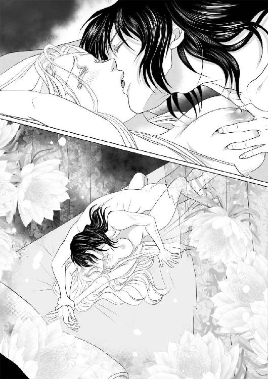
ためいきとともにディトリッシュ王子はアリアーヌから離れ、寝返りを打った。
終わった──のだ。この世のものとは思えないほどの快楽も、苦痛も。
そして、自分はもう処女ではなくなった。──両親が心配した通りになってしまった。『平凡でまともな』道には、もう決して戻れない。
アリアーヌは両手で自分の口を塞いだが、嗚咽で肩が慄えるのを抑えることはできなかった。
「泣くな」
冷ややかな声がした。
「その見目で、絹の衣装と宝石を与えられ、俺の『世話』をせよと送り込まれた、その意味が解らぬほど子供ではあるまい。何を泣く！」
「......お許し......ください......泣こうとして、泣いているのでは、な......ないのです」
他の選択肢もあった。だが、この道以外選ぶことを許されなかったのだ。そして、確かに覚悟してきた。
「お許しを......！」
アリアーヌは起き上がり、薄闇の中で切り裂かれた下着を探して身に着け、天蓋つきの寝台から降りようとした。しかし、手首を掴まれてそれも叶わなかった。
「何処に行く。俺の居室の扉は、夜は外から錠を下ろされる。俺が女の衣装を着て回廊や庭をうろつかないように」
この人は──そんなことをするのか。
驚きのあまり涙と嗚咽が止まった。
「そう。そうして静かにしていろ。眠りを妨げるな。眠っているときだけが俺の自由な時間だ。泣き声をたてて邪魔をするな」
アリアーヌは黙して寝台に戻った。
「俺は泣く女は嫌いだ。泣くなら二度と抱いてやらぬ」
「──」
「そうなれば他の見目良い女が連れて来られ、お前は宮廷を追われるぞ。俺は構わんが──純潔の代償に宝石が欲しいならばそれだけは守れ」
寵姫としてディトリッシュ王子の傍に留まらなければならない理由は宝石が欲しいからではない。純血の代償として、金や身分や宝石を欲しがっていると思われるのは屈辱的だったが、もう涙は出てこなかった。
アリアーヌは重ねた枕のひとつを引き寄せてそれに顔を埋めた。よく眠りたいというディトリッシュ王子から少しでも離れなければと思った。
眠ろう。王子は、暫くは自分を傍に置いてくれる気になったのだから。
朝になったら、王と女王に報告をしなければならない。自分は無事に──役目を果たせた、これから暫く──それが数日か数箇月かはわからないが──王子の傍にいて、その様子を報告することができる、と。
アリアーヌは貧しい家の最初の子供として生まれ、十歳を過ぎた頃には人目を惹く美貌が評判になった。両親はアリアーヌを自慢に思うよりも寧ろ心配だったらしい。同年代の少年達にも、もう少し年上の青年達にもよくからかわれた。
両親は、アリアーヌを釣り合った齢と身分で、物堅い気質の男のところに早目に嫁がせたかったらしい。そうでなければ、狭い田舎町で目立ち過ぎるアリアーヌはまともに生きることはできないだろう、と両親はある夜アリアーヌが眠っていると思い込んで相談していた。
両親のように、釣り合った相手と結婚をし、平凡というには少し貧し過ぎたが──だが、平穏な暮らしをするということが「まとも」だというのなら「まともでない」というのはどういうことなのか。そのときのアリアーヌにはわからなかったが、成長するにつれてわかってきた。幼い女の子に特別な嗜好を持っていたと思われる大人の男から気味の悪い視線を向けられたことも一度や二度ではない。金貨の入った革袋を持ってアリアーヌを売らないかと言ってきた人買いもいたが、両親は頑として断った。
年頃になったアリアーヌを男達は放っておかなかった。幼い頃から親しく行き来をしていた幼馴染の少年達は、何かと理由をつけて家に入り浸ろうとして両親に追い払われた。
アリアーヌは困惑した。農家の息子は作物を、鍛冶屋の息子は花模様を彫った真鍮の櫛を、土地も家も持たない使用人の子供は野の花をアリアーヌの窓辺に置いた。そのせいで、幼馴染の女の子達はアリアーヌを除け者にするようになった。子供の頃、一緒に野山を駆け回った友達が皆、変わってしまった。
村で一番の金持ちが、正式に間に人を立ててアリアーヌを息子の妻にしたいと言ってきた。
あの子はきっと玉の輿に乗ると思っていたよ、と嫉妬とも羨望とも取れるようなことを聞こえよがしに言われた。
村で一番の金持ちで、領主の遠縁にあたるというその家の息子とは口も利いた覚えがない。アリアーヌを遠目に見てその美しさに心を奪われたのだと仲介人は言った。
どうする？ と両親に問われたアリアーヌは答えに窮した。両親は、貧しくても決してアリアーヌを売ろうとはしなかった。その恩を返すまたとない機会かもしれないと思ったが、どうしても気が進まなかった。
どういうわけか、両親に似ても似つかないほど美しく生まれてしまったアリアーヌが『まともな人生』を送るためには、早く普通の結婚をして子供を生むことが肝要だと両親は考えていた。
アリアーヌは恋に恋する夢見がちな乙女ではなく、寧ろその逆だった。誰にも媚びたり愛想よくしたりした覚えはないのに、勝手にその気になった男達に振り回されて蓮っ葉な娘だと噂された。その状況から逃れるために、求婚してきた中で一番都合の良さそうな男と結婚する──それはあまりに理不尽に思えた。
仲介人は、アリアーヌには二人の妹がいるだろう、と言った。アリアーヌが金持ちと結婚すれば、妹達にもきっと良縁が見込める、勿論、そのときには十分な持参金を援助すると言った。両親は心揺れた様子だったが、仲介人が「こう言ってはなんですが、妹さん達は、アリアーヌさんの半分も美しくないのだから」と言った瞬間、アリアーヌは心を決めた。
「お嫁には、行きたくありません」
求婚してきた相手は好きでも嫌いでもなかった。しかし、自分のみならず、両親も、妹達も蔑まれ続けることには我慢できない。
両親が『相応の』家に縁づけたがっていた理由がよくわかった。
仲介人は、自分がアリアーヌの気に障ることを言ったことに気づいたらしく、慌てて機嫌を取り「まあ、そう急がずに。もう少しゆっくり考えれば、気持ちも変わるでしょうよ」と言った。
また来ますよ、と言った仲介人の足音がまだ聞こえるうちに、アリアーヌは両親に向き直った。
「お嫁になんか行きたくない。お金で買われて娼館に行くのとどう違うの？」
両親はその言い種を叱ったが、アリアーヌは結婚話を持ってきた仲介人と、人買いがどう違うのか解らなかった。
アリアーヌは、自分を奉公に出してくれと両親に頼んだ。金持ちと結婚するほどではないが、口減らしになるし、僅かでも仕送りができるようになればその分だけ生活が楽になるはずだ。
両親は、母とアリアーヌが家事の合間に紡ぐ糸を買いつけに来る旅の商人に住み込みの働き口の紹介を頼んだ。雇い主はくれぐれも堅い人にしてくれ、出来ることならば手に職がつく奉公先を、と言うと、自分が糸を売りに行く仕立屋を紹介してやろうと言ってくれた。子供のいない老夫婦がやっている店で、主は偏屈だが、夫人はそんな夫の宥め役になってくれるだろう。主は堅すぎるほど堅い男で、夫婦仲もとても良いから、アリアーヌによからぬことを仕掛けるようなことはあるまい、ということだった。
ただ、「何度も弟子を取って育てようとしたが、主が厳しすぎて皆やめていった。お前さんは大丈夫かい？」と尋ねられた。
「はい、あたし、一所懸命勤めます。よろしくお願いします」
食べていくことができて、僅かでも仕送りができて、そして何より生まれた村を出られるのならば何もいうことはない。
半月ほど後に、商人に連れられて、奉公先の仕立屋の店先で挨拶をすると、まず男ではないことに不満を言われ、容貌だけを見て、浮ついた小娘に職人の弟子が勤まるものかと言われた。ああ、やはり、街に出てもそういう風に見られるのかと落胆しかけたとき、夫人がアリアーヌの手を取って「この子はそんな子じゃないよ」と言った。これは糸車で糸を繰っている指だ、見た目に似合わず根気のある娘のはずだよと執り成してくれた。商人も、そうだよ、この糸を繰ったのはこの子だと言って、村を出るときに売ったばかりの糸の束を差し出して見せた。
主は、それを手に取って検分し、褒めも貶しもせずに商人に代金を支払っただけだったが、雇わないとは言わなかった。夫人は屋根裏にアリアーヌの部屋を用意してくれた。
その日から主を親方、夫人をおかみさんと呼び、アリアーヌはお針子として仕立屋で働くことになった。
商人が言ったように、親方は偏屈で無口、おかみさんは優しかった。
親方にはよく叱られたが、その後でおかみさんが必ず褒めてくれた。「目のいい子はお針子に向くんだよ。その細かいところまでよく見える目は大事にするんだよ」と言われて、喜んで修行しているうちに腕は上がり、親方に褒められることは遂になかったが、叱られることもなくなった。
おかみさんは、いずれアリアーヌに店を継がせようと言い、親方はまだまだ早いと言ったが、できないことだとは言わなかった。
アリアーヌは、店を継ごうが継ぐまいが、鋏と針と糸で生計を立てて生きる決意をした。あんな煩わしい思いをして、嫌々結婚などしなくても、街なら女ひとりで食べていくくらいのことはできる。絶対にそうなろう、と思った。
しかし、老婆のように頭巾を深く被り、来る日も来る日も工房で針仕事をしているだけでさえ、男達はアリアーヌに目を留めた。妻や愛人に、或いは娼婦にというのは生まれ故郷でも言われたので驚かなかった。女優や踊り子にという誘いには、流石に田舎にはない話だと思ったが全て断った。断っても、一度や二度では諦めない男達も多かったが、アリアーヌが村で一番の金持ちの息子との結婚話から逃げるように街にやってきたのを知っている親方とおかみさんはアリアーヌを守ってくれた。
しかし、ある日、小さな仕立屋に貴族の客がやって来たことで全てが変わった。
親方は、腕は良いが、職人気質が強く、商売で成功することをさほど望んでいなかったために、下町の小さな店を自分の城としていることに満足していた。中流階級の商人や、騎士身分の貴族が衣装を仕立てに来ることは間々あったが、爵位を持つと思われる身分の客を迎えるのは初めてだった。
その貴族の男は値踏みでもするように、アリアーヌの顔を凝と見た。疎ましく思いながらも、男達の視線に慣れていたアリアーヌは気づかない振りをして巻き尺で採寸をした。その貴族の視線は、これまでの男とは何処か違っているような気がした。
アリアーヌの姿が直接その貴族の男の目に触れ、手が身体に触れたのは、それが最初で最後だった。──そうなるはずだった。
高貴な客ということで、親方がひとりで布地を裁ち、仮縫いをし、アリアーヌは精々、本縫いを少しと、細部の刺繍、釦を着ける程度のことを手伝うことになった。
しかし、仮縫いの日、工房から尋常ではない怒鳴り声が聞こえた。おかみさんと一緒に駆けつけると、貴族が、自分の身体に針が刺さったと言い、親方は十代の小僧時代でもそんな粗相をしたことはないと反論し、刺したというなら針の痕を見せてみろと言った。
おかみさんは必死に親方を止め、代わりに謝罪したが、貴族は平民が貴族を傷つけることは許されないと詰った。
親方は本当に過失など犯していなかった、とアリアーヌは今も信じている。
貴族だからといって、平民を殺しても罪にならないわけではない。しかし、平民が一滴といえど高貴な血を流させた、しかも謝罪を拒んだということが原因ならば、裁判となったとしても、貴族の方は軽微な罰しか受けないだろう。
おかみさんは親方に、どうか謝って、と懇願したが親方は耳を貸さなかった。
「どうか、お許しくださいまし」
跪いて必死にそう言うおかみさんの隣に同じように跪くと、貴族はそれを待っていたように怒鳴り散らすのをやめ、アリアーヌの前に立った。
「この娘を差し出すならば、許してやろう。流した血の代償も求めぬし、この店の評判を落として潰すようなこともしないでおいてやる」
親方もおかみさんも凍りついた。
「なんて汚ぇ手を」
親方の額に青い血管が浮き出た。
「誰が渡すか、俺の娘も同然の弟子だ！ 跡取りがいなくなりゃいずれ潰れる店だ！ 潰すなり焼くなり好きにしろ！」
その言葉に、アリアーヌは息を呑んだ。故郷に親はいる。しかし、この街にもいる。この親方とおかみさんは親も同然だ。
「旦那様！ 本当にあたしが行けば親方を許してくださるんですか？」
そう言うと、貴族は勿体ぶった仕種で頷いて見せた。
「──行きます！ ですから、どうか、お許しください。親方やおかみさんを殺したり、傷つけたりしないでください。店もこのまま続けさせて」
早めに嫁に行かなければ『まともな道』は歩めないだろうと両親は心配した。その通りになった。
親方はアリアーヌのその決意にも激怒し「行くことはない！ お前を犠牲にしてまで守りてぇような店でもない！」と叫んだが、アリアーヌは心を決めた。
「親方、お世話になりました。あたし、親方とおかみさんに迷惑をかけてまで、この店にいられません」
荷物を纏めさせてくれと言ったが、貴族はその時間さえ与えなかった。アリアーヌは自分の針箱だけを持って貴族の馬車に乗ることになった。
「この店にいて、仕立の仕事を教えて貰うのは、本当に幸せでした」
親方は最後までアリアーヌを止めようとしたが、貴族の従者に遮られた。
自分は、この貴族の愛人になるのだろうと思った。その覚悟は、道中の馬車の中で決めなければならなかった。不安と嫌悪で身体が慄えた。自分も、故郷の両親も、親方もおかみさんも、こんなことは望まなかったのに。
しかし、何故かアリアーヌは貴族──館に着いてから、その中年男がアラン・ド・ブールレック子爵という名だと知った──この男の愛人になるのだ。おぞましさに慄えた。冷たい血が首筋のあたりで騒いでいた。
しかし、ブールレック子爵はアリアーヌに綺麗に整った小さな部屋を与え、小間使いと称する監視役の女性をつけただけで何もしようとはしなかった。生家には自分だけの部屋はなく、仕立屋でも屋根裏部屋に寄宿していたアリアーヌにとっては、十分以上に広く豪華で、お姫様の部屋のように思えた。
まず、アリアーヌは小間使いから食器の使い方や言葉遣いを直された。南の訛はおっとりとして女性らしく聞こえるが、やはり、高貴な方に仕えるからには王都風の発音が良いと言われた。
そして、下着と、上着、外套を一揃い与えられた。お針子であったアリアーヌには、それらが相当に高価なものだということが一目でわかった。アリアーヌは、裾を引く衣装を縫ったことはあるが、着たことはなかったので慣れるまで何度も転びそうになった。
とにかく小間使いからは一日に何度も「優雅に！」と言われた。「優雅」というのは、自分が仕立てていた貴婦人の衣装の襞が美しく映る動き、衣擦れの音が耳障りにならない動き方だとわかるのに随分長くかかった。しかし、それに気づいた日に、小間使いは目を瞠って「呑み込みが早いこと」と言った。
それから暫くして、何人もの教師がやってきた。
アリアーヌは読み書きが殆どできなかった。客の衣装を仕立てるには、採寸をしなければならなかったから数字の読み書きはできた。しかし文字は、筆記帳に客の名を書くときには一文字ずつ綴りを尋ねなければならなかった。襟や裾に、客の頭文字を美しく刺繍するのは得意だったが、おかみさんには「そのうち請求書の書き方くらいは教えなきゃいけないね」と言われたし、読書をすることなど考えたこともなかった。教師達のうちのひとりは侮蔑を隠そうともせず「こんな娘に教育を施してやる価値があるのかしら」と言ったが、歴史を教えてくれた別の教師は喉が嗄れるまで書物を読み聞かせてくれたので、アリアーヌは眠る前にその場所を読み返して暗誦できるようになり、結果、気がつくと書物を読むことについては不自由がなくなった。
文字を書くことを教えてくれたのは最初にアリアーヌの教師に任じられたことを嘆いた女性だった。アリアーヌが歴史書の内容を耳で覚え、声に出すことで文字を読むことにひとまず不自由しなくなったのを知って安堵したらしかった。まずは、自分の名前を美しく優雅な書体で絵を描くように書けるように、と命じられた。そして、本当に高貴な人というのは実は自分の名前だけ書ければ良い、他の書きものはそれが得意な人間が傍にいて代わりにしてくれるものなのだ、と耳打ちしてくれた。
ここに至ってアリアーヌは、ブールレック子爵は愛人に対して「高貴な人」としての教養を求めているのだろうか？ という疑問を抱いた。
その館で暮らすようになってから、奇妙なことにブールレック子爵は一箇月もの間、アリアーヌの顔を見にさえこなかった。
なんのために、あんな難癖をつけて自分を大きな屋敷に住まわせて、こんな教育を受けさせようというのだろう？
起きてから眠るまで食事をしている間さえ、礼儀作法を身に着けるための講義であることは辛くないといえば嘘になる。しかし、寝室で愛人としての振る舞いを強要されるよりは何百倍もましだと思った。
ブールレック子爵が、館にやって来たのは、一箇月と少し後のことだった。
教えられた通りに御辞儀をし、挨拶の言葉を交わすことができたのを喜んだが、その館に住んでいた一箇月余りの出来事を話すようにと言われ、その通りにするうちに南の訛が出てしまったときは、失望を露にした。
しかし、家庭教師達は、一箇月という急拵えで此処まで仕上がったのならば上出来なはずだと主張した。
小間使いは「礼儀作法、化粧、舞踊、読み書き。乗馬は元から少しできたようで幸いでした。南の訛が少し残っているのは、まあ御愛嬌。見目が良いお陰で、辺境の貴族の娘くらいには見えるはずでございます。もう一月あれば大貴族の令嬢、その後、都に馴染めば王族の姫と言って疑われない程度にして見せますが」と言い、歴史を教えてくれた教師は「学者になるには二十年かかるが、良家の子女の家庭教師になるならあと五年」と言った。ブールレック子爵が学者や教師にするために連れてきたのではない、と言うと「貴族の御曹司の相手をするなら十分以上。おつむの軽いお坊ちゃまだと賢すぎて敬遠されるかもしれません」と言った。
ブールレック子爵は、まあ仕方あるまいと呟き、家庭教師達に「報酬を受け取って去れ、このことは絶対に口外しないように」と言った。
そして、アリアーヌはまた馬車に乗せられ、ブールレック子爵に「お前は私と共に王都に行くのだ」と言われた。そこで何を？ と問うと、子爵は顔を顰め、「お前の支度をするのにどれほどの金がかかったと思う？」と話題をすり替えた。
一流の教師五人、衣装箱二つ分の衣装、宝石箱いっぱいの装身具を用意しなければならなかった。どれほど散財したと思う？ とも言われた。
苦情を言われても困る。それらはアリアーヌが要求したものではない。しかし、衣装箱二つ分の衣装という言葉には惹かれずにいられなかった。布をくれれば自分で仕立てたのに。いや、まだ自分が断ち方、縫い方を教わっていない種類の衣装はたくさんある。それに、王都の最新流行は半月、ときには数箇月遅れで南の街にやってくるから、見たこともない形や柄の衣装かもしれない。着たいとはさほど思わないが、一刻も早く手に取って見てみたい。
アリアーヌは仕立屋に奉公に出てから一日として針を持たない日はなかった。この子爵の館で教育を受けている間も、寝台に横たわる前には針箱を開け、与えられた衣装の袖や裾に縁飾りの刺繍をした。そうしなければ指先が疼いて眠れなかった。
王都に到着した夜に漸く、アリアーヌは馴染んだ仕立屋の屋根裏から連れ出された理由を聞かされた。
お前は王子の『お気に入り』にならねばならない、と子爵は言った。
「『お気に入り』？ ──でございますか？」
「そうだ」
「『お気に入り』とは──なんでしょう？」
「『お気に入り』は『お気に入り』だ。もう黙れ。襤褸を出すな」
翌朝には子爵の『姪』と称して王宮に連れて行かれ、秘かに、あくまで私的なものとして王と女王に面会することになった。
王位を継いだのは女王陛下、その夫には本来ならば王位はなく、王配殿下と呼ぶべき存在であるはずだったが、最初の夫を病気で亡くした女王は二番目の夫には特別に王冠を与え「彼は我が夫にして共同統治者である」と宣言した。
女王の最初の結婚は典型的な政略結婚だった。生まれる前から婚約が決まっていた隣国アニバル王国の王子だった。五人もの王子王女を得たことで不仲ではなかったことが察せられたが、喪が明けてすぐに公爵の地位にあったリオネルと再婚した。二人は幼馴染であり、悲しみに沈む女王を慰めているうちに、双方、想いを打ち明けることさえなかったが、お互いが淡い初恋の相手であったことを知ったのだという。
女王が二人目の夫を持つことについては、大きな声で異を唱えるものはいなかった。他国に侮られないためにも、女王ひとりで治めるよりも、配偶者がいた方が寧ろ良いのではないかという意見さえあった。
アリアーヌを見て、王は軽い驚嘆の声をあげた。
「この国の中で、女王陛下の次に美しいと言って過言ではないな」
王は注意深く隣にいる女王を気遣いながら、アリアーヌに最大限の賛辞を与えた。
「──確かに見目麗しい娘ですが......」
女王は半分開いた扇で口許を隠した。
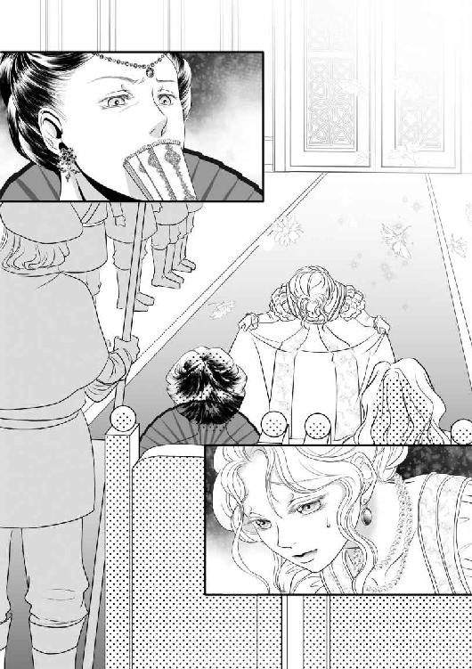
「やはり、結婚もしていない王子に寵姫を持たせるのは好ましいこととは思えません」
「貴女の厳格さは承知しているが──もう、そういう段階は超えている。この娘ならばディトリッシュ王子も興味をもたずにはいられまい。──まともな男であるならば」
わざわざ言い足した言葉には逡巡と、何処か御機嫌を窺うような不自然さが感じられた。
女王は微かに眉を寄せた。
「女性である貴女の潔癖さも理解できるが──男であるならば、結婚前に済ませておいた方がいいこともある。婚儀の夜に、新妻を相手にしくじるようなことがあっては......」
女王はそれ以上聞きたくありません、と言って扇を振った。
「女王として、母として、本来許し難いことですが──わたくしの王子の寵姫となることを認めましょう」
「寵姫とは何でしょうか？」
そう尋ねると女王はブールレック子爵に、そんなことも教えずに連れて来たのか、と言いたげな非難めいた目を向けたが、アリアーヌに対しては幾分か好意的な口調になった。
「特別な存在です。妃でも召使でもない。彼女達が与えられぬ私的な歓びを与える女性のことです。次の王たる王太子の『世話』をするものです」
結局のところアリアーヌは、愛人になることに変わりはないのだ、と思った。ブールレック子爵に囲われる愛人ではなく──相手は王子で、『寵姫』と呼ばれるらしいが、どちらでも同じに思われた。
「ディトリッシュの目に適い、身分を弁えて高慢な振る舞いを控え、無論、政治に口出しなど一切せぬならば、そなたがわたくしの宮廷に住まうことを許しましょう」
「精一杯、努力致します。私ができることならば、どんなことでも──」
仕立屋に奉公に上がるときにも同じことを言った。
「もしも、ディトリッシュに気に入られたならば、正式な妃となること、王族の私生活について語ること、この王宮から出ること、それ以外のことならばどんな望みも叶えましょう。宝石も衣装も──」
アリアーヌは思わず顔を上げた。
「だいそれたことは言いません！ ただ、故郷の生みの親と、南の街に住んでいる育ての親を......」
殺さないでください！ と訴えそうになって、隣にいるブールレック子爵の表情の険しさに気づいた。
「......あの、手紙は書けなくても構いません。元気に暮らしていると伝えて、皆が安心して今まで通りの暮らしができるようにして、いただけたら、それで......」
「欲のない遜った娘だこと」
女王はそう言い、王も申し分あるまい、と同意した。
妃でも、召使でもない存在。しかし、次の王たる王太子の『お気に入り』として在らねばならない。そうなるべく出来得る限りの努力をするとアリアーヌは約束した。女王陛下に。
ディトリッシュ王子の『お相手』をした翌日、アリアーヌは女王の私室に呼ばれ、「首尾は？」と問われた。隣には王がいる。
どう答えていいかわからなかった。アリアーヌは逡巡し、ありのままに話そうと、口を開いた瞬間、全身が燃えるように熱くなった。あんなことを、語れるはずがない。それも、女王陛下に。
「......その......王子殿下は......私は......あ、あの......！」
言葉に詰まったアリアーヌを見て、王と女王は顔を見合わせた。
「その顔を見れば、察することはできますが──アリアーヌ」
この国で最も高貴な女性に名を呼ばれ、アリアーヌは顔を上げた。
「このことだけははっきりと訊かねばなりません。ディトリッシュは──わたくしの末の王子は──」
女王もまた、直截な表現でそれを語ることには慣れてはいないようだった。濁した語尾は、王が引き継いだ。
「普段は、あの形をしているが、寝室では男であったのか？」
アリアーヌは慄えた。それを答えるということは、王と女王に対して自分がもう乙女ではないと告げることになる。
「......はい。王子殿下は......その......はっきりと、男性でいらっしゃいましたし......私は......両陛下の御命令通りに、お役目を果たせ......ました......」
この上の恥辱があるだろうか。アリアーヌは自分の身体が慄えるのを止めることができなかった。
「重ねて尋ねる。アリアーヌ、偽りは許さぬ。そなたは乙女か？」
王が尋ねた。
「いいえ」
アリアーヌはそう答えた。
「そなたを乙女でなくしたのは誰か？」
「王太子殿下であるディトリッシュ様でございます」
女王は深く安堵の息を漏らした。
「それで、ディトリッシュは何と？」
「純潔の代償は支払うから、宮廷に留まるように、と」
「勿論、そのように」
女王は扇で口許を隠して頷いた。
「一夜の恋人ではなく、暫し、そなたを寝室に侍らせたいということなのだな。では、王宮内に一室を与え寵姫の品格を保てるだけのものを調えさせよう」
王が言うと、王妃はためいきをついた。
「本来、わたくしの宮廷に『寵姫』などというものの存在を許したくはありませんが──やむを得ないことでしょう。あの子が女性を愛せるか否かというのは王家の、ひいては王国の安泰にも関わることだし──あの子も初めての女性を粗略に扱うことは望まないでしょう」
アリアーヌは思わず女王の顔を凝と見てしまった。そして、それが無礼なことだと思い出して頭を下げた。
女王陛下は、私がディトリッシュ王子の初めての女性だと思っている。
おそらく──いや、絶対にそうではない。アリアーヌは全く経験がなかったが、ディトリッシュ王子がそうでないことはわかる。相手が誰かなど知る由もないが、ディトリッシュ王子が女性を知らなかったはずは絶対にない。
喪失の痛みは確かにあったが、その前の愛撫の甘美さは、この世のものとも思えなかった。痛みは人によって処女を喪った後も暫くは続くと、ブールレック子爵のところで世話をしてくれた小間使いが言っていた。快楽を得られるのは、ずっと先のことになるし、生涯それを感じない女性もいる。もし、いつかそれを感じる夜があったならば、己の肉体をそのように造り、相手の男に技巧を授けた愛欲の神に感謝すべきだと言った。
私は、最初から、あんな風に──
そう思うと、アリアーヌは自分が恥ずかしくなった。
王と王妃の私室を出ると、女性の召使が扉の前に控えていた。
「侍女として、あなた様のお世話をすることになりました。クロエとお呼びください」
黒髪の女性がそう言った。年齢はアリアーヌと同年代に見える。そして、小柄で細身。ディトリッシュ王子が白銀色だと言った髪に、長身で豊かな胸のアリアーヌと対照的な見目だった。しかし、闇夜の空のような髪に灰色の瞳は、どんな色の衣装でも似合うだろうと思われた。髪と瞳に合わせた黒や灰色でも、白でも、真っ赤でも、緑でも──好む女性は多いが、組み合わせが難しい淡い薔薇色も、きっと似合う。
彼女の後について随分長く歩いた気がする。王宮とはなんと広いのだろう。
クロエと名乗ったその女性は、蔓薔薇の装飾を施した両開きの扉を開けた。
女王は「一室」と言ったが、部屋はひとつではなかった。応接室と続き部屋になっている居間の奥に小さな寝台を二つ並べた寝室があった。装飾らしきものは少ない。自分はここで眠るのかと尋ねると、この部屋は身の周りのお世話をする召使が仮眠をする部屋だと言われた。
「他の部屋よりも質素で落ち着けそうだと思ったのに......」
「アリアーヌ様の寝室は、こちらでございます」
そう言って通された部屋には、ありとあらゆる場所に薔薇の花が飾られていた。壁の絵画も花の咲き乱れる春の田園風景。燭台も天蓋つきの寝台の支柱も蔓薔薇の装飾がなされている。
「このお部屋は蔓薔薇の間と呼ばれております。二百年前にはクロード二世王の夭折した王女の部屋でございました」
二百年前にはこの部屋が──王宮があったらしい。アリアーヌは王家の歴史の深さに眩暈がした。
「何人かの女性がお住まいになりましたが、最近では、八十年前に、ブラン公爵夫人の称号を得たマダム・ジョルジェット......今の女王陛下の曾お祖父さまがお気に入りだった御友人のお部屋でした」
『お気に入り』の『御友人』。
つまり、この一室──というより、一角と表現した方がいい如何にも女性好みの可愛らしい部屋は、代々の寵姫の部屋だったということだろう。
そして、蔓薔薇の咲き乱れる小さな庭──アリアーヌの感覚では決して小さくはないが──の小さな木戸を開けると小路があり、そこを通れば誰にも遭わずにディトリッシュ王子の部屋に行けるということだった。
寵姫──とてつもない立場になってしまった。
「アリアーヌ様の公式なお立場は、女王陛下の侍女。ブールレック子爵の姪御様として、この度宮廷に出仕することになった──と、いうことになります」
勿論それは『公式』なものでしかない。信じられないことに、アリアーヌ自身に、このクロエも含めて少なくとも数人の召使がつくらしい。
「午後には、仕立屋と宝石商が参ります」
仕立屋と聞いて、アリアーヌは息を呑んだ。
「あの......でも、私、ブールレック子爵様から......」
「人前では、伯父様とお呼びになってください」
アリアーヌは両手を口に当てた。
「伯父が、衣装も宝石も支度してくれました」
「あの程度のもの」
クロエは既にアリアーヌの荷物を見たらしい。
「宮廷に滞在を許されるほどの貴婦人ならば、あの十倍でもまだ不足です。ましてや王太子様の寵姫でいらっしゃるのならば、百倍お持ちになっていらしても贅沢とは言われません」
百倍──。
アリアーヌは思わずクロエの言葉を口の中で繰り返した。
昼食の後、アリアーヌの部屋の前に商人達が列をなした。
宝石には余りに縁がなさすぎて、目も利かないのでクロエに任せた。最低限、と言ったのに、クロエは紅玉、蒼玉、翠玉の首飾りを選んだ後、同じ色味で腕輪、指輪を選び出した。
「そ......そんなにたくさんは」
必要ない、と言いかけたとき、クロエは更に「服喪用の真珠を見せて」と言った。
「クロエさん......」
「高貴な方が、侍女に敬称をつけるものではありません」
「でも」
「アリアーヌ様は、王宮でどれほどの儀礼があるか御存知でいらっしゃらないでしょう。これでも最低限です」
宝石商がいる間は落ち着かない気分だったが、仕立屋が布地を持って来たときには全く違う意味で落ち着かなくなった。胸の高鳴りを抑え切れない。
アリアーヌがお針子として修業をした街は、生まれ故郷に比べれば大きな都市だったが、それでも王都に比べればずっと小さいのだろう。部屋いっぱいに広げた布地の種類と質だけでそれがよくわかる。
アリアーヌは恐ろしいほどに赤い色の布地に手を触れた。
「血のような赤......」
「よくアストル産と偽って濁った色のが出回りますが、これが本物のアストルの赤でございますよ」
仕立屋はそう言った。
ヴィフの青、フラムの黒、そしてジューヌの淡い紫。仕立屋は、アリアーヌがまだ見たことのない織物の名前や産地を教えてくれた。そして、アリアーヌが、見たことがある布ならば、どの産地で織り、どんな染料で染めたものかを言い当てられるということに驚いた。飾り帯用の革が牡牛から取ったものか牝牛から取ったものか、判別できたときには感嘆の声さえ出ないようだった。
「お気に召したならば、全てお求めになっては如何でしょう？」
アリアーヌと仕立屋の会話が途切れないのに、耐えかねたらしいクロエが言った。
「......全部......？」
「はい、全部。此処にあるものを全てお買いになったとしても、先刻の首飾り一連ほどの値段ではございませんし」
クロエは欠伸を堪えているようだった。
「ああ......」
アリアーヌは思わず息を呑み、そして言ってしまった。
「では、全部」
仕立屋は歓喜の表情を浮かべ、クロエは安堵したようだった。
「畏まりました。では、寸法を測らせていただいて、急いで仕立てを──」
「それは必要ありません」
アリアーヌは言った。
「は？」
「私が全部自分で縫います。ああ、革細工は教わっていないので、飾り帯と外套と手袋だけは持ち帰って仕立までお願いします」
「アリアーヌ様！」
「これだけ買っても大丈夫なら、糸も買って構わないでしょう？ 他の道具は全部持って来たし」
「御身分の高い方が、縫物などする必要は......」
「え？ 他の家事はともかく、針仕事は身分の貴賤を問わず女性の嗜みだって、母さん......母から教わったけれど？」
「そうは言われますが......それは建前で......現に仕立屋という職業があるくらいでございますから、刺繍や裁縫を嗜むような貴婦人は百年前には絶えています。......近頃では狩猟や乗馬さえ出来ない貴婦人も多いのに」
「でも、恥ずかしいことではないのでしょう？ 人前ですることでもないし......」
「それは、まあ......」
クロエは困惑した顔でそう言った後、面倒になったらしく「アリアーヌ様の仰せの通りに」と仕立屋に命じて退がらせた。
「......まあ、古風な美徳ですけれど」
「この部屋に、作業台を置けるかしら？」
「......ほとんどの貴婦人はお衣装に凝りたがるものですが──御自分で誂えたいという方は......」
「......御存知なんでしょう？ 私は、貴婦人ではないって」
おそらくクロエは貴族の出身だろう。
クロエは口を噤んだ。また困惑させてしまったらしい。
「──平民に仕えるのは気分が悪いでしょうけど、我慢していただけますか？」
「貴族といっても......私は貧乏騎士の娘ですし──気分が悪いなんて、そんな......アリアーヌ様は......どんな貴婦人にも負けないほどお綺麗です」
老若男女を問わず、容姿を褒められてきた。それに驕ったことはない──と思う。それで得をしたこともなかったと思う。示される好意にはいつも下心が透けて見えた。しかし、今日、これだけの布地を見せられ「全部欲しい」と言って叶ったことは夢のように嬉しい。この見目に生まれて良かったと初めて思った。
海の向こうの国からやってきた見たこともない光沢の布地や飾り紐、『糸の宝石』と称される繊細な透かし模様のレースも「全部」の中に入っている。仕立屋が工房から選りすぐったものを持って来てくれたのだろう。もし、そうでなく、店や市場に出向いて、値段は気にしなくてもいいと言われていたら、この広い部屋に入りきらないほど買ってしまっていたかもしれない。
なんて幸せなんだろう。その気になれば、此処にある布だけで店を一軒持てる。それはとても小さい店だが、上質で高価なものを扱うことで評判になるだろう。
「ああ......嬉しい」
アリアーヌは思わず声に出して言った。何を縫おう？ これから夏になるから薄手の麻で何か──と、考えて思い出した。
昨晩、王子に短剣で引き裂かれてしまった下着。アリアーヌは、あまりに無惨なことになってしまったそれを、人目に触れさせたくなくて仕舞い込んでしまった。
「まずは、この子をなんとかしてやらなきゃ」
クロエはアリアーヌを凝視した。下着が刃物で切り裂かれていることよりも、それを生きている人間のように「この子」と呼ぶアリアーヌという人間の方が異様に映るようだった。
「安心して。お前は上等の麻をたっぷり使って仕立ててあるから、元よりずっと綺麗にしてあげる」
衣装だけではなく、布地や、糸や針や指貫といった裁縫道具を「この子」とか「お前」と呼ぶのは、アリアーヌの癖だった。仕立屋で修業をしていた頃、親方や、おかみさんから、それを変だと言われたことは一度もなかったが──クロエにとっては異様なことであるらしい。
「......アリアーヌ様......」
「何？」
クロエは目を逸らした。
「ああ、あの......変......？」
アリアーヌの侍女であるという立場上、変だと言い切ることはできないらしい。
「......その、他の人の前では、そういう風には言わない方がよろしいかと存じます」
「そう？」
「はい」
「......気をつけることにします」
まるで一気に鋏を入れたように切り裂かれているのが幸いだった。端を始末して、レースを縫い付け、薄い飾り紐を結んで留めるようにしよう。
アリアーヌは椅子に座り、日暮れまで針と糸を持って過ごした。
気がつくと、クロエが燭台を近くに置いてくれていた。
「ああ、ありがとう」
「そろそろお食事の時間でございます」
「ああ、もう？ でも、もう少しだけだから」
「根を詰め過ぎでは？ 少しお休みになった方がよろしいと存じます」
「以前は、食べるときと寝るとき以外はずっと針か鋏を持っていたから、これが普通なんです」
「......その、アリアーヌ様。私がお手伝いできることがあるならば仰っていただければ......」
「いいえ、特には。だって、クロエさん......クロエは、お針子ではないし、針仕事が好きでもなさそうだし」
「......アリアーヌ様のお世話が私の仕事でございますので」
「お世話......？」
「たとえば──本をお読みして差し上げたり、お手紙の代筆をすることも出来ます。必要とお思いになったときにはお化粧直しをして差し上げますし、楽器も幾つか嗜みます。お好みならば乗馬のお供も。御退屈なときには、おしゃべりのお相手も致します」
最後のひとことで、アリアーヌは自分が針仕事で時間を忘れている間、クロエが暇を持て余していただろうということに気づいた。
「ごめんなさい！ 退屈でした？ 私ったら縫物に夢中になってしまって。──無視するつもりはなかったの。つい癖で」
「いえ、アリアーヌ様のお相手をするのが私の仕事ですので、アリアーヌ様に私の相手をして戴くというのは本末転倒で......」
「本当にごめんなさい。私、何よりも針仕事が好きなんです」
「......ええ、それは──今日、半日ほど拝見してよく解りました」
「ええと......あの、私、貴婦人として修業したのは一月ほどで......お世話をして貰うというのに慣れていないんです。クロエさん......クロエも、好きなことがあるでしょう？ 私が針を持っている間は、それをなさっていてください」
クロエは、心底困惑したらしかった。
「私の好きなこと──と、言われましても。アリアーヌ様のお傍にいて『それ』といわれたら『それ』をお渡しするのが仕事でございます。ですから、アリアーヌ様が縫物をするのがお好きだと仰るなら、私に道具を取るように指図してくださいませ」
「私、弟子を取るほどの腕は。仕立屋を開けるほどの裁縫師でもないし！」
「いえ、アリアーヌ様、私はお針子の修業をさせていただきたいわけではなく......」
クロエは言い澱んだ。
「好きにして良いと仰られたからといって、お傍を離れるわけにはいかないのが侍女というものです」
「そうなの？」
「お給金をいただいておりますし──それに......私の好きなこと、といえば......」
「何？ クロエは何が好き？」
「好き──と、いうのとは少し違いますわ。辺境の貧乏貴族の家で、少し古風で、変わった育ち方を致しましたの」
「変わった？ どんな？」
クロエは僅かに首を傾げた。
「......そう──今風ではなく、騎士も貴族も王族も、儀礼などお構いなしに戦った時代がありましたでしょう？ その頃には、女も最低限、己の身は守らねばなりませんでしたし──」
アリアーヌは目を瞠った。
「クロエは剣を使うの？」
「いいえ、まさか、剣や槍は殿方の武器ですわ。そうではなく──」
「それじゃ、何？」
クロエは笑った。
「最低限、足手纏いにならないように、馬に乗れる程度ですわ。先刻申し上げた通り、今時の貴族のお姫様は厩の臭いや落馬を嫌がって触れるのも嫌がることが多いですが──私は祖母が昔気質だったので......乗馬と狩りをそれなりに」
「ああ、そうなの？ 私も少しなら。貴族が乗るような立派な馬じゃなく、農家で荷車を曳く年を取ったおとなしい馬だったけれど、少しだけ」
「まあ、それでは、明日はアリアーヌ様専用の馬をお選びくださいませ」
「いえ、そんな──」
乗馬はそれほど得意ではない。乗ったこともあるという程度で、それも近所の農家で飼われていた年老いた馬一頭だけだ。
しかし、クロエの瞳が輝いている。瞳孔が大きくなって、灰色の目が殆ど黒に見える。
馬は欲しくない、見せて貰わなくてもいい、と言ったら落胆させるだろう。「それじゃ一頭だけ」と言いかけて気づいた。クロエも乗れるように、二頭必要だ。選ぶのは──クロエに任せよう。この様子なら、きっと良い馬を見る目があるだろう。
本当なら、乗馬など嗜まずに、静かにこの部屋で針仕事をしていたいが──お針子をしていたときも、ときどき、おかみさんに「たまには外で陽に当たらないと身体に悪いよ。そばかすが少しできるのと、病気になって背中が曲がってしまうのと、どっちがましだと思う？」と叱られた。別に日焼けなど気にしたことはない。ただ籠もって針を動かしているのが好きなだけだったが、身体によくないと言われて、お使いを言いつけられた。面倒だが、アリアーヌが本当に好きなことだけをしていたら、クロエが退屈に耐えられないだろう。
──それに、きっと、太ってしまう──と、アリアーヌは自分の前に並べられた夕食を見て思った。
祭や結婚式でさえ、これだけの食事が並んでいるのを見たことがない。
クロエは「全部食べなくてもよろしいのですよ」と言ってくれた。食べられるはずがない。これだけの量を食べきれるはずがない。ときどき、太った貴族を見かけるのは、こんなに食べているからだろうか？
「アリアーヌ様が、お残しになった分はお付きの召使がいただきます。無駄にはなりませんので、御心配なさらずにどうぞ」
アリアーヌはクロエを見た。
「クロエも？ 私の食べ残しを？」
豪華な食事には違いないが──それでも、やはり申し訳ない気がする。アリアーヌが平民の出で、クロエが騎士身分の家に生まれたことを差し引いても、罪悪感さえ覚える。
「いえ。私は、アリアーヌ様がこの王宮にいらしたことで、侍女に昇格することができましたから、別に私用の食事が用意されます。アリアーヌ様がお残しになったものを食べるのは、厨房で下働きをする者や、洗濯や掃除といった仕事をする者達です」
アリアーヌは、ブールレック子爵の館で、小間使いから、食べ切る場合も残す場合も、食事の後の皿が見苦しくならないようにと教育されたことの意味がわかった気がした。綺麗に食べよう。
「十分な量が用意されていますから、使用人のために多く残すなどということはなさらないでくださいませ」
クロエはアリアーヌの表情を読んだらしかった。
夜がやってきた。
クロエが、王子の寝室に侍るのに相応しく装わせてくれた。
何をするのか、もうわかっているから、前夜ほど不安ではない。
クロエが先に立って手燭を持ってくれた。狭い小路を蝋燭の炎が微かに照らしている。
「足許にお気をつけて。アリアーヌ様」
半月だが雲はなく、明るい夜だ。灯りがあれば転ぶようなことはない。クロエは殆ど足音をさせずに石畳を歩き、尖った柵に囲われた庭の前で足を止めた。小さな門には厳重に鎖と錠が掛けられている。クロエは腰につけた鍵束で錠前を外し、巻き付けられた鎖を解いた。
「この先へは、おひとりで。私は、これ以上進むことを許されておりません」
クロエはアリアーヌに燭台を手渡した。
「ええ」
アリアーヌが門の内に入ると、クロエは錠と鎖を元通りにした。
テラスから王子の部屋に続く扉を叩くと、中から声がした。
「おお。不幸な娘がやって来た。この牢獄から逃げることも叶わずに」
アリアーヌは少し躊躇ってから扉を開けた。
「王子殿下」
ディトリッシュ王子は、前夜と寸分違わぬ格好で寝椅子に背を預けていた。緑色の地に金糸の刺繍をした、元は豪華であったと思われる大きな肩掛けを上半身に巻きつけ、その上には幾重にも首飾りを掛け、手袋をした全ての指に指輪を嵌め、髪は梳かしもせず──そして、青い瞳は煌めいて見える。
「お前、女王と王に何と言って取り入ったのか言ってごらん」
「取り入った──なんて......」
「ディトリッシュ殿下が、女を愛することができるのか、男しか愛せぬのか、それとも男に愛されることを望むのか──それを尋ねられたのでしょう？ お前はどう答えたの？」
そこまで直截な問いはなかった。しかし、尋ねられたのはそういうことだったのだろう。
「ありのままを」
「ありのまま？ ディトリッシュ殿下が閨で言ったことをそのまま、事細かに、何から何まで？ 王と女王に？」
全身が慄えているのに、燃えるように熱い。どうして、何度も、こんな屈辱を浴びなければならないのだろう。
「......何から何までというわけでは──」
アリアーヌは辛うじてそう答えた。
王侯貴族というのは──もっと高貴なものだと思っていた。なのに、女王も、王も、この王子も、新婚夫婦を冷やかす農民よりも慎みというものを知らない。
「掃除をしに来た使用人が、敷布を新しいものに替えて、お前の純潔の証の残ったものを持ち去ったわ」
アリアーヌは思わず息を詰めた。それを、誰かが──もしかしたら王と女王も検分したというのだろうか？ 信じられない。
「そう怒らないで。昔、王侯貴族の新婚初夜の床入りを大勢が見物したことを思えば、それくらいどうということはないし──望んだものは得られたのでしょう？」
ディトリッシュ王子はアリアーヌの手を取った。昼間、宝石商から買ったばかりの大粒の紅玉の指輪が蝋燭の炎に照らし出されている。アリアーヌは思わず手を引いた。
「こんなもの──望んだことはありません！」
王族も、貴族も、人より少しばかり見目が良いだけの貧しい平民の小娘など、好きなように扱っていいと思っている。この王子もだ。
アリアーヌは唇を噛んだ。
「では、何を？」
ディトリッシュ王子は嘲笑した。
「奉公先のお店と、親方とおかみさん、そして故郷の家族の命です！」
低い含み笑いの声が止まった。狂っているのだとしたらどうせ何を言っているのかもわからないし、覚えてもいないだろうと思って、つい怒りに任せて叫んでしまった。しかし、ディトリッシュ王子は、声色と言葉遣いは女を真似ようとしているが、会話は成り立っている。
「......そこまでやるのか、あの男」
ディトリッシュ王子は形良く濃い眉を寄せ、そう言った。
『あの男』とは、ブールレック子爵のことだろうか？ それとも──まさか、もうひとりの御方、国王陛下のことだろうか？
あの男、と口走ったときの声も表情も、正気にしか見えなかった。
「王子殿下の寵姫となった御方、お名前を。それとも、妾に名乗るのさえ厭わしくて？」
ディトリッシュ王子は、声音と口調を元に戻した。
そういえば、まだ名乗っていなかった。
「アリアーヌと申します。ブールレック子爵の姪にして、女王陛下の侍女──」
「あの俗物！ あんな不細工な男とお前が血縁のはずがない！」
ディトリッシュ王子は、ブールレック子爵を一言で的確に表現した。
「──元は──南でお針子をしておりました。裁縫師となり、小さな仕立屋の女主人となることが夢でございました。宝石など──」
アリアーヌは指輪と腕輪を外した。
「お好きならば、どうぞ、差し上げます」
ディトリッシュ王子は、身に着けられるだけの宝石を纏っている。
「──」
ディトリッシュ王子はきつく眉を寄せた。
「ああ！ 嫌な夜！ 蜜蝋の匂いが鼻につく！ いいえ、これは、血の──毒の匂い！ 誰かが妾を殺そうとしているわ！ 古来より、毒とは女の武器という！ ならば、今の妾ならば毒には害されぬはず！ そうでしょう！ 王子殿下の寵姫殿！」
どう返事をしていいかわからない。
ディトリッシュ王子は──毒を畏れている？ 三人の兄達が毒で殺されたからだ──と、思い込んで女の姿をしているのだろうか？ 女ならば殺されないと考えて？
相次いで三人の王子が死んだのは──やはり、暗殺だったのだろうか？ だとすれば誰が？
「考えるな」
不意に、ディトリッシュ王子の声が低く──おそらくは、本来の自然な声に──なった。
「望んだものであろうとなかろうと、代償は受け取っておけ。古来、宝石は魔除けだった。──俺はそんな迷信は信じぬ。兄達も宝石は持っていたが若くして死んだ。だが、宝石は金になる。いつかお前が仕立屋の主となるときにも役に立つだろう」
今日、買った首飾り一連が、部屋いっぱいの布地と同じ価値だとクロエも言った。
アリアーヌは握った拳をもう片方の手で包んだ。
「来い、アリアーヌ。役目を果たせ。そして、俺がどんな風にお前を抱き、何を言ったか王と女王に余さず語れ」
アリアーヌは、ディトリッシュ王子に従って寝室に行った。
前夜は気づかなかったが、ディトリッシュ王子が肩掛けとして纏っている布は、この豪華な寝台の天蓋から垂れ下がる帳を引き裂いたものだ。元々、身に着けるものとして仕立てられたものではないから、豪奢なのに、こんなにも粗野に映るのだ。
ディトリッシュ王子は幾つも重ねた首飾りを無造作に床に落とし、その肩掛け──として使っている襤褸布を脱ぎ捨てた。革の上着は昨夜と同じ男物、下着は厳密には男物女物と区別することはないが、女性ならば、女性らしく刺繍をするのを好むはずだ。
「どうした？ 来い。また服を引き裂かれたいか？」
アリアーヌは首を振った。とんでもない。
息を詰め、歯を食い縛り、自分の手で服を脱いだ。
今日、ディトリッシュ王子の部屋に来るために着てきた服はアリアーヌ自身の手で自分の身体に合うように誂えたものではない。しかし、それでも高価な布を使い、腕の良い職人の手によるものだ。どんなに高価なものであろうと、古着屋にも置けないような襤褸であろうとも服に罪はない。
アリアーヌは胸を両腕で隠しながら、ディトリッシュ王子が横たわる寝台に入った。ディトリッシュ王子は上掛けを持ち上げてアリアーヌを迎え入れた。
その仕種を何故かとても優しく感じ、アリアーヌは息をつくことができた。常軌を逸した言動をする人であるがために、尚一層、そう感じるのだろう。
羞恥で強張ったアリアーヌの肩を抱き、ゆっくりと背中を撫でる。
「寵姫ならば慣れろ」
アリアーヌは目を伏せた。ディトリッシュ王子の肌の熱が滲み込んでくるような気がする。ディトリッシュ王子の手はまだ背中を撫でている。昨夜も今夜も、ディトリッシュ王子の部屋に来る前に湯浴みをした。そのときも、召使達に丁寧に洗われ、身体の隅々まで触れられたが──こんな風にはならなかった。
「もう春も終わるのに、何故こんなにも冷たい？」
おそらく、湯浴みをしてすぐに夜風に当たったから──そして、緊張しているせいだろう。
この王子は、季節の移り変わりを知っているらしい。自ら望んで籠もっているのか、それとも尋常ならざる言動と形のために幽閉されているのか──アリアーヌにはわからない。しかし、殆ど外に出ることもないはずなのに、この人は知っている。そして、襤褸を纏ってはいるが、湯浴みはしているらしい。高価な香料入りの石鹸の香りがする。それは、アリアーヌが先刻、浴室で使ったのと同じもののようだった。
幼い頃、母が背中を優しく叩いて寝かしつけてくれた。
今、同じようなことをされているが、眠くはならない。寧ろ、心臓が高鳴って息が苦しい。
膝に当たる硬いものが何なのか、もう知っている。ディトリッシュ王子は自分の欲望を抑えて、アリアーヌの肌を温めてくれている。
人は、ディトリッシュ王子が狂っているという。しかし、そうであろうと優しい人に違いない──自分の純潔を与えた人だからそんな風に感じるわけではない──と、思いたい。
誰も来ないこの部屋で、本来、この人は自分をどう扱ってもいいのだ。痛めつけて言うことを聞かせても構わないし、殺したとしても──そうたいしたことにはならないはずだ。
それなのに、天蓋の下ではこの人は優しく触れてくれる。
アリアーヌの身体の強張りが解けると、ディトリッシュ王子の手は白い胸を掴んだ。
「あ！」
身体が跳ね上がろうとするのを、ディトリッシュ王子が抱き止めた。
「豊かな割には硬い胸だ。此処は特に」
ディトリッシュ王子はアリアーヌの胸の先端を抓んだ。
「ああ......王子殿下......」
「ディトリッシュと呼べ」
「......でも......」
そう言いかけると、ディトリッシュ王子はアリアーヌを組み敷き、膝の間に指を入れた。
「あ！」
温かい手で背中を撫でられていただけなのに、そこはもう蜜が溢れていた。とても安らいだ気持ちでいた──つもりだったのに、身体がそんな風に反応しているとは思っていなかった。
「ディトリッシュだ。そう呼べば──痛い思いはさせないでおいてやる」
「──ああ......」
ディトリッシュ王子は、柔らかな草叢を指先で分け、アリアーヌの小さな珠に触れた。昨夜までは自分の身体にそんな部分があることさえ意識したことがなかった。今は、そこに触れられるとどんな風になってしまうのか知っている。ディトリッシュ王子はそこを繰り返し撫で上げた。
「......あっ......あ......！」
あの感覚がやってくる──そう思った瞬間、ディトリッシュ王子は指を動かすのをやめた。
「殿下......王子......殿下......」
「続きをして欲しいのだろう？ 俺の名を呼べ」
「......ディトリッシュ......様......」
「様もいらぬ」
ディトリッシュの右手はアリアーヌの感じやすい部分を捕えたまま止まっている。唇は触れそうなほど近くにあるが、くちづけようとはしない。
「──ディトリッシュ」
そう呼ぶと、ディトリッシュは激しく指を動かした。
「ああ！」
一気にやってきた絶頂に慄えるアリアーヌの顔を見ながらディトリッシュは笑った。その笑みは残酷だったが、とても満足そうだった。
ディトリッシュはアリアーヌの胸の間に顔を埋めながら、硬くなった先端を両手で愛撫した。絶頂の余韻の抜けないアリアーヌは声を上げ続けた。
「ディトリッシュ......！」
呼びかけに応えるようにディトリッシュはアリアーヌの脚を開かせた。
ああ──そんなこと。でも──
羞恥心はそれを拒み、覚えたばかりの欲望は、それを求めている。
昨晩、ディトリッシュは時間をかけて舌と唇を使ってアリアーヌを苛んだ。
それは死ぬほど恥ずかしく、息が出来なくなるほど苦しかったのに、またそれをして欲しいと思ってしまう。
熱い舌が裂け目を舐め上げ、硬くなった珠に触れる。それを繰り返されると、声を抑えられなかった。
「......ああ......！」
「さっきは、探さなければわからないほど小さかったのに、こんなに張りつめて」
「んっ......ん......！」
ディトリッシュはアリアーヌのそれを強く吸い、内側に指を埋めた。
「ああ！」
その場所は蜜を溢れさせ、ディトリッシュの舌や指が動く度に水音を立てている。アリアーヌは息をすることさえ思うようにできず、声を上げ続けているのにディトリッシュは不満なようだった。
「狭い」
「......んっ......」
ディトリッシュの唇が小さな珠から離れると、呼吸は楽になった。
「此処はまだ──か」
ディトリッシュは絶え間なく指を動かしながら言った。
──何が「まだ」なのだろう？
「だが、まあ、痛くない程度にはしてやる。女を痛めつける趣味はない」
前夜も、そう言われた。
確かに、もう痛くはない。しかし心地よくもない。自分の内側に二本の指が出入りする違和感は、どちらかというと不快に近い。
極小さな珠を嬲られて全てを忘れて快感に喘ぐのも、今のように自分がどんな格好をしているのか理解しながら脚を開き続けるのも恥ずかしい。早く満足して、終わらせて欲しい。そう思っているのに、ディトリッシュは内側を探るように指を動かし続けた。
「......あ......あっ......！」
ある瞬間に、アリアーヌは恐怖にも近いような感覚に襲われた。それは、先刻、ささやかながらも外側にある小さな珠で得られたものとは種類が違っていた。
「ここか」
ディトリッシュは、そう囁くと指を曲げ執拗にそこを責め立てた。
「ああ......！」
それは、アリアーヌが覚えたばかりの快感とは違って、ゆっくりとやってきた。それはじわじわと滲み込むように、アリアーヌという器を満たしていこうとしている。
まだその感覚に戸惑っているというのに、ディトリッシュは、また舌先でアリアーヌの珠を突いた。
「ああっ......！ や......！ いやぁ......！ だめ......！」
自分が何を言っているのかわからない。
「嫌？ こんなに濡れて──締めつけているのにか？」
「怖い......！ お願い、やめて......」
「怖い？ 昨夜でさえそんなことは言わなかったのに」
「......死んでしまいそう......です......どうか、許し......お許しを......」
「よく死にそうになる女だ」
ディトリッシュは構わずにまた指を動かした。
「こうして女を死なせたとあれば、男として名誉でもあろうな」
アリアーヌの内側に、ディトリッシュのものが沈み込んだ。
「んっ......！ あ......！ ああ！」
前夜のような痛みはなく、そして先刻の違和感も消え去っていた。指よりも、もっと大きくて硬いものを突き立てられているというのに、寧ろ──息が止まるようなその感じは苦しくもあるが心地よかった。
「いいのだろう？ 俺を抱け」
ディトリッシュは耳許で囁いた。掠れた声に、寒いわけでもないのに背筋がぞくぞくした。アリアーヌはディトリッシュの髪を掴んで引き寄せ、首と背中にしがみついた。
「そう──腕だけでなく脚も絡めてみろ」
アリアーヌは言われるままに立てていた両膝を曲げ、ディトリッシュの腰に巻きつけた。
「......あっ......！」
ディトリッシュのものに一層深いところまで貫かれ、アリアーヌは叫び声を上げた。とても熱く硬い。アリアーヌの内側は同じくらい熱く蕩けそうなほどに濡れている。
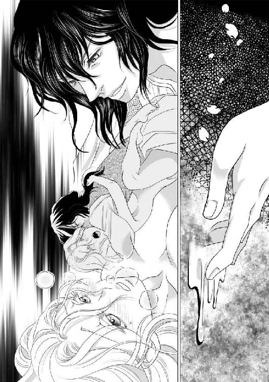
ディトリッシュは深く貫いた次の瞬間には、引き抜いてしまいそうなほど腰を引き、そしてまた深く押し込んだ。その度に、アリアーヌは叫び声を上げた。
──恥ずかしい。早く終わって──終わらせて。
そう思うと同時に、まだ終わらないでほしいとも思う。心臓が高鳴っている。息が苦しい。けれど──まだ、それを味わっていない。『それ』が何なのか、自分でもわからない。けれど、もう少しでわかる。
「ああ......！ あっ......！ もう......あ......だめ......！ あたし......！」
ディトリッシュはアリアーヌの膝を自分の肩に掛けさせ、一層激しく動いた。
「あ！」
それがやってきた。多分、これが──愛欲の神が齎す恩恵だ。
「ああっ......あ......ああ......！」
身体の中に煮え滾るような熱い波が荒れ狂っている。それは一瞬で終わるものではなかった。これ以上はないと思った瞬間に、また更に高みに押し上げられた。幾度となく深く貫かれ、また熱いものが満ちた。身体が勝手に跳ね上がり、そのまま何処かに飛んで行ってしまいそうな気がしたが、ディトリッシュが抑えつけ、一層激しく貫いた。
「あ！ ああ......！ あ......！」
ディトリッシュの髪から汗が飛び散る。
「......！」
声にならない呻き声とともに、ディトリッシュのものがアリアーヌの奥で慄え、汗よりも熱いものを迸らせた。
「ああ！」
アリアーヌは、ディトリッシュに縋りついた。
ディトリッシュはアリアーヌから離れると、身体を伸ばして横たわり、大きくためいきをついた。
アリアーヌはまだ息を切らし、動くこともできなかった。
俯せになって肘をついたディトリッシュはアリアーヌの顔を見下ろし、手の甲で汗ばんだ頬に触れた。
「──ああ......」
ディトリッシュはアリアーヌの髪を指に巻き、毛先でアリアーヌの胸の先端を撫でた。
「あっ......！」
「アリアーヌ」
ディトリッシュはそう呼び、またアリアーヌの胸の先端を口に含んだ。
「......ああ......」
ディトリッシュは、まだ足りないというのだろうか。
しかし、アリアーヌもこの上なく満足した後だというのに、激しいわけでもない、寧ろ緩慢なほどの舌先の動きに敏感に反応してしまう。
「......ん......」
その愛撫は、アリアーヌをこの上乱れさせるというよりも、身体の奥に残る熱を留めようとしているかのように優しかった。
「クロエには気を許すな」
陶然と身を任せていたアリアーヌは、その言葉に目を瞠った。
「......え......？」
クロエ？ 幾つかの言葉を思い出すとクロエは長くこの王宮に仕えていたようだから、ディトリッシュと面識があってもおかしくはないが、何故その名を今──こんなことをしながら──口にするのだろう？ そして、一体何に──
「王子......殿下、......ディトリッシュ一体、クロエの何に......」
「俺は気が触れている。何を口走ったとしても、おかしくはない」
ディトリッシュは、失言を誤魔化すかのように早口でそう言い、アリアーヌ自身の蜜と、ディトリッシュが瀉したものに濡れた場所に手を伸ばした。
「あ！」
「誰にも気を許すな。俺にも、王にも、女王にも、どの召使にもだ。でないと、死ぬぞ」
「ディトリッシュ──」
更に問いかけようとしたが、何かを考えることも、言葉にすることもできなくなった。
ディトリッシュがまた、アリアーヌの濡れた襞の間に入ってきた。
「ああ──！」
翌朝、アリアーヌが目覚めたときにはディトリッシュは隣にいなかった。
脱いだ衣装と宝石を身に着け直して探すと、ディトリッシュは昨夜と同じ格好で廊下側の居間の寝椅子に座っていた。
扉を叩く音がした。三度。
「ディトリッシュ......王子殿下......」
「毒で死んだ鼠を食べた猫も死ぬ。そうでしょう？ だから妾は、王太子殿下の寵姫殿とは食事をしないのですわ」
ディトリッシュはまた女言葉に戻って、意味のわからないことを言うようになってしまった。
また、三回続けて扉を叩く音がした。そして、また三度。
どうやら、それがこの部屋に入るための規則であるようで、すぐに扉が開き、食事が運ばれて来た。食事を運んで来た召使は、朝食前に王子の部屋にいるアリアーヌを見ていない振りをしたが、しかし食事は明らかに二人分だった。
「毒を喰らって死ぬのは鼠だけで良い。だから、寵姫殿は自分の部屋にお帰り遊ばしませ」
アリアーヌがテラスに出て、夜来た道を戻ろうとすると、クロエが迎えに来ていた。
『クロエに気を許すな』
ディトリッシュはそう言った。
何故、あんなことを──？
意味はないのか、それとも──？ クロエは何か──？
「王子殿下と一緒に朝食はお済ませになりまして？」
「いいえ──私とは一緒に食事はしないのだと──」
「念のために朝食を言いつけておいて良かった。お部屋に支度が出来てございます」
そしてクロエは殊のほか嬉しそうに言った。
「その後は、お楽しみの馬ですわ」
楽しみにしているのは、どう考えてもクロエだ。
おそらく、アリアーヌにとっての針仕事が、クロエにとっての乗馬なのだろう。時々──いや、度々、馬に乗って行けるお使いを頼むことにしよう。
クロエはとても気が利く性質のようで、見事な手配りをしてくれていた。食事の後、手際よく化粧と着替えの手伝いをしてくれた。王宮の前庭に行くと、二十頭余りの馬を集めさせていた。
「ええと......宝石もだけど、馬にも目が利かないの。一頭は気性がおとなしくて私を振り落さない馬を、もう一頭は、あなたが良いと思う馬を」
クロエは一頭一頭を矯めつ眇めつして、二頭を選び出した後、是非もう一頭、と言った。
「おとなしいのはこの黒い馬、速いのはこの赤い馬、そしてアリアーヌ様には、もう一頭、美しい馬がいると良いと存じますので、御髪と同じ色のこの白馬を」
クロエが夢みるような瞳で強くそう奨めるので、アリアーヌは頷いた。実際に自分が乗ることは多分あまりない。実質的にクロエの馬になる。故郷の村では、老いた馬でさえ農家にとっては宝物だった。若く毛並のいい駿馬を三頭──庶民には生涯望めない贅沢だ。
部屋に戻る途中で、クロエは、自分の遠い先祖は領主ではあったが、牛馬や鶏や家鴨といった畜産を営む農家に近かった。馬の生産、調教、治療までが一族の生業であったために戦の多い時代には栄えたが、今は──と、また自嘲した。
「アリアーヌ様のお陰で、思わぬ出世ができましたわ。感謝申し上げます。この上は──ディトリッシュ王子殿下の更なる御寵愛を得られるように、精一杯お手伝い申し上げます」
アリアーヌは息を詰めた。
クロエとは昨日が初対面だ。それなのに、もう、自分の人生が彼女に強く影響を及ぼしてしまうことになってしまった。
部屋に戻ると「お着替えを」と言われた。必要ない、と言うと、貴婦人は馬の臭いがついた服で昼食を取るものではない、と言われた。
クロエはともかく、アリアーヌは馬には触れもしなかったのだから臭うはずはないと思うが、宮廷では召使でさえ午前と午後では着替えをするし、晩餐会があるときには更に夜にも着替えるものだと言った。貴婦人ならば一日五回着替えてもおかしくはないらしい。
「そこまでは──したくない」
「ええ。そんなことをする暇があるなら縫物をなさりたいのでしょう？ 儀礼がない日は、簡素に、質素に、最小限にさせていただきます」
クロエは察しもいい。
ディトリッシュは、気を許すなと言ったが──アリアーヌには、この宮廷で、他に心を通わせられる人間は今のところ他にいない。
ディトリッシュとは──寝室では布一枚さえ隔てずに触れ合ったのは確かだが、それだけだ。
朝食を共にすることさえ拒む恋人──愛人が、いるだろうか？
寝室では、優しい──のだろう。多分。他の男を知らないから比べることはできないが、情熱的でもある。
思い出すだけで頬が熱くなった。
アリアーヌは、昼食の後、工房代わりにすると決めた部屋で、遙か東からわたって来たという薄絹を鋏で断ち切った。
「それで何を？」とクロエに問われ「まずは肩掛けを」と答えた。
遠浅の海の青の布地の端がほつれないように三つ折りにして縫っているのを見て、クロエが、それなら自分でもできると言ったが断わった。
貧乏騎士の娘というのが謙遜であるにしても、余程富貴な家に生まれ育たない限り、まっすぐに断った布の端をまっすぐに縫ったり、釦を付け替えたり、破れた服を継ぎ接ぎするくらいのことはできるのが普通だ。多分、本当にできるだろうが、職人を目指していたアリアーヌとは縫い目が違うはずだ。不揃いになってしまう。
裁縫を仕事としていたアリアーヌが片方を縫い終わったとき、クロエはもう一度「何かお手伝いを」と言った。
「ああ、いいの。私はこれが楽しいんだから」
アリアーヌは針箱から小さな刺繍枠を出して布を挟んだ。
そして、しまった、と思った。アリアーヌが黙々と針仕事をしている間、クロエは何もすることがないのだ。
「ああ、ええと......針箱に入る分しか持ってこられなかったわ。あの、もっと大きな刺繍枠が欲しいのだけど......」
「首飾りや馬に比べれば、遠慮なさるほどの値段でもございませんけれど、すぐに御所望ならば、裁縫室に行って参ります」
「裁縫室？ そんな部屋があるの？」
「宮廷にも裁縫師やお針子はおりますから」
「王宮にも工房があるの？」
「見たい、などとは仰らないでください」
アリアーヌは思わず不満の声を漏らしてしまった。
「御身分をお弁えくださいませ」
「それじゃ、もし許されたら図案や刺繍見本を借りてきてくださる？ 写しを取ったらすぐに返すからと伝えて」
どちらも、裁縫を生業とする者にとっては財産といえるものなので、断られるだろうと思いながら頼んだことだったが、なんとクロエはそれを借りてきてくれた。
額装までされた大きな刺繍見本は、ためいきが出るほど見事なものだった。
「裏を見てもいい？」
「構わないと思います。汚したり、糸をほどいたりせず、元通りにして返せば文句は言われますまい。何しろ、アリアーヌ様、あなたは──王太子妃が未だ存在しない今、この王宮の中で、女王陛下に次ぐ権力を持つ女性なのですから」
とんでもないことを言われてしまったような気がしたが、そのときのアリアーヌには、刺繍見本と図案の方が大切だった。まだ見たことのない刺し方をした部分がある。これは、多分、特別な針を使っているはずだ。
「これを返しに行くときには、この部分を刺すための道具を借りて来てね」
クロエは心底呆れ果てたような表情で「古風な美徳、古風な美徳」と呪文のように繰り返し唱えていた。
それから数日は平穏に過ぎた。平穏だからといってアリアーヌは退屈することはなかった。
店を一軒持てるほどの布地と、針と糸。針仕事が性に合わないらしいクロエには、街の手芸道具屋に刺繍枠の大きなものを買いに行って貰った。この前、アリアーヌのものになった馬のうち、どれでも好きなのに乗っていいからと言うと、とても喜んだ。
針仕事をしていれば、退屈する暇などあるはずがない。
けれど、陽が落ちると、クロエに「余り根を詰めると美貌を損ないます」と言われて針と糸を取り上げられ、針箱を仕舞われてしまう。お針子をしていた頃は、眠る前のひとときでさえ、寝台に座って縫物をしたものだったのに。
針を動かしている時間は、仕立屋に奉公していた頃と変わらない。
夕食を取ると、湯浴みの時間だと言われる。二人の召使に香料入りの石鹸──故郷でも、街の仕立屋でも、それは手が出ないほどの贅沢な品だ──で丁寧に洗われ、耳の後ろや手首、そして膝の内側にまで練香を塗られる。
化粧は、クロエがしてくれる。世話をされるということに慣れていないアリアーヌは教わったから自分でできると言ったが、クロエは歯に衣着せず、アリアーヌの化粧について「正直、田舎くさいです」と言った。
仕立屋の親方は伝統的であること、耐久性があることの次に美しさを置いたが、秘かに、アリアーヌは女性の衣装を仕立てる裁縫師を目指すのならば流行は無視してはいけない要素だと思っていた。
「それじゃ、最新流行って？」
「少し前までは女王陛下に倣うことが多かったものですが、今は、東国風が流行です。一番手っ取り早く学ぶには、貴婦人方の集まりに参加することです」
アリアーヌは、うーん、と呻いた。
「気が進まないわ」
「あら、何故？ 公式な謁見でこそありませんけれど、女王陛下、国王陛下にも面会をお許しいただいた、半ば『公妾』にも近いお立場ですのに。なんなら、此処に貴婦人方をお招きすることも──」
アリアーヌは身慄いした。
「嫌」
女王はアリアーヌが王宮に住むことを許してくれたが、それはディトリッシュ王子が、普通でない状態だからだ。本来、女王は宮廷に寵姫という存在は許したくないと言っていた。本心で歓迎されていないのに、目立つことはしたくない。
宮廷で流行の衣装は心底見たいが──未だ『寵姫』という立場には慣れていない。
「私、貴婦人としては、急拵えで完璧じゃないって言われたもの。人前に出て恥をかきたくない」
「完璧じゃない？ アリアーヌ様が？」
クロエは鏡越しにアリアーヌを見つめ、心底驚いたように言った。
「これだけ美しい方が、完璧じゃない？ 完璧に決まっているでしょう？ だから夜毎、王太子殿下がお呼びになる。他の誰も私室にお招きにならないディトリッシュ殿下が」
そう言って貰っても──あまり嬉しくない。
両親はアリアーヌに『まともな道』を歩んで欲しいと腐心した。今のこの生活を知ったら、きっと悲しむだろう。だから、あのとき、おとなしく嫁いでいれば、と嘆かれるかもしれない。
懸命にそれを考えないようにしても──罪悪感は増していく。
男と──ディトリッシュ王子と、情を交わす喜びを知ってしまったからかもしれない。苦痛であればまだ救われる。
「どうなさいまして？ まだ頬紅も差していないのに」
顔が赤くなったことをクロエにからかわれてしまった。
アリアーヌはその夜、少し大きめの手箱を携えてディトリッシュの部屋に歩いた。
クロエに寝化粧をして貰った顔でディトリッシュの寝室で朝まで過ごすが、目覚めたときには殆ど落ちてしまっている。せめて、口紅くらいは差してから別れの挨拶をしたい。
そして、もうひとつ──
アリアーヌはいつものように寝椅子に上半身を預けて憂鬱そうなディトリッシュに、贈り物を持って来た。
この数日で仕上げた肩掛け。ディトリッシュの瞳と同じ色の薄絹に、金糸で豪華な刺繍をし、端には頭文字のＤを華やかに装飾した。
「どうぞ、ディトリッシュ」
畳んだ肩掛けを差し出され、ディトリッシュは目を瞠った。
「それは──何？」
「肩掛けでございます。今お召しのものでは、そろそろ暑いと存じまして」
「──誰の差し金なの？」
ディトリッシュは言った。
「王子殿下を殺そうというの？ 毒は食べ物にだけ入っているわけではないでしょう。手紙の墨に混ぜたり、針に浸しても、その役目を果たすことができるはず」
受け取って貰えないかもしれない、とは思っていた。
だから、アリアーヌは寝室で裸になり、素肌にその肩掛けを纏って見せた。
「この布には、私しか触れておりません。端の始末も刺繍も、全て私ひとりで致しました。これでもお疑いになりますか？」
下着姿で寝台に横たわるディトリッシュはアリアーヌのその姿に息を呑んだ。
「僅かな間に寵姫らしくなったものだ」
アリアーヌとしては、疑われるのは不本意だから『毒見』をして見せたつもりだったが、ディトリッシュは、それを誘惑と受け取ったらしい。
「ディトリッシュ──違っ......」
「来い。それを巻いたまま」
アリアーヌは言われるまま、寝台に横たわった。
「......あ......」
ディトリッシュは、柔らかな絹の上からアリアーヌの胸を掴んだ。ディトリッシュの手の熱さはもう覚えたはずなのに、薄絹越しの愛撫はもどかしく、別の男に触れられているような錯覚を感じる。
しかし勿論、蝋燭の光に浮かぶのはディトリッシュの顔だ。
「ああ......！」
「お前の方が似合う」
「いいえ、王子殿下──ディトリッシュ──あなたに、似合うように私が縫ったのです......あなたの瞳の色に合わせて──」
この布を見た瞬間、これを纏うのはディトリッシュの他にはいないと思った。
アリアーヌは、布の端にくちづけて見せた。
「......ほら、大丈夫です。毒など──仕込んでいません......」
そう言うと、ディトリッシュは薄絹越しにアリアーヌの胸の先端を口に含んだ。
「ああ......！」
「本当だ。お前の肌の味しかしない」
アリアーヌは起き上がり、ディトリッシュの首に薄絹を掛けた。やはり似合う。見立て通りだ。
「柔らかい布だ」
ディトリッシュはそう言って起き上がり、その布を軽く捩った。
何をするつもりだろうと思っていると、アリアーヌは俯せにされ、それで腕を縛られた。
「あ！」
「これなら、お前の肌を傷めることはあるまい」
確かに痛くはなかった。
「──何故......こんなことを......」
最初に約束したように、寝室でディトリッシュに逆らったことはないし、逃げようとしたことも勿論ないのに。
「これを使ってほしかったのだろう？」
「違っ......違います......あ！」
最後まで言うことはできなかった。柔らかくしなやかな薄絹で両腕の自由を奪われたアリアーヌの腰を上げさせたディトリッシュは後ろから指を挿し込んできた。
「あ！」
肩や胸には布越しにしか触れていなかったが、そこは蜜で溢れていた。ディトリッシュはアリアーヌの背中にくちづけながら、繰り返し指を抜き差ししている。
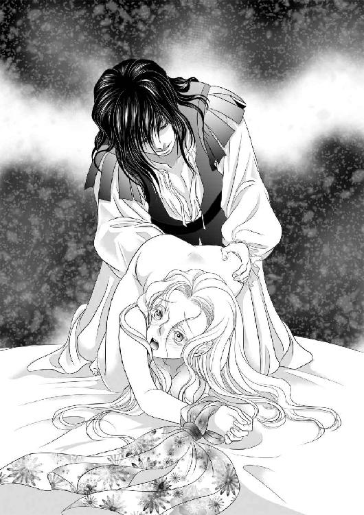
「ほどいて......ください......」
「毒など仕込んでいないと証明してくれるのではないのか？」
「......ああ......！ でも──こんな......」
アリアーヌは首を振った。
しかし、指を挿れられながら、もう片方の手を前に回され、小さな珠を嬲られると、意味のある言葉を発することはできなくなった。
「......あ......！ ああっ......」
小さな珠から指を離さないまま、ディトリッシュのものが入ってきた。
「こんな......格好......！」
後ろから挿れられるのは初めてだった。
「獣はこうする。知らなかったのか？」
田舎育ちだから、家畜の種付のときにそうするのは知っていたが、それゆえに恥ずかしかった。
「......あっ......！ 深......い......！」
「そら。此処も」
ディトリッシュの指が激しく動いた。
「ああ！」
アリアーヌは背中を反らせた。獣は、こんなにも長い時間交わらないし、その前に丁重に愛撫したりもしない。そして、ディトリッシュは、ときには交情の後にも身体中にくちづけて引きかけた波を呼び戻す。
「......ん......！」
「どうしてほしい？ 言ってみろ。まだ、それをほどいてほしいか？」
掠れた声でディトリッシュが言った。
「......あ、あ......もっと......して......もっと、深く......もっと突いて......！」
ああ、きっと、本物の貴婦人ならこんなことは言わないのだろう。けれど、獣と同じ遣り方で貫かれ、はしたないことを口走ってしまう。
「──あ！ ああ......！」
絶頂に達すると同時に、耳許でディトリッシュの呻き声が聞こえた。
いつの間にか、腕を縛っていた薄絹の肩掛けは解けていた。元々、きつく縛られているわけではなかった。ディトリッシュの動きに合わせて激しく揺れるうちに自然に緩んで抜けてしまったらしい。
アリアーヌは、それを寝室に持ち込んだ理由を思い出した。その肩掛けは広げると肩から膝まで覆うことができる。アリアーヌはそれを上掛けの代わりにして朝まで眠った。
翌朝、アリアーヌはディトリッシュより先に起きて手早く口紅を引いた。
寝台に横たわるディトリッシュは、鎧戸の隙間から差し込む光に斑に照らされている。アリアーヌは叱られるかもしれないと思いながらも誘惑に勝てず、鎧戸を開けた。この王子を陽の光の中で見るのは初めてだ。
整って吊り上がった眉に、濃い睫毛、真っ直ぐな鼻梁──滅多に外には出ないと思われるのに、太り過ぎも痩せ過ぎもせず、肩や背の筋肉も均整が取れている。非の打ちどころのない美貌というべきだろう。
──やはり、あんな格好をさせておいてはいけない。
アリアーヌはそう思った。
ディトリッシュは、アリアーヌの方が早く目覚め、身支度を済ませているのを見て、一瞬、しまった、と言いたげな表情をした。
下着は寝台の傍に用意されたもの、上着はいつもの革製のものを纏い、その上に寝台の帳を引き裂いただけの肩掛けを羽織ろうとしたので、アリアーヌは一瞬早くそれを自分の方に手繰り寄せた。
「離しなさい。無礼者。王子殿下のものです」
寝台にいるとき以外のディトリッシュは『ディトリッシュ王子殿下は』と自分のことを他人事のように話す。女装をしているときには、ディトリッシュ王子ではない誰かになっているつもりに見える。古風に自分を『妾』と称する女性ということは、身分の高い姫君なのだろう。
「これではなく、昨晩差し上げたものをお召しになってください。お姫様」
お姫様、と呼ばれたディトリッシュは、一瞬固まった。その隙を見逃さずにぼろぼろの布を引っ張った。鈍い音がして、布が破れた。
「ああ！」
叫んだのはディトリッシュではなく、アリアーヌの方だった。
「ああ！ 可哀想に！ こんなに傷んで弱くなっているとは思わなかったのよ！」
衣服として織られたものではないが、見事な刺繍だったのに。
「ごめんなさい！ ああ！ 百合模様が台無しに！」
ディトリッシュは、持ち主たる自分ではなく、襤褸布に向かって謝るアリアーヌを恐ろしいものでも見るような目で見た。その手には、雑巾にもなりそうにない大きさの切れ端が残っている。
「どうか、お許しを。お姫様。一片の端切れも無駄にしないと約束致しますから、私にお預けください！」
ディトリッシュは軽く口を開いてアリアーヌを凝視している。長身のアリアーヌを見下ろせる人は男性でも、そう多くない。
「──ディトリッシュ王子殿下は気にしないでしょう」
ディトリッシュは、また他人のことを話すような言い方で寛恕の意を伝えた。
「ああ！ ありがとうございます！」
アリアーヌは破れた布を丁寧に畳み、ディトリッシュが掴んでいる掌ほどの大きさの端切れも受け取って手箱に仕舞った。
そして、アリアーヌは自分が刺繍をした青い肩掛けをディトリッシュに掛けた。
「ああ、この布を見たときから、王子殿下──ディトリッシュ──お姫様の瞳と同じ色だと思っておりました。やっぱりよくお似合いです」
そう言った後、前夜、それをどんな風に使ったのかを思い出してしまった。
「あ──あの......！ 私──これで、失礼を！」
アリアーヌは辛うじて挨拶の御辞儀をして、ディトリッシュの部屋を辞した。
アリアーヌは、寝室で、裸でいるときには命じられた通りにディトリッシュと呼び、服を着ているときにはお姫様と呼ぶことにした。
青い肩掛けの次には、袖口と裾に唐草文様を刺繍した下着を、その次には初夏まで着られる上着を贈った。
一度、肩掛けを受け取って身に着けたディトリッシュは、もう毒が仕込まれているなどとは言わず、黙ってそれらを身に着けた。
そして、アリアーヌは約束通り、破ってしまった布を様々な小物に加工した。長さは十分だったが、少し引っ張り合っただけで破れた布を帯にはできなかったので、豪華な造花を作り、それで帽子飾りやブローチを作り、約束通り、一片も無駄にしないために端切れは編んで腕輪にした。
「如何？」と尋ねると、ディトリッシュは、なんとも表現し難い表情をした。
「お気に召しませんか？」
不安になってそう尋ねると「そうではない」と言った。
「ディトリッシュ王子殿下は、そんなものがあったことさえ忘れていました」
ディトリッシュは、アリアーヌが様々な衣装を持ってくる度に美しくなった。
いや、元々、美しい男性には違いない。ただ、似合わない女装で奇矯な印象を与えてしまっていただけだ。アリアーヌの手で仕立てられた衣装を身に着けると、かなり大柄な女性に見えるようになった。
「お化粧もして御覧になりませんか？ 勿論、毒など入っていません。御無礼とは存じましたけれど、御心配だろうと思いましたので、私が普段使っているものをお持ちしました」
「アリアーヌ......」
ディトリッシュは眉を寄せた。
「ディトリッシュ殿下の寵姫殿は、奇妙なことを好むのですね」
「やっぱり、私は自分が装うより、誰かを装わせて差し上げる方が性に合っているのです」
アリアーヌは、クロエが教えてくれた最新流行の化粧をディトリッシュに施した。
「とってもお綺麗です」
『お姫様』のディトリッシュはそう言われても微笑を浮かべることはなく、ためいきをついた。
「どうなさいました？ ディトリッシュ──お姫様？ この姿のときには、デルフィーヌ様とお呼びしましょうか？ それともディアーヌ様？」
「やめろ！」
耐え難い、とでもいう風にディトリッシュは強い口調で遮った。
「──」
「お前は──」
「はい？」
「......あのな......俺が男だということはわかっているだろう？ その身を以て！」
「はい。勿論」
「それなのに、何の疑問もないのか！」
疑問──？
アリアーヌは首を傾げた。
「ええと......何か、御所望のものがありましたら、衣装ならば大抵、どんなものでも──ああ、革の外套や手袋は無理ですが、帽子から靴下まで、材料さえあれば──」
「そうではない！」
『お姫様』は頭を抱えてしまった。
「何を──お望みなのでしょう？ お姫様」
「──お前こそ、何を望んでいる？」
「何を──とは？」
「楽師も道化師も雇わず、酒宴にも、貴婦人達の集まりにも出席せず、唯一着道楽だけは寵姫らしいと思ったら、自分で仕立てて人に着せる方が好きだと？ 侍女はひとりでいいと言い、部屋から殆ど出ることもなく、身近に仕える召使以外はお前の顔を見たことさえないという有様だ」
「......いけないのでしょうか？」
「──まあ、人前に出ないために、皆は余計にお前の噂をするのだが......」
この人こそ、人前には出ないのに、どうして宮廷の噂話について知っているのだろう？
「私の望みは──前にも申しましたように、裁縫師になることございます。思いがけず、王宮に上がることになり、修行を中断しなければならなくなったことを残念なことと思っておりましたが、此処では、その気になれば布地にも糸にも道具にも不自由せず、街の仕立屋ではできない修行ができるとわかって──今はとても幸せです」
「......つまり、お前は──義父上も母上も、宮廷の誰もが知りたいことに興味はないというわけか」
宮廷の誰もが知りたいこと？ それは何だろう？
王と女王は、ディトリッシュが女性を愛せるかどうかを知りたがった。それは確かめたはずだ。アリアーヌの言葉と、そして、ディトリッシュの寝台の敷布に残った純潔の証の血で。
「俺が正気か否か。もし狂っているのならば、どの程度か。それを皆、気にしている」
「ああ」
アリアーヌは、ディトリッシュの瞳を見た。この青い瞳を見る度に思う。この人が狂っているはずはない。女装をして女言葉を使っているときには尋常ならざることを言うが──暴力をふるわれたことはないし、寝室では優しい。言葉ではなく指や唇で優しくしてくれる。
「そう......世間では『普通ではない』と言うのでしょうけど、私は──自分より背の高い女性の衣装を誂えるのは初めてで、とても嬉しいです」
「ブールレックは何を考えてお前のような女を俺にあてがおうと思ったんだ......」
何か気に障ったらしい。
「あの──身分の低い私をお気に召さないのは当然と思いますが......」
「妾も、ディトリッシュ王太子殿下も、そうは言っていません」
無理をした作り声に戻り、そして、ディトリッシュはまた他人のことを話すように自分のことを語った。
「ディトリッシュ王子殿下が狂っていないとしたら──どう思うのです？」
アリアーヌは、目の前の大柄な女性を見つめながら暫く考えた。
「それは勿論、男性用の衣装を仕立てさせていただきます」
ディトリッシュは、寝椅子に顔を埋めてしまった。
アリアーヌは手箱に入れてきた自分の櫛で黒髪を梳いた。少し短いが、波打つ髪は量が多いので、貴婦人らしく纏めることが出来るだろう。
「綺麗な御髪。私、老婆のような白い髪なので、濃い髪色の人が羨ましくて」
「生まれつきの銀髪も、紫の瞳も、滅多にいないのに。黒髪など珍しくもない」
「この髪のせいで──目立つのが嫌いでした。今は──ディトリッシュ以外の男性に逢わなくてもいいことも、幸せです」
「変な娘だこと。──妾が言うことではないだろうけれど」
ディトリッシュは寝椅子に額を押しつけるようにして、アリアーヌに黙って髪を結わせた。
それから暫くして、アリアーヌは一通の招待状を受け取った。
いつもの如く、クロエに頼んで美しい文字でそつなく丁寧に断りの文章を書いて貰い、文末に署名だけしようと思ったが「このお誘いをお断りすることはできません」と言われた。
「女王陛下と、国王陛下からの晩餐会の御招待です」
「は？」
「ごく少ない人数を招いての私的なものですが、女王陛下の自筆の御署名の入った招待状です。伝染病でもない限り、お断りすることはできません」
「伝染病に罹ったことに......」
「できません！ ──アリアーヌ様って、おとなしそうなお顔をなさっているのに、時々、酷く──大胆なことを仰いますわね。そんな嘘をついて、ばれたらどうなさるおつもりですか」
気が進まない。
王と女王と一緒の食事など──想像もできない。ディトリッシュとでさえ、食卓を共にしたことはないのに。
「それに──私が聞いたところでは、この晩餐会には、アリアーヌ様の敵が参りますわ」
「敵？」
「──対面して、挨拶はしておいた方がよろしいかと。宮廷の誰もが面白がるでしょうね」
「は？」
「パトリス卿が、宮廷に招かれるのは──一年ぶりでしょうかしら」
「それ、どなた？」
「ディトリッシュ王子殿下の恋人と呼ばれた御方です」
ディトリッシュの恋人──と言われ、アリアーヌは背筋から首まで冷たいものが駆け上がってくるような感覚を味わった。
「......パトリス......卿......？」
しかし、その名を繰り返して違和感を覚えた。
女性にしては珍しい名だ。
「パトリス卿は、ラモー伯爵の次男」
「......え？ ......ちょっと......待って......」
「はい。男性でございます」
アリアーヌは驚愕のあまり声も出せなかった。
恋敵に逢うのですから、とびきり綺麗になさらないと、と言ってクロエは丁寧に髪を結い、念入りに化粧をしてくれた。
王と女王と親しい、極少数の王侯貴族しか招待されていないと聞いたが、それでも、田舎の結婚式の招待客より多い。
侍女として晩餐会に付随ってくれたクロエは「あれがパトリス卿ですわ」と教えてくれた。
恋敵。
そういうことに──なるのだろうか？
パトリス卿は、燃え上がるような金髪に緑の瞳の、眉目秀麗な貴公子だった。
「──どんな方？」
気にしないでおこうと思ったのに、つい訊いてしまった。
「ディトリッシュ殿下も、パトリス卿も、勇猛果敢で剣術や馬上の槍試合をお好みでしたわ。双方とも良い馬をお持ちで──特にディトリッシュ殿下の青毛馬は本当に夜の闇のような色で──」
「馬の話は、今はいいから」
クロエは「失礼」と口許に手を当てた。
「パトリス卿は、あの見目で、書物がお好きで、外国語が堪能でいらしたために物静かというか......柔弱に見られがちでしたけれど、先程申し上げた通り、この時代にあって剣も槍も乗馬も疎かにはしないお二人でしたわ──ディトリッシュ殿下は女王陛下の四番目の王子、パトリス卿は伯爵家の次男ということで、お二人とも高貴ながら気楽な御身分で、いつも一緒の仲の良さは微笑ましいとさえ思われていたのですが──」
ディトリッシュの三人の兄が次々に亡くなり、ディトリッシュが女装をして王宮の中を儀礼用の大広間から厨房、ときには召使の部屋まで徘徊するようになってから、口さがない者達が、ディトリッシュが尋常でなくなったのはパトリスのせいではないか、と言い出したらしい。
パトリスを愛するあまり──否、パトリスに愛されるために女になったのではないか、と疑われたのだという。
ディトリッシュは男性だ。
そして女王陛下は我が子を初心な童貞だと思っていたようだが、決してそんなことはなかった。過去に恋人がいてもおかしくはないと思う。
アリアーヌは田舎で生まれたが、仕立屋に奉公をし、それなりの都会で揉まれ、男性が男性を愛することがない訳でもないということくらいは知っていた。
しかし、ディトリッシュの恋人が男性？
──あり得ないことのように思える。自分が否定したいから、というのではなく、「なんとなく」ではあるが、確信めいたものがある。
「金と銀だな」
知らない声がそう言った。パトリス卿の金髪とアリアーヌの銀髪のことを言ったらしい。
アリアーヌは、初対面でまだ挨拶も交わしていないパトリス卿と共に、宮廷に集った貴族達の好奇の視線を浴びている。居心地が悪くて堪らない。
しかも、まだ、晩餐は始まってもいない。食堂の次の間である応接室で準備ができるまで談笑するのが王宮の慣例であるらしい。
『寵姫』という立場のアリアーヌを不躾なほど凝視しておきながら、視線が合うと露骨に扇で顔を隠す貴婦人も多い。
「大丈夫でございます。お傍におります」
クロエがそう囁いてくれたが、憂鬱で堪らなかった。
ディトリッシュは来ないのだろうか。
「美しい方、御機嫌は如何ですか？」
いつの間に、近くに来ていたのか、パトリス卿が言った。
「初めまして──御機嫌麗しく」
アリアーヌは、そう挨拶した。
この場に来る前に、部屋の大きな鏡の前で、何度も挨拶の言葉と御辞儀を練習した。
「長く宮廷に来ていなかったものですから──こんな美しい方のお名前を存じ上げない。私はラモー家の次男、パトリスと申します」
「アリアーヌと申します。南の──ブールレック子爵の姪に当たります」
「ああ。お名前だけは伺っておりました。南からいらっしゃったとは思えない髪と肌の色だ」
周囲は興味深そうにアリアーヌとパトリスを注視している。
なんと答えていいかわからなかった。
元々、アリアーヌは見た目にそぐわず愛嬌はない方だったが、長じてからは更に愛想よく振舞うことはなくなった。工房に籠もるお針子はそれで良かった。
「ディトリッシュ王太子殿下の『お友達』でいらっしゃいます」
クロエが言った。
「ならば、私とも『お友達』だ」
パトリスは微笑した。
とても──感じのいい人だ。衣装の趣味も良い。金髪がよく映える深い青色の上着に、おそらく今日おろしたばかりと思われる真っ白な下着、大粒の紅玉の首飾りを差し色として使っている。
踵の高い靴を履いたアリアーヌと同じくらいだから、十分に長身といえるがディトリッシュよりは少し背が低い。
「畏れ多いことながら、ディトリッシュ殿下からは『友』と呼んでいただいております」
「──どうぞ、よろしくお願い致します」
アリアーヌは困惑しながらも相応しい言葉を探し、平凡な挨拶に行き着いた。
「こちらこそ」
周囲は『対決』を期待したらしいが、パトリスとの初対面は無難な挨拶だけで終わった。
敵意は感じなかった。
しかし、男性達が、アリアーヌを見た瞬間に見せる反応も感じられなかった。
──あの奇抜な女装をしていたディトリッシュでさえ、アリアーヌを女性として見たというのに。
「王太子殿下のお成りでございます！」
典礼官の声が高く響き、貴族達の目が応接室の入り口に向いた。
しかし、そこにいたのは一際──踵の高い靴を履いたアリアーヌよりも──長身の黒髪の貴婦人だった。青い瞳に合わせた肩掛けに、白い上着。裾からは唐草模様の金糸の縁取りの下着が覗いている。
「ディトリッシュ──」
アリアーヌとパトリスは同時にその名を呟いた。アリアーヌが発したのは、歓喜の声だったが、パトリスは驚愕のそれに近いように思われた。
片手に扇を持ったディトリッシュはアリアーヌとパトリスの前にやってきた。
「御機嫌よう」
パトリスはまだ唖然としているようだった。
「お姫様、とってもお綺麗。よくお似合いです」
アリアーヌは思わずそう言ってしまった。周囲の王侯貴族達は、呻き声に近いような声を漏らした。同意していいものか悩んで言葉を呑み込んだ結果であるようだった。
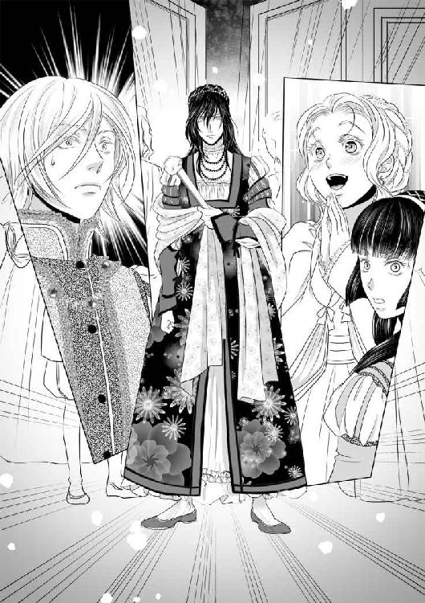
ディトリッシュは美しい人だと思っていた。奇矯な姿でいてさえそうだった。アリアーヌが誂えた衣装を着て、華やかな場にいると、更に美しい。
「お久しぶりです。──殿下」
これまで微笑を絶やさなかったパトリスも、アリアーヌがディトリッシュを『お姫様』と呼んだ瞬間、無表情になった。しかし、素早く立ち直ってまた柔らかな笑みを浮かべ、そう挨拶した。
「盛夏には、南の染物を使った下着をお誂り致します。とても色鮮やかで涼しい生地です」
「そう」
「ああ、とってもお綺麗」
「ありがとう」
女王と王に次ぐ身分の王太子がやって来たからには、王侯貴族達は争って挨拶に来るべきだったが、それができたのはパトリスひとりだった。
女装をし、寵姫に『お姫様』と呼ばれ、次の季節の衣装の話をする王子に、誰もがどう呼びかけ、何を話しかけていいのかわからないらしかった。
招待客は全員揃ったらしい。
典礼官は招待客に「大広間で観劇の準備ができております」と告げた。
どうやら、芝居を観るらしい。
「どうしよう。初めて」
アリアーヌはクロエにそう耳打ちした。
故郷には旅芸人の一座など来たことはない。街でも、そんなものを観に行くくらいならば端切れで針山を作っていたかったので、いつもそうしていた。
「御心配なく。ただ、座っていらっしゃればよろしいのです。つまらなくても寝ないようにだけお気をつけください」
ディトリッシュはアリアーヌがクロエと話しているのを見て言った。
「王太子殿下の御寵愛を受ける御方。こちらにお座りなさい」
王侯貴族達のざわめきが止まった。
ディトリッシュの右にはパトリス、左にはアリアーヌが座った。
女王と王が遅れてやって来た。
女王は、広間に設えられた舞台の二列目に女装のディトリッシュが、かつて恋人と呼ばれた男と現在の寵姫に挟まれているのを見て扇で顔を隠し、王は困惑しているようだった。
「王子よ。その格好は」
「諸侯と語らうのに恥ずかしくない盛装でとの御命令でございましたので、そのようにして参りました」
ディトリッシュは紫水晶を連ねた首飾りを指先で弄びながらそう答えた。その宝石は、アリアーヌの瞳と同じ色だった。
王侯貴族達の前で、それ以上咎めることも出来ず、女王と王は最前列の中央の椅子に座った。二列目に座るアリアーヌ、ディトリッシュ、パトリスに視線を向けることはできないが、注意は舞台ではなく、背後に向いていることは明らかだった。
舞台では東国の英雄譚が演じられていた。
クロエが心配した通り、眠くなってきた。退屈すると指先が疼いて、何かを縫いたくなってしまう。
王宮の刺繍見本で見たあの文様──あれを、手袋に刺したらきっと美しいだろう。そんなことを思いながらぼんやりと舞台で役者達が駆け回るのを眺めていると、突然、女優が言った。
「おお。不幸な娘がやって来た。この牢獄から逃げることも叶わずに」
アリアーヌは、思わず「え？」と声をあげそうになった。
その台詞が女優によって語られるまで、全く芝居の筋が頭に入ってこなかった。ちゃんと聴いておくべきだった。これは、どんな物語なのだろう？
「ああ！ 嫌な夜！ 蜜蝋の匂いが鼻につく！ いいえ、これは、血の──毒の匂い！ 古来より、毒とは女の武器という！ ならば、妾はこの白くか細い指で、鎧を纏う戦士を殺すこともできるはず！」
アリアーヌは隣に座るディトリッシュを見た。
ディトリッシュは咎めるように目を細めた。「何も言うな」そう言っているように見える。
舞台の上ではひとりの役者が胸を押さえて倒れ、長い長い台詞を語って息絶えた──らしい。そして、先刻「毒は女の武器」と語った女優が盃を干し、倒れた主人公に重なるようにして倒れた。
「毒で死んだ鼠を食べた猫も死ぬ」
筋はよくわからないが、悲劇らしかった。
正直、その物語はどうでもいい。
アリアーヌは、黙したままディトリッシュの横顔を見た。
この人は──気が触れているわけではない。そう確信した。
気が狂ったふりをしている。しかも、それもあまり上手くないのだろう。役者のように上手く演じることができないから、芝居の台詞を諳んじて、そう見えるように努力している。
何故そんなことをするのだろう？ そして、他にも芝居は幾らもあるだろうに、何故、毒で殺される英雄の物語なのだろう？
「考えるな」
ディトリッシュはアリアーヌの耳許で囁いた。
「──ディトリッシュ」
「『お姫様』でよい。今は。食事が済んで、部屋に戻るまで、何も考えるな。俺の傍を離れるな」
先に立ち上がったディトリッシュはアリアーヌに手を差し出した。まるで、貴公子が貴婦人にそうするように。アリアーヌは作法通りその手に指を置いて立ち上がり、女装のディトリッシュと腕を組んで食堂まで歩いた。
考えるなと言われたが、考えずにはいられなかった。
これから晩餐会だというのに何故あんな趣味の悪い演目をさせたのか、アリアーヌには高貴な人の考えることがわからない。
英雄が毒で殺され、殺した女も毒を呷って死ぬ芝居を観た直後では、この豪華な晩餐の味も台無しになると思わないのだろうか。
ずっと傍にいると言ったクロエがいない。侍女がこの晩餐の席に着くことはできないから、他の王侯貴族の従者や侍女と一緒に別室にいるのだろう。
先刻の芝居のせいだけでなく、好奇の視線を浴びながら食欲が出るものではなかった。視線を浴びているのはアリアーヌひとりではなく、ディトリッシュ、そしてパトリスも同じだが、ふたりは平然と食事をしている。
「アリアーヌ」
上座から女王が呼んだ。
「はい、女王陛下」
「宮廷には慣れましたか？」
親切な言葉だが、心が籠もっているとは思えない声だった。
「はい。お陰様をもちまして......」
「それは良かったこと」
どうやら、それは『儀礼』であるようだった。
女王が人前でアリアーヌに話しかけた。短い言葉で、アリアーヌは王宮に住んでいて、女王に歓迎される存在なのだということが示されると、近くに座る貴婦人はこれまでの冷ややかな態度を改め、アリアーヌに自己紹介をした。
「こういう場所なのだ」
ディトリッシュが隣で囁いた。どう答えたものかわからなかった。
暫くすると陽気な道化師がやって来て食事をする王侯貴族の前で笑い話をし、皆は楽しげに笑った。次には楽師がやって来て竪琴の弾き語りをした。
「退屈か？」
ディトリッシュが尋ねた。アリアーヌは答えられずにディトリッシュの横顔を見た。
「俺もだ」
ディトリッシュはそう言った。
王と女王が退出すると、貴族達も一人二人と帰りはじめたが、まだ居残って飲んでいる者達は酔って道化師と戯れたり、楽師に竪琴を弾かせて自分が歌うと言い出したりしはじめた。
どうやら残っても構わないが、退室しても無礼にはならないらしい。アリアーヌは立ち上がった。
「もうお帰りになるのか、美しい方」
パトリスが言った。
「はい」
「その方がいい。この後は酔っ払いの乱痴気騒ぎになる」
アリアーヌは、ディトリッシュとパトリスに挨拶をして食堂を出た。
クロエは何処だろう？
傍にいると言ったのだから、ひとりでアリアーヌの部屋に戻っていることはないだろう。別室で控えているはずだ。そこで食事を取っているのだろうか？ そうでなければ空腹のはずだ。
「あの......少しよろしいでしょうか？ お忙しいでしょうけれど」
アリアーヌは食器を厨房に下げにいく召使に声をかけた。
「は──はい？」
「侍女とはぐれてしまったのですが、何処にいるか御存知でしょうか？」
召使は殆ど怯えているように見えたが、部屋を教えてくれた。
そして、高貴な方にこんなに丁寧に話しかけられたのは初めてです、と言った。どうやら「高貴な御方」というのは、下働きの召使には直接声をかけることさえしないのが普通であるらしい。失敗というほどの失敗ではないらしいが「高貴な人」として不自然なことをしてしまったようだ。
クロエがいなければ、王宮という場所の「普通」がわからない。そして自室から出るのは夜、ディトリッシュの部屋に行くときだけなので、ひとりでは帰ることさえ覚束ない。
アリアーヌは侍女達が集められている部屋の扉を叩いて細く開けて覗いて見た。それもまた、ありえない振舞いだったようで、中で食事をしながら談笑していた侍女達が驚愕していた。
そこにもクロエはいなかった。
宮廷に住んでいながら「自分の部屋に戻る道がわからないから教えてほしい」と、また忙しい召使を呼び止めて頼むのは恥ずかしい。少しはクロエのいう「社交」をしておくべきだったかもしれない。
アリアーヌはクロエを探すうちに、庭に面した回廊に出てしまった。
戻らなければ、先刻、芝居を観た広間や食堂の場所さえわからなくなってしまうかもしれない。クロエが迎えに来てくれるまで、食堂で座っているべきだったかもしれない。
来た道を戻ろうとしたとき、細く開いた扉に気づいた。
そこにクロエがいると思ったわけでもなく、好奇心を抱いたわけでもなく──本当に、誘うように開いているように見えたからそっと覗いてみただけだった。
部屋の中からは忍びやかな声が聞こえた。
「......もう、戻らないと......ああ......」
切ない息遣いを聞くだけで、何をしているのか、もうわかるようになっていた。アリアーヌは急いでその場を離れようとした。
「......いけません......陛下、もう......」
陛下？
この王宮に、いや、この国に、陛下と呼ばれる御方はふたりしかいない。女王と王。自分は、女王と王の寝室に迷い込んでしまったのだろうか？ と一瞬思った。
しかし、それはあり得ない。庭を繋ぐ小路を使って自室からディトリッシュの寝室に行くときには誰にも遭わないが、王子であるディトリッシュの部屋でさえ、廊下側には衛兵が立っている。幾ら平和な時代であるとはいえ、王と女王の居室の前に夜番の兵士のひとりもいないはずがない。それにこの扉には装飾が少なすぎる。王族の私室ではない。それに、人のいる部屋には煌々と明かりがついているはずなのに中は真の闇だ。そして、女王が王とふたりきりのときに「陛下」と呼ぶものだろうか？
「......もう、本当に......行かなければ......アリアーヌ様を......」
アリアーヌは息を呑んだ。
これは、クロエの声だ。
「放っておけ。おとなしいだけが取り柄のあんな小娘に罰されることはあるまい。私もそんなことはさせぬ」
男性の声。そう何度も王の声を聞いたことはないので、王だと判断することはできないが──この国で陛下と呼ばれる男性は、たったひとりだ。
「女王陛下をあまり長くおひとりにするものではありませんわ」
「ディトリッシュのあの姿を見て動転したらしい。早々に引き揚げて具合が悪くなったと言って寝てしまった。無理もない。与えた女が気に入っていると聞いて安堵していたのに、前より酷く──いや、酷くなったと言うべきではないか。美しくなったのだから」
クロエの忍び笑いが聞こえた。
「──しかし......どういう女なのだ？ あのアリアーヌという小娘は？」
「人に逢って挨拶するのが嫌だからお庭を散歩もしないというほど社交が苦手、ただ黙って日がな一日、裁縫と刺繍に明け暮れることだけが喜びの、人呼んで『沈黙の白薔薇』──馬鹿ではないけれど、無害な人ですわ──ああ......もう......いけませんと、申し上げておりますのに」
クロエは、決してアリアーヌのことを悪く言っているわけではない。しかし、口調には嘲笑が含まれていた。
アリアーヌは立ち尽くした。
ディトリッシュは「クロエに気をつけろ」と言った。
ブールレック子爵は、おそらく女王ではなく王の指図でディトリッシュの寵姫となるべき女を探し、自分を見出した。その自分につけられた侍女は、王の──寵姫......いや、公にされた存在ではないから、秘密の愛人だった。
「覗き見、立ち聞きとは、はしたない」
背後から声を掛けられ、アリアーヌは悲鳴を上げそうになったが、掌で口を塞がれた。
耳許で「しーっ」という声が聞こえた。
ディトリッシュではない。振り返るとパトリスがいた。
「此処で踏み込んで、人を呼んであのふたりの関係を暴いてもいいが──適当に取り繕われてしまうだろうな。私は女王陛下の覚えがめでたくないし、あなたも『仕方なく』存在を許されているだけだし」
パトリスは、まだアリアーヌの口を塞いでいる。
「静かにしていただけますか？」
そう訊かれて頷くと、パトリスはやっと手を離した。
「──パトリス卿......」
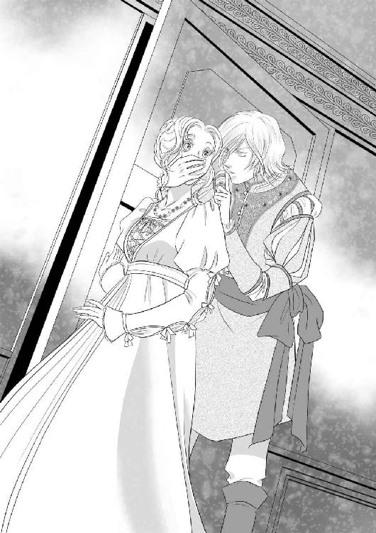
「国王は息子の愛人の召使と食器収納室でお戯れ。女王陛下の下僕であるかのように振る舞っているが、実態はこんなもの。宮廷というのは、こういうところです」
アリアーヌはなんとも答え難かった。
「侍女殿の代わりに、お送りしましょう」
そう言って、パトリスは礼儀正しく距離を取ってアリアーヌをディトリッシュの部屋まで案内した。
アリアーヌは、いつも庭に張り出したテラスからディトリッシュの部屋に入る。建物の内側の廊下を使うのは最初の夜以来だ。
パトリスは扉を叩いた。
「誰？」
作り声の問いかけに、パトリスは「私です」と答えた。扉はすぐに開いた。
「中へ」
ディトリッシュはパトリスとアリアーヌを招き入れた。まだ貴婦人の姿だ。
「まだその格好をしているのですか」
「当分、こうしていろと言ったのはお前だぞ、参謀」
パトリスは笑った。
「誰も女装などしろとは言っていません。『普通でない』ように振る舞ってくださいと申し上げただけで──女装は、まあ、効果的だった。今夜の諸侯は、様々な意味で、あなたが尋常でないと思ったでしょう。素晴らしかった。女の格好をして、寵姫に『お姫様』と呼ばれ、男の恋人もやって来た」
パトリスはおかしそうに笑った。
「食器収納室で面白いものを見ました。なんと、国王陛下はクロエと密会。諸侯を呼び集めれば今夜の最後の余興として最高だったでしょう」
「あの男の不実を露にしても母上が悲しむだけだ」
「ええ。騒ぎたてはしませんでした。女王陛下は、夫を愛していらっしゃる。単なる浮気だけでは、王冠を得たものを失脚はさせられない。実に忌々しい」
パトリスと語るディトリッシュは『普通』だ。女装はしているが。
ディトリッシュの『お友達』──。一年ぶりに逢ったとするなら邪魔はしない方がいいかもしれない。
「庭の門の鍵をお貸しください。お話しがおありなら、私は自分の部屋に戻ります」
「帰ることはない」
「でも......」
アリアーヌがパトリスに視線を向けると、ディトリッシュは不愉快そうな表情になり、パトリスは噴き出しかけて口を押さえた。
「クロエから何を聞いたか知らんが、俺は、男色趣味はない。パトリスもだ」
「そうなのですか？」
アリアーヌは『お友達』。なら、パトリスも『お友達』と称するならば、そういうことなのかもしれないと思った。
「違うの──ですか？」
「その件については後で話す。今は肝心なことを先に」
ディトリッシュがそう言うと、パトリスの顔から感じの良い微笑が消えた。ディトリッシュの言葉を信じるならば、ふたりとも男色家ではないのかもしれない。しかし、パトリスは、アリアーヌに対して丁重で礼儀正しい態度だが、心の底では邪魔だと思っているような気がした。
「殿下」
「何も打ち明けずに済ませられると思うか？」
「何も知らないでいる方が望ましいでしょう。アリアーヌ様のためにも」
「此方の味方にしておかなければ、クロエに利用されるぞ」
「その問題がありましたね。──あの黒い女狐」
「そんな風に仰らないでください」
アリアーヌは、パトリスの言い様を聞いてそう言わずにいられなかった。
「料理人も召使も忙しいのをいいことに、鍋や食器を貯蔵する部屋で何をしていたか、御覧に......いや、お聞きになったでしょう？」
「国王陛下に──その、求め......命じられたら、断れるものではないでしょう。クロエは......私に良くしてくれます」
「純粋な御方だ。だが、あの女は──危険だ。少なくとも、王の手先だ」
ディトリッシュは、煌びやかな髪飾りを着けた女装姿のまま、ふたりに「まず座れ」と命じた。
「まず言っておく。アリアーヌには、野心は勿論、政治的な視点さえない」
先刻、クロエはアリアーヌのことを「馬鹿ではないけれど、無害」と評した。多分、ディトリッシュも同じことを言っている。
「針と糸を使って布を縫うこと以外は、さして重要でないらしい」
何故かディトリッシュは不満そうだった。
「そういうわけでは──」
「ああ、そうだったな、故郷の親と妹と、あとは仕立屋の店主夫妻か」
「なるほど。その人達の命や生活を奪うと脅されたわけですか」
パトリスは察しが良かった。
「数奇なことだ」
言われてみれば、確かに奇妙な成り行きでアリアーヌは王宮に住むことになった。
「アリアーヌにも言っておく。俺は、好きでこんな格好はしていない」
薄々、そうではないかと思わないこともなかった。新しく仕立てた衣装や小物を初めて身に着けるときには、女性ならば喜びに満ち溢れた顔をするものだ。ディトリッシュは、アリアーヌが精魂込めて仕立てた女物の衣装を喜んだことがない。
「そうなのですか。では、この前言ったように、男性用の衣装を仕立て──」
「だから！ そこだ」
ディトリッシュはアリアーヌの言葉を遮った。
「どうして、そこで何故、好きでもないのに女装をしているのか？ と訊かない？」
パトリスは堪え切れなくなって笑っている。
「──多分、何か深い御事情があるのだろうと思ったのでお訊きしない方が良いかと......」
ディトリッシュは天井を仰いだ。
「こういう女なんだ」
パトリスは腹を抱えてまだ笑っている。言葉遣いこそ丁寧だが、王太子の前でこれほど寛いだ態度でいるのは、本当に心を許した友人だからだろう。
「では、私から弁明しておきましょうか。殿下の三人の兄君が次々に亡くなったのは御存知でしょう？」
「はい。それは。遠い南でも、喪服の注文がたくさん参りました」
「一番上の兄君が亡くなったときには、丁度、この王都で疫病が流行った時期で──それゆえ、若く健康な方が、たった一晩の患いで亡くなっても誰も不審を抱かなかったのです。二番目の兄君はその二年後に、落馬の事故で......ただ、一緒に狩に出た侍従達がいうには、突然馬が暴れたと。そして、馬も泡を吹いてその場で倒れて死んだと」
この時点で、不穏な噂が囁かれはじめた。そもそも、女王の最初の夫であった王配殿下──ディトリッシュの実の父の死も本当に病死であったのか？ と。
「証拠は何もない。どの死も。しかし、三番目の兄君も亡くなった。これほど立て続けに、次々と不幸が襲ってくるものか？ 次は誰だ？」
パトリスはディトリッシュを見た。
「毒を盛られたと──？」
「王位継承者が次々と順番に亡くなれば、そう思うのが自然でしょう」
「誰が？ なんのために？」
ディトリッシュは「漸くまっとうな疑問を口にした」と言った。
「勿論、王が義理の息子達を」
パトリスは口に出すのも憚ることを平然と口にした。
「俺は元々、王位からは遠かった。兄の政務を補佐し、万が一、戦となったら将軍として前線に赴くつもりでいた。平和な時代が続くなら、公爵の称号と適当な領地を貰って死ぬまで狩猟と酒で暇潰しをするしかないだろうと──そういうわけにはいかなくなった。兄達が殺されたというなら黙ってはおけないし、あの男が王位に並んで立つ母上を害する可能性もある」
「まさか、そんな！」
本来ならば『女王の夫』は王配殿下であり、陛下と呼ばれることはない。国王が王冠を戴くことになったのは特例で、それは女王の愛情の証だと民は考えている。
「女王陛下が亡くなれば、若い王妃を迎え、自分の血を引く実の子を次の王にすることもできます」
五番目の子であるディトリッシュが二十歳過ぎということは、女王は恐らく四十代、もしかしたら五十歳に近いかもしれない。多分、子供は望めないだろう。
「いずれにしろ──これだけ不幸が続いた。私は、ディトリッシュ殿下に気の触れたふりをすることをお奨めしたのです。王位を継ぐに不適格な尋常でない振る舞いを、と。政敵になり得ない存在ならば、ひとときの安全を確保できるのではないかと。ところが、殿下は──致命的なまでに、そういう芝居が下手で」
それで、ディトリッシュは、ありあわせのもので女装を始めたのか。確かに奇矯だったが、それは似合っていなかったからだ。アリアーヌが仕立てた女物の衣装は、とてもよく似合っている。
「袖口はもう少しゆったりしている方が良かったかもしれません。後で直します」
「お前、俺の話を聞いていたか？」
「ああ、はい」
「苦肉の策だったが、それが思わぬ効果を呼んだ。私が殿下の愛人だという噂が広まってしまったのは御存知の通りです」
「真に受けた母上の不興を被って、パトリスは宮廷から遠ざけられた」
「手紙を書くことも禁じられたので、王宮の料理人を買収して、料理の中に紙片を隠して遣り取りしました」
アリアーヌは、ディトリッシュが自分と一緒に食事をしようとしなかった理由を知った。
「私は見聞を広めるための遊学と称して、隣国・クレール王国で暮らしました。殿下の姉君が王太子妃でいらっしゃるので宮廷でも歓迎されました」
パトリスは、そこで何人かの貴婦人と恋をし、二度ほど決闘することになったと言った。男色家であるという噂を否定するために、わざとそんな騒ぎを起こしたらしい。
「身分のある方は大変ですのね」
「あなたも、今はそうだということをお忘れなく。アリアーヌ様」
そう言われても、実感はない。
「ともかく、ディトリッシュ殿下があなたという寵姫をもったことで、私と男色の関係にあるという噂は否定された。女王陛下は安堵召され、私は帰国し、この国の王宮の晩餐会に出席することを許された──ということです」
「でも、ディトリッシュは、お姫様の衣装で出席なさった」
パトリスはおかしそうに笑った。
「お気の毒に、女王陛下は相当混乱なさっただろうな。だが、ディトリッシュ殿下には──もう暫く王位を継ぐには不適格な振舞いをしていただかなければならない」
そうでないと──殺されてしまう、というのだろうか。義父である国王に。
「どうにかして、王を除かねばなりません。一番良いのは別件で失脚していただいて、何処か静かな田舎で隠棲、という筋書きに」
「承服できん」
「できることなら派手なクーデターは避けたいものです。内戦に発展すれば、幾ら今が平和な時代でも、近隣諸国がそれに干渉してくるのは目に見えている。王には静かに権力の座から降りていただいた方がいい」
「性に合わん」
「よほど鬱憤が溜まっているようだ」
「一年も幽閉同然の生活をしていたんだ」
パトリスは笑った。
「私はクレール王国で宮廷生活を楽しみました」
ディトリッシュは忌々しげに顔を顰めた。
「姉上はお元気だったか？」
「嫁いで七年。三人の王子の母でいらっしゃる。女王陛下に似て健康で多産でいらっしゃるのでしょう。王家には得難い妃だ。お幸せな御様子ではありましたが──三人の弟君の死に心を痛め、ディトリッシュ殿下を心配なさっておいででした」
ディトリッシュはためいきをついた。
「姉上のためにも──やはりクーデターは起こすべきではないのだろうな。母上は、またお泣きになるだろうし」
ディトリッシュは泣く女が嫌いだと言った。それは、夫や子供を亡くして嘆く母を見たためかもしれない。
「毒殺も一手ですが──自分がその手を使ったために、あの男は用心深い。それに、いつも女王陛下が一緒です。万が一にも、あの男に盛った毒が女王陛下の口に入ることがあっては──」
「考えたくもない」
「暫くは様子を窺いながら、策を練ることとしましょう。私も帰ってきたのですから、決してお急ぎにならないでください」
パトリスは、そう言った後「さて」と言って席を立った。
「夜も更けた。帰ると致します。殿下、そして、お美しいアリアーヌ様。近いうちにまた」
パトリスが去った後、ディトリッシュは髪飾りを外した。アリアーヌはディトリッシュの髪を解いた後、櫛を通した。
「気取り屋の鼻持ちならない奴に見えるだろう？ だが、あれで剣も槍も馬もなかなかだ」
「衣装や小物の趣味の良い方だと思います」
「何処までも、基準はそこか」
ディトリッシュは呆れたらしい。
「庶民のみならず、王侯貴族の皆様にも、衣装やレースは財産でしょう？」
「まあな」
「お姫様──ディトリッシュ」
「ん？」
「──今までお辛かったでしょう」
したくもない女装をして、殆ど幽閉に近い状態で、親友とも引き離され、誰とも語ることも心を通わせることもなく、一年も気が触れたふりをしていた。
アリアーヌはディトリッシュの頬に触れた。ディトリッシュはその手を邪険に払おうとはせず、掌にくちづけた。
「別に。死ぬことを思えば大したことではないし──お前が来たし」
「私？」
「これは男にはとても──抗い難いほどに魅惑的なことなのだ。殊に、お前のように美しい女ならば尚更」
ディトリッシュは女の衣装を着たまま、アリアーヌを引き寄せてくちづけながら胸を探った。
「......ああ......」
とても、いけないことをしている気がする。最初の頃に感じた『まともな道』を踏み外した罪悪感とは、また別種のいけないことだ。
此処は寝室ではない。その上、ディトリッシュはまだ『お姫様』だ。
息を継ぐ合間にそれを伝えようとしたが、出来なかった。ディトリッシュはアリアーヌの衣装の裾をたくし上げ、膝の間に指を触れさせた。
「......あっ......！ ディトリッシュ......」
やめて欲しくない。ディトリッシュとくちづける度に口紅と白粉の香りがする。
求められるまま、膝の上に乗ると硬いものが触れた。
「......お姫様......」
つい、そう呼んでしまった。
ディトリッシュは一瞬、自分の姿を思い出して興ざめしたようだったが、衣装の下のものが萎えたりはしなかった。
「とっても──お綺麗。お似合いです」
自分の衣装もディトリッシュの衣装も汚したくない。しかし、もう待てそうになかった。
ディトリッシュは自分とアリアーヌの衣装の裾を捲り上げ、屹立するものの上にアリアーヌを座らせた。
衣装の上から胸や背中を愛撫されるのはもどかしいが、まるでディトリッシュではない別人の手のようにも感じる。
「ディトリッシュ......！」
アリアーヌはディトリッシュの椅子の肘掛を掴み、下から突き上げられるままに身体を揺らした。
ディトリッシュの激しい息遣いが聞こえる。
「──ああ......！」
絶頂を感じて暫く、アリアーヌはディトリッシュの膝の上から動けなかった。
立ち上がろうとすると、内腿に熱いものが伝い落ちた。
「......あ......」
思わず裾を捲り上げると、ディトリッシュは「まだ足りないのか」と言ってアリアーヌの脚の間に指を入れた。
「違っ......！ 衣装を......汚したくない......」
「なら、脱いでしまえ」
ディトリッシュは忙しない手つきでアリアーヌの衣装を脱がせ、アリアーヌを抱き上げた。ディトリッシュは踵の高い女物の靴を脱ぎ捨てただけで、まだ女の姿のままだ。
「やめて......ください......歩きます......私、重い......」
「お前は女にしては背が高いが重くはない」
ディトリッシュはそう言って、アリアーヌを寝室に運んだ。
翌朝、テラスから庭に出ると、いつものようにクロエが待っていた。
「おはようございます。アリアーヌ様」
何もなかったかのような表情だ。明るい陽射しの下に出るとクロエの瞳は明るい灰色になる。昨晩は、王宮の何処かで王と眠ったのか、それとも、食器収納室で慌ただしく情事を済ませてすぐにアリアーヌを探したのだろうか。
「昨晩はパトリス卿と共にディトリッシュ殿下の私室にお引き揚げになったと──噂になっておりますわ」
「どうしてそんなことが話題になるの？」
「つまりディトリッシュ殿下は、金と銀の愛人を寝台に侍らせて──三人でお楽しみになったのか、と」
「──は？ パトリス卿は、親切にしてくださっただけよ」
その後、三人で話し込んだことは黙っておくことにした。クロエは王の愛人、王はディトリッシュの敵であるかもしれない。
「で、ございましょうね。──でも、国王陛下がお呼びでございます。昨晩のディトリッシュ殿下の衣装も振舞いも──歴史に残るほどの醜聞でしたから。国王陛下の執務室に、とのことでございます。午前中は、縫物をお諦めください」
以前は、女王陛下も国王陛下も畏れ多いばかりの存在だった。
今は、不思議なことにそうでもない。
勿論、ディトリッシュの父や兄達を殺したとすれば、それは、とても恐ろしいことだ。しかし、この国で最も尊い身分である女王も夫と子供を次々に亡くして深く嘆き、ただひとり身近に残った息子の身と心を案じる女性だ。そして、王も──最も尊い女性を妻にしながら、それで飽き足らずに浮気をする男性だ。
生まれ故郷の田舎でも疫病が流行る度に母親達は泣き、農閑期の納屋や馬小屋では配偶者の不実を見てしまった夫や妻が金切声をあげたものだった。
アリアーヌは朝食の後、衣装を改め、王の執務室に向かった。
王は挨拶もなく、性急に様々な質問をした。
ディトリッシュのあの身形、あの振舞いはどういうことだ、と言われ、アリアーヌは「以前、お召しになっていた御衣装は酷かったので、私がお誂りしました」と答えた。
「何故、そんなことを」と問われたので、アリアーヌは答えた。
「ディトリッシュ殿下のお気に召すようにせよ、との御命令でしたので、私ができることを致しました」
実際には、ディトリッシュはお気に召すどころか、困惑し、半ば迷惑でもあったようだが、公の場であれを着ることは『尋常ではない』印象を与えるのに十分だった。
「──パトリス卿と連れ立って歩いたのは？」
「別に、深い意味はございません。クロエとはぐれたと申し上げたら、それならディトリッシュ殿下のお部屋まで送ろうと仰ってくださいました。パトリス卿は、私の部屋が何処にあるのか御存知ありませんし──私がディトリッシュ殿下のお友達であるなら、自分の友人でもあるから、ということで御親切にしてくださったのだと思います」
クロエとはぐれた、というと王は一瞬だけアリアーヌから目を逸らした。
「......女王陛下は、そなたのお陰でまともになったと思っていたディトリッシュのあの愚行のために、まだ寝込んでおいでだ」
まるでアリアーヌに責任があるかのような口調だったが、恐ろしくはなかった。
「お気の毒に存じます」
王は、クロエに向かって「退がれ」と言った。
アリアーヌは、執務室に王とふたりきりになった。
「そなたは変わらずディトリッシュの『お気に入り』なわけだな？ つまりは、寝室でも、という意味だ」
「はい」
「王太子妃──いずれは王妃になりたくはないか？」
王は突然、途方もないことを言い出した。
アリアーヌはあくまで『寵姫』、妃でも召使でもない私的な楽しみのための存在だ、分を弁えろと言われた。
「──いいえ」
「そなたが謙譲の美徳を持っているか否かを試しているのではない。本心を聞きたい。王子と正式な結婚をしたいであろう？」
アリアーヌは思わず息を詰めた。
「──考えたこともございません」
これは本当だった。
ディトリッシュは寝室では魅力的で──それだけでなく、昨夜は秘密を打ち明けてくれた。信頼され、心が通ったような気がした。それは『野心も政治的な視点もない』から『無害』だと判断されたからだとしても嬉しかった。
しかし正式な結婚など──最初にそんなことは望むなと言ったのは女王と王だ。
「ただの田舎娘が、子爵の姪となって宮廷に住むようになった。もっと高貴な血筋であると、いうことにできないこともないだろう。注意深くやれば、異国の貴族の娘ということにもできるだろう」
王は執務用の椅子から立ち上がり、アリアーヌの目の前に立った。
「改めて見ると背が高い」
王は少し目を眇めてアリアーヌを見上げた。
大抵の男性はアリアーヌの容姿を褒めそやす。しかし、近くに来て自分より長身であると知ると少し残念そうな様子を見せる。
「私の子供を産むならば、王太子妃にしてやろう」
王は信じられないことを言った。
「勿論、表向きは王太子ディトリッシュの子として」
アリアーヌは吸い込んだ息を吐くことができなくなった。
なんということを言うのだろう、この御方は。
アリアーヌは自分の顔が、嫌悪で引き攣るのを扇で隠した。
「御冗談を──」
まさか、こんな場所で無理強いされることはないだろうが──いや、昨夜は食器収納室で──
「お戯れを！ クロエが待っておりますので、これで失礼致します。またはぐれしまうと困りますので」
クロエの名を出したのは苦し紛れだったが、王は一瞬、硬直した。計算ずくで言ったことではなかったが、思わぬ効果があるらしいとわかったアリアーヌは言葉を継いだ。
「その──特別なお計らいで、クロエを侍女としていただいたことに感謝しています。きっと、クロエは国王陛下の『お気に入り』なのでしょうね」
クロエとの仲を知っている、と明確に伝えるのは危険かもしれないので、アリアーヌなりに気を遣った。宮廷風の婉曲な表現にはまだ慣れていないから、これでいいのかどうかもわからない。
しかし、王はアリアーヌに指一本触れないまま、退室を許してくれた。
扉の前で、大きく息を吐いた。多くの肖像画の架かった回廊の突きあたりにクロエは立っていた。
「もっと──時間がかかると思っておりました」
クロエは言った。
「何もなかったわ」
「そうでございましょうとも」
「本当に──よ。ひとことふたこと世間話をしただけ」
「ええ」
クロエの表情はいつも通りに見える。猜疑も嫉妬も見えない。
「クロエ......」
「はい。アリアーヌ様」
「......なんでもない」
部屋に戻ったアリアーヌは、針と糸を持つ前に小物入れの抽斗を開けた。
「クロエ」
「なんでございましょう？」
「これを」
以前、仕立屋を呼んだときに、革の外套と小物だけは自分でできないと言って仕立てまで依頼した。乗馬用の革手袋も三組注文した。そのうちの一組は黒に近い灰色の革生地で作られていて、黒髪と灰色の瞳をもつクロエにとても似合いそうに見えた。
「革に刺繍するのは初めてで、勝手がわからなくて時間がかかってしまったけれど」
クロエに街や、裁縫師の工房へのお使いを頼んでいる間に、少しずつ薔薇色と銀の糸で縫い取りをした。
「......私に──でございますか......？」
クロエは目を瞠った。
「私、乗馬は得意じゃないから三組もいらないの」
「でも......こんな見事なもの......」
「その手袋の使い心地を試してきてほしいの。また街に買い物に行ってくれない？」
クロエが近くにいると、気が散って堪らないから外に出て欲しいというのが本音だ。
本当に、クロエは侍女というよりは友人のような気がしていた。もしかしたら、敵──とは言わないまでも、味方ではないのかもしれない。しかし、それと知る前に、クロエのために翼のある天馬の刺繍をした。クロエがどんなものを好むだろうかと考えながら、クロエに似合うものを縫い取った。持ち主はクロエ以外考えられない。
「お使いには──喜んで。でも、これは......」
「クロエに使ってほしいの」
クロエは戸惑ったような表情をした後、丁寧に一礼した。
「ありがとうございます。頂戴致します」
アリアーヌは、五色の糸束と、同色の釦を買ってきてくれるように頼み、できるだけゆっくり、夕食までかかっても構わないから、と言った。こう言えば、何よりも馬が好きなクロエは時間いっぱいまで馬を走らせてから戻るだろう。その間、ひとりになれる。
アリアーヌは、クロエが出掛けた後、いつも通り針と糸を持った。これさえあれば、余計なことは考えなくてもいい。逆に、考えごとをするのも針仕事をしながらの方がいい。頭の中でものごとを整理するのには細かい手仕事──殊に針仕事をしながらが一番だと思っている。
ディトリッシュには男色の噂があったけれどそうではない。でも、宮廷に出入りする王侯貴族には当面、女装趣味の上に気が触れていると思わせておかなければならない。
思った通りディトリッシュは気が触れているわけではなく、その振りをしている。その理由は、父と三人の兄の死に疑念があるから。現王が、女王の前の夫と、三人の王子を殺したかもしれない。侍女として仕えてくれているクロエは王の愛人で──王はなんと自分まで愛人にしようとした。そして、アリアーヌをディトリッシュの正式な妃とし、自分の子を孕ませディトリッシュの子と偽ることで、王位のみならず王家の血筋まで乗っ取ろうとしている。
──本来、自分は、こんな複雑な事柄に触れるような人間ではなかった。
男性から寄せられる単純で直截な好意でさえ疎ましいと思って、腕一本で食べていくことを望んだ。目覚めてから眠りに就くまで、食べるとき以外はこうして針を持っていたいという願いしか持っていなかったというのに。
今更『まともな道』に戻れるとは思っていない。しかし、こうまで凄まじい渦に巻き込まれることになるとは思わなかった。
気がつくと、手許が暗かった。もう夕刻が近いらしい。
召使が蝋燭を灯して持って来てくれた。
それから暫くして、頼んだものを持ってクロエが帰って来た。手袋は薄くしなやかで、まるで何も着けていないかのような感触で、手綱を持つ自分の手の甲を見る度に美しい刺繍が目に入る、と言った。頬を染めているのは、馬を走らせてきたせいだけではないように見える。少なくとも──自分がクロエのために施した刺繍は気に入ってくれたらしい。
「良かったわ」
「アリアーヌ様も、今度是非、一緒に遠乗りを致しましょう。縫物がお好きなのは承知しておりますけれど、時々は外にも出なければ」
「──そうね」
「ええ、そうですとも。アリアーヌ様が、お美しくて万事控え目なだけでなく、乗馬も嗜んでいらっしゃるとなれば、きっと評判になりますわ」
針仕事を褒められるのは嬉しいが、他のことはあまり褒められたいと思ったことがない。特に容色に関しては──褒められた後、いいことがあった試しがない。
少数とはいいながら諸侯を招いた晩餐会で煌びやかな女装をし、新旧男女の愛人を侍らせたために、ディトリッシュの幽閉は解かれることはなかった。
しかし、時折、パトリスが来るようになった。
王太子の寵姫であるアリアーヌの御機嫌伺いと称して王宮にやって来て、アリアーヌの庭からディトリッシュの庭を繋ぐ小路を抜け、密談をしているらしい。勿論、それはクロエをお使いに出している間に行われる。パトリスは、クロエ以外の召使には賄賂として銀貨を渡した。「死ぬまで黙っていてくれるかどうかはわからないが、暫くなら口を閉じていてくれるでしょう」とパトリスは言ったが、召使達はパトリスが来るのを楽しみに待つようになった。
何かをしたいときには便利な方法だが、アリアーヌは王宮に来てから金を持ったことがなかった。何か欲しいと言えば、クロエがその日のうちに調えてくれる。どんな布でも、糸でも、飾り紐でも。
アリアーヌは本来、それだけで幸せな娘のはずだった。
女王の前の夫もディトリッシュの兄達も、実は単なる病死であってはくれないだろうか。
──しかし、たとえそうであってもそれを証明する術はない。霊廟を掘り起こそうと、死者は語らない。
多分、何等かの決着をつけずに、このまま表面上平穏な暮らしを続けることなどできないのだろう。
ある日、柔和な表情を崩さないパトリスが眉を顰めてディトリッシュの部屋から戻って来た。
「どうなさったのですか？」
「殿下は、これ以上待てないと。必死で時をお待ちくださいと宥めたが──あなたからも説得を」
「何をでしょう？」
パトリスは頭を抱えた。
「ああ、野心もなく、政治もおわかりにならない御方でしたね」
クロエがそう言っているときにも思ったが、馬鹿だと言われているような気がする。
アリアーヌがそう思ったのを察したのか、パトリスはいつもの笑顔を取り戻した。
「さしあたって、あなたにお願いしたいことは──その美貌を保ち、ディトリッシュ殿下の前で魅力的に振舞い、閨をあたため、優しくして差し上げてほしい、ということです」
自分の美容にはあまり気を遣ったことがないし、自分がどうすれば魅力的になるのかはよくわからない。けれど、あとのふたつは、いつもそう努めている──つもりだ。王宮に来たときに「ディトリッシュのお気に入りとなれ」と命じられた。最初は命令に従っていただけだったが、今はそれを嫌とは思わない。
「要するに──殿下を誑し込んで欲しいのです。今以上に、あなたに夢中になり、クーデターなど考えられぬように」
ディトリッシュは本気でクーデターなど考えているのだろうか？ 父や兄達を殺されたと信じて？
「私は『お世話』を任されただけのものです」
ただの慰みもの、とまで続けるのは、自分があまりに惨めになるのでやめた。
「アリアーヌ様。私は異国にいる間も、この王宮で起きていることを様々な手段を通して知るようにしていました。料理人見習いを間諜として雇い、出入りの商人に様子を窺わせ、宮廷画家にも金を掴ませた。──だから知っている。あなたは最初に連れて来られた娘ではありません」
「え？」
「他にも、何人も見目麗しい娘が秘かにディトリッシュ殿下の部屋に送り込まれました。殆どがあの姿を見て恐れをなし、寵姫になって権勢を揮ってやろうという野心のある娘も二人ばかりいたが、殿下は撥ねつけた。寝室に入ることを許されたのは、あなたひとり」
アリアーヌは目を瞠った。
「ただの第四王子という気楽な御身分だった頃には、夜の街にも遊びに行ったものです。女性にお話しすることではありませんが、娼館にもお連れしました。貴族の男達が挙って奪い合う高級娼婦が朝になって化粧が落ちたら、どれほど変わるのかもお見せして女性に執着するのがどれほど馬鹿馬鹿しいことなのか、身を以て教えて差し上げたものですが、あなたは──」
パトリスは言葉を切った。
「非凡だから」
無礼にならない言葉を探した結果、そういう表現になったようだ。きっと変な女だと言いたいのだろう。
「最初にお逢いしたときにも思いましたけど、やっぱり、あなた、私がお嫌い？」
パトリスは「本当に非凡な方だ」と笑った。しかし、否定はしなかった。
「私は、ディトリッシュ殿下が王位など望めぬ末っ子だった頃から、王の器だと思っていたのですよ。妻にしろ、愛人にしろ、特別な女は必要ない、寧ろ弱味になる、と思っていたのですが──今はあなたにお縋りするしかない。ディトリッシュ殿下を止めてください」
最後の言葉を発するときパトリスは必死の表情をした。
止めてほしいと言われても、ディトリッシュはアリアーヌには何も話さない。パトリスには、きっと話しているだろう計画をアリアーヌには明かさない。
「お前は何も知ろうとするな」とディトリッシュは言った。
以前ならば、アリアーヌはそれが良いと思っただろうし、強いて尋ねようとも思わなかっただろう。しかし、今はディトリッシュの身が案じられてならない。
「......どうして？」と尋ねると「下手をすれば死ぬからだ」と答えた。
パトリスがディトリッシュを訪ねる回数が増えた。クロエに隠し続けるのも、もう難しいだろう。
アリアーヌには何も知らせないと決めたディトリッシュは、秘密裡に何かを進めている。
何も知ろうとするな──以前は、それは簡単なことだった。アリアーヌは身近な人の安全さえ保障されれば、あとは針と糸と布さえあれば良かった。
身近な人の安全──今、ディトリッシュ以上に身近な人がいるだろうか。
そう思うと、夏の次にくる秋に似合う色の上着に涙が零れ落ちた。
何か、しなければ。
そう思っている最中に、思わぬ『事件』が起こった。
アリアーヌは相変わらず、王と女王の招待にしか応じない『沈黙の白薔薇』で、宮廷内の出来事には疎かったが、その報せだけは聞き逃すはずがなかった。
女王の懐妊が発表された。
まず広間に王侯貴族が集められ──その場には女装のディトリッシュと一緒にアリアーヌもいた。
典礼官が羊皮紙を広げて王と女王連名の声明文を読み上げると、一瞬の沈黙の後、万歳の声が次々に上がった。
「女王陛下万歳！」
「国王陛下万歳！」
すぐさま都に伝令が放たれ、万歳の声は王都中に広がった。
めでたいことだ。
二十数年ぶりに、王子か王女が生まれる。
しかし、パトリスはそれを聞いた瞬間、ディトリッシュに目配せをし、すぐさま険しい顔で王宮から退出した。
アリアーヌは女王の正確な年齢を知らないが、随分前にしろ五人もの子供を産んだことがあり、自身が健康であるならば、無事に産まれる可能性が高い。
「あの」
アリアーヌは複雑な表情のディトリッシュを見上げた。
「産着を差し上げたら失礼でしょうか？」
ディトリッシュは一瞬、虚を突かれたような顔をした。
「──そうか......俺の弟か妹が生まれるのだった」
ディトリッシュは『お姫様』にしては繊細さに欠ける仕種で額に手を遣った。
「俺も何か祝いの品を贈らねば」
そう言った後、ディトリッシュは続けた。
「──生まれるまで俺が生きていればの話だが」
王室の久々の慶事は多くの人々に歓迎された。殊に──ディトリッシュの言動は普通ではなかったので、男子を望む声が大きかった。
それは当然のようにディトリッシュの廃嫡を折り込んでのことだろう。ディトリッシュは、王位から遠ざかり──そして、安全になるだろうか？
ディトリッシュは、弟妹が生まれるまで自分が生きているかどうかわからないというようなことを言った。
「近頃、塞ぎ込んでいらっしゃる。乗馬は如何？」
針を持つ手を止めたアリアーヌに、クロエが言った。
そういえば、以前からずっと誘われているのに一度も馬には乗っていなかった。
「とても良いお天気ですわ」
アリアーヌは促されるまま、乗馬用の外出着に着替え、クロエと共に厩舎に向かった。
クロエがアリアーヌのために選んでくれた『おとなしい馬』は、若いにも関わらず本当に温順で、乗り手として未熟なアリアーヌに辛抱強くつきあってくれた。
「爽快でしょう？」
黒髪を男のようにひとつに纏めたクロエが言った。貴婦人らしく脚を揃えて横向きに座りながら巧みに手綱と乗馬鞭を操る。
王宮は、本当に広い。城門の内側には大小様々な建物や庭があり、更に、川も井戸も、そして森もある。
「お疲れになりまして？ アリアーヌ様」
クロエは振り返った。
「少し」と答えると、クロエは軽々と馬を降り、不慣れなアリアーヌが鞍から降りるのを手伝ってくれた。
「どうぞ」
クロエは、自分が乗っていた馬の鞍につけた革袋と銅の盃を取った。
「お水？ それとも葡萄酒になさいますか？」
「お水を」
アリアーヌが盃を受け取り、クロエが革袋から注いでくれる水を受け──口に運ぼうとすると、クロエは持っていた革袋を草の上に叩きつけた。
アリアーヌは突然のことに茫然として、クロエを見つめた。
「──何故──疑いもせず......私の手から飲み物を......！」
クロエは屹度してアリアーヌを見上げた。
「それを、捨ててくださいませ。今すぐ！ 毒が入っています」
冗談かと思った。
しかし、クロエの顔は紅潮し目は血走っていた。
「何故──」
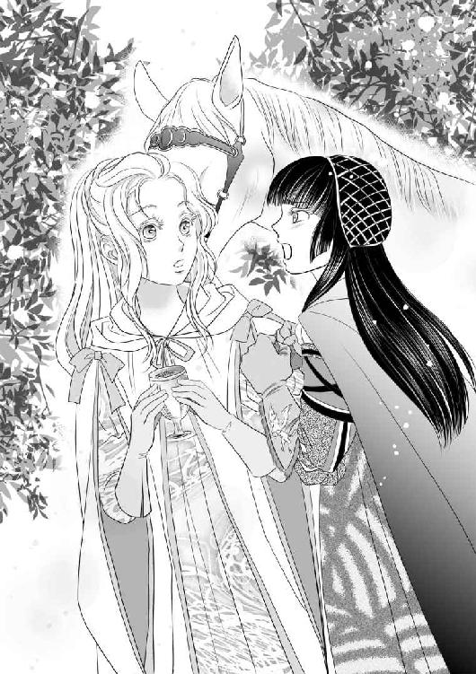
何気なく、人目のない所に連れて来て、油断させておいて毒を飲ませようとして──それを自ら暴露した。何故、クロエはアリアーヌが渇いた喉に、一息に毒を注ぎ込むのを黙って見ていなかったのだろう？
クロエが、もう一度「それを捨ててください」と言ったので、アリアーヌはその通りにした。
「馬が飲んでしまうといけませんから」
クロエはそう言って、手綱を持ってその場を離れた。
「私の家系は──今は没落していますが古い家系で──」
クロエは、唐突に関係のなさそうなことを話し始めた。
「遠い昔は農家でした。北の騎馬民族の血を引くとも言われる先祖は、長く戦乱の続いた時代に領地で軍馬を繁殖することで富を得ました。馬を肥やし、馴致、訓練するだけでなく、病気になったり、戦いで傷ついたりした馬を治すことも家業の一部でした。そして、先祖は薬種の知識を得ました。馬に効く薬は、人にも効くし──そして、馬に絶対に食べさせてはいけない草があり──先祖達は一冊の筆記帳に纏め、長い間に渡って書き加え、修正を繰り返しながら、引き継いでいました。ある時代の当主の妻が──これは恐らく人に有効だろういうことに気づいたのです。以来、私の家は、暗殺者の家系となりました」
アリアーヌは息を呑んだ。
「表向きは小領主、でも、小さな館の奥の地下には、秘密の毒を調合する部屋がありました」
クロエは陰鬱に言った。
「暗殺者の家系──というものがどういうものかおわかりになりまして？」
アリアーヌは首を振った。正直言ってわからない。
「父は忌まわしい裏家業を捨て、代々受け継いだ筆記帳を燃やし、ささやかな領地を治め、畜産を営む一族に戻るべきだと言いました。でも、祖母は──『女の武器』であり、平和が続いたために没落した家を救うことになるかもしれない毒に関する知識を捨てることをよしとせず──そして、筆記帳に書かれてあったことは全て諳んじておりました」
クロエはある日、王都からアージュ公爵リオネルがやって来たのです、と言った。それは、女王と結婚する前の王の名だった。良い馬を買いに来たと言い、衣装箱いっぱいの金貨を差し出し──そして、クロエの祖母に面会を求めた。高齢で、疲れやすく、そして公爵様に失礼があってはならないからと、幾度も婉曲な言い回しで父が謝絶したにも関わらず。
「それから暫くして──前の国王陛下が亡くなりました。次には、三人の王子様方が」
アリアーヌは何も言う気になれず、ただクロエの言葉を聞いていた。
「四人目の王子様には用心深い御友人のパトリス卿がいらしたので、幾度も失敗した。もう毒がなくなった、またあれを一瓶欲しいと、ブールレック子爵を寄越したときには、祖母は他界した後でした。──それで、祖母の技術を秘かに受け継いだ私が召使として宮廷に仕えることになったのです」
「......ディトリッシュのお父様や、お兄様は......」
「ええ、私の祖母が調合した毒で──お亡くなりになったのですわ」
「良かったわ！」
アリアーヌは思わず叫んだ。
「──え......」
クロエは手綱を持ったまま立ち竦み、目を瞠った。
「だって──クロエが殺したのではないんでしょう？ 毒を調合したのもクロエじゃなくお祖母様。それを前の王族の皆様に盛って飲ませたのは、王様だもの！」
勿論、ディトリッシュの父や兄弟が毒殺されたことは恐ろしく、悲しく、忌まわしく──ディトリッシュが怒りと復讐心に燃えるのは当然だ。
クロエはディトリッシュとパトリスに黒い女狐と呼ばれていた。しかし、手を下したわけでもなく、毒を調合したわけでもない。アリアーヌにとってそれだけは喜ばしい。
「クロエは無関係だわ！」
「無関係......？ 私が、そのことに、無関係だと仰る？」
「クロエは、暗殺者の家系に生まれて、毒を調合する方法も知っているけど、誰も殺していないじゃない」
「つい先刻、私は──」
アリアーヌを殺そうとした。
「でも、思いとどまってくれたわ」
「アリアーヌ様、私は......国王陛下の間諜で、その上......！」
「私はディトリッシュの愛人よ。家系図もない貧しい平民の子で、ただのお針子よ」
貴族で、王の愛人である方が、考えようによっては格上だろう。
「全て御存知でいらして──それで......」
クロエは手綱を握っていない左手に目を落とした。アリアーヌが刺繍した炭に似た色の手袋の甲には、薔薇色の天馬がいる。
「──まだ間に合うかもしれない。急いで馬に」
そう言ってクロエは馬に跨った。優雅な貴婦人の乗り方ではない。アリアーヌは何もわからないまま必死でクロエの後を追った。
石畳の道に出ても、クロエは手綱を絞ろうとはしなかった。幾つかの庭と離宮を通り抜ける間、庭師と見られる職人や、衛兵と擦れ違い、いつの間にか通い慣れた小路に出た。
クロエはディトリッシュの庭の柵の扉を開け放ち、鎖と錠前をその場に打ち捨て、また馬に乗った。
蹄の音が聞こえたためか、女装のディトリッシュがテラスから庭に出て来た。
「妾の庭に何の用？ 誰の許しを得て此処に来たの」
「御不興を承知で推参致しましたことは、この駿馬に免じてお許しくださいませ、ディトリッシュ殿下」
クロエは『一番速い馬』として選んだ馬から降りた。
「おお、悍ましい毒を纏った娘！ 去れ！ その馬の蹄の跡には草は芽吹かず、花も咲くまい！」
「茶番におつきあいする時間はございません！ 王の親衛隊が参ります」
クロエは激しく首を振る馬の首を叩いて宥めた。
「なんだと......？」
「王は、あなたが反乱を起こすのを待ち、それを叩き潰すことであなたを亡きものにするつもりでしたが──あなたが動かぬことに焦れて、待つことをやめたのです。そして──不都合なことを御存知である上に、思い通りにならないアリアーヌ様もまた──殺せと、私に」
ディトリッシュの顔色が変わった。
「助けてくれたのです！ クロエは、私を殺せたのに、本当にいつでも殺せたのに！」
アリアーヌは馬から降りた。不慣れなのにクロエの真似をしたために転びそうになった。
「アリアーヌ！」
「アリアーヌ様！」
ディトリッシュは女物の衣装の裾を翻して駆け寄ったが、クロエの方が近かった。クロエが転ばないように支えてくれた。アリアーヌよりずっと小柄だが、力はあるらしい。
ディトリッシュの部屋の方で荒々しい金属音がした。
本当に兵士達がやって来たらしい。
「第四王子ディトリッシュ殿下！ 王命により逮捕致します！ 罪名は反逆と殺人！ 父殺しと兄殺しの容疑がかかっております！」
「おお、なるほど。そうきたか」
ディトリッシュは女言葉を遣うのをやめた。
「忌々しいことに、今、腰には剣がない！」
ディトリッシュは舌打ちをして、クロエが差し出す手綱を取った。
「お前に借りを作る以外に、この場を切り抜ける手段はないようだ！」
クロエは鞍に着けた革袋の中身を、剣を抜く兵士達に向けて撒いた。葡萄酒の芳香が漂ったが、数人の兵士は目を押さえて断末魔のような悲鳴を上げ、直接浴びなかったものも香りだけでまっすぐに立っていることができなくなった。
「急いでこの場を離れてくださいませ！」
クロエが叫んだ。
「クロエも一緒に！」
アリアーヌは叫んだ。
「馬は二頭しかいません。相乗りで追っ手から逃げるのは無理です」
「クロエ！」
「御心配なく。これまで宮廷で狡っからく立ち回ってきました。今回もこれは全部アリアーヌ様とディトリッシュ様がしたということにして、生き延びて見せますわ。もう一度御目にかかれることがありましたら──今度こそ、心からの忠誠を以て生涯かけてお仕え致します！ アリアーヌ様！」
クロエは馬に乗ったアリアーヌの衣装の裾にくちづけた。
死ぬ気だ、とアリアーヌは確信した。
「いいえ！ だめよ！ 一緒に来て！ 厩舎にはもう一頭いるはずよ！」
「連れて来る時間はありません」
「あなたも一緒でないなら行かないわ！」
「ああ、困った方」
クロエは駄々を捏ねる子供を宥めるような口調で言った。
「私を此処にひとり残せば全員が生き残る道がある。あなたが残り、ディトリッシュ殿下だけを逃がしても──王があなたを人質にしたらディトリッシュ殿下はどうなさるかしら？」
どうするのだろう？ ディトリッシュは微塵も覚えのない罰を甘んじて受けるだろうか？ 自分のために？ そんなはずはない。
アリアーヌはディトリッシュを見た。
ディトリッシュの瞳は、陽射しの下で見ると、一層青い。
「くそ！ 女狐！」
クロエに向かってそう吐き捨てた後、ディトリッシュはアリアーヌに向き直った。
「愛している！ アリアーヌ！ 俺と来い！」
アリアーヌは言葉を失い、クロエはふたりを見て得意げにほくそ笑んだ。
「ね？ 行かないというわけにいきますまい？」
ディトリッシュは如何にも忌々しげに眉を寄せた。
「何故、アリアーヌにつく？」
「あの男、私には王冠が欲しくて女王陛下と結婚したけれど、実質的には夫婦でないと言っておりましたのよ。それなのに、此の度、女王陛下はめでたく御懐妊！ そして、アリアーヌ様には王妃にしてやると言って誑かそうと致しましたの。私には、一度もそんなことは言わなかったのに！」
クロエは国王に対して敬語を使うのをやめた。
「そして──おわかりにならないでしょうけれど──アリアーヌ様は、私にこれをくださいましたの」
クロエは右手で左手を強く握り、炭色の革の手袋が見えるように馬上のディトリッシュに見えるように頭上に掲げた。
「宝石でも、お金でも、たとえ世界一の馬を戴いたとしても──私を寝返らせることはできなかったでしょう！ この小さな刺繍ひとつにどれほど手間暇がかかるか御存知？」
ディトリッシュは、手綱を巧みに操って馬に首を開け放った門に向けさせた。
声は、馬の嘶きに掻き消されてよく聞こえなかったが「わかる」という風に唇が動いた気がした。
「くそ！ 外に出たいとは思っていたが──よりによってこの格好で街にか！」
ディトリッシュは解けないように、アリアーヌが刺繍した肩掛けを胸元できつく結んだ。
「殿下、これを」
クロエはディトリッシュの庭で倒れている兵士が佩いた剣を抜き取り、鞘ごとディトリッシュに投げた。
「パトリス卿のお住まいには、一番に追っ手がかかるはずですわ。何処か別の場所にお逃げください！ 隠れ家のひとつやふたつ、用意していらっしゃるでしょう？」
「クロエ！」
「次に逢ったときに生きていれば、命は助けてやる。アリアーヌが泣くからな」
ディトリッシュはそう言った。
「早く、お行きください。これから私がすることを、アリアーヌ様に見せたくはありません」
クロエがアリアーヌを乗せた馬の尻を鞭で打つと、馬は開け放った門に向かって駆け出した。
その場に残されたクロエは、毒酒を浴びて苦しむ兵士の手から剣を奪い、三十名余りの兵士達ひとりひとりの口を封じた後、自分の腕にごく浅く傷をつけ、その場に横たわった。
「ああ、本当に爽やかないいお天気」
クロエは、王が首尾を見届けに来るまで昼寝をすることにした。
ディトリッシュは、どの時間にどの門が開いているかを熟知しているらしかった。
物見の塔には兵士達がいたが、騎馬のふたりの貴婦人を怪しむこともなく黙って見送った。
王は陰謀を静かに終わらせたかったのだろう、と、後にディトリッシュは言った。ディトリッシュもアリアーヌも抵抗らしい抵抗はできまいと高を括っていた。そして自分がクロエを踏み躙っている自覚すらなかったから、裏切られるとも思っていなかったのだろう、と。
クロエが言っていた通り、ディトリッシュは隠れ家を用意していた。パトリスは懸命に諌めていたが、ディトリッシュは女の衣装を着て自室に籠もりながら復讐を果たす機を窺っていた。母である女王が、新しい夫に夢中でなければ、もっと早く自分から事を起こしていただろう、と言った。
王都の外れにあるその館は古く、ひと気もなく、調度品さえなかったが、城塞のような壁に囲まれていた。すぐ近くには、王都を囲う堅牢な城壁が見える。
建物は崩れかけ、石の床を突き破って雑草が生え、壁にまで蔓が這っていたが、扉だけは頑丈で閂の金具も新しかった。
「食料だけは蓄えさせてあるが──気の触れた王子の許に、どれだけの味方が集まるか」
ディトリッシュは自嘲したが、表情は今まで見たことがないほど明るかった。本当に、女の格好をして、気の触れたふりをし、閉じ籠っているのが嫌だったようだ。
ほどなく、パトリスが私兵と見られる数十騎と共に隠れ家にやって来ると、ディトリッシュはアリアーヌに家族と親方夫妻に手紙を書けと促した。
「なんと？」
「命が危ないから逃げろと。宛名も差出人も書くな」
読み書きは最低限できるが得意ではないというと、パトリスが床の砂埃を払い除けて、そこで寝そべって代わりに『逃げてください。詳しいことはいずれお話し致します。同封の宝石をお金に換えて一刻も早く身を隠してください』と美しい文字で書いてくれた。アリアーヌは文末に『Ａ』と自分の頭文字を書くだけで良かった。
ディトリッシュは幾重にもかけた首飾りを惜しげもなく全部外し、パトリスの私兵のひとりに手紙と一緒にそれを託した。
そして、ディトリッシュはパトリスが連れてきた兵士達に水を所望した。ひとりが畏まりながら革袋を差し出すと、頭からそれを浴びて化粧を洗い流した。
「鎖帷子を寄越せ」
「はいはい。重いですよ。耐えられますか？ 相当鈍っておいででしょう？」
「女の衣装も着てみると相当重い。知らないだろう、お前」
「幸いにも」
ディトリッシュはアリアーヌが誂えた女物の上着を脱ぎ、その上から鎖帷子を着た。アリアーヌが施した豪華な刺繍の下着は裾が長すぎるから切りたい、と酷く申し訳なさそうな顔で言った。
「どうして針と糸を持ってこなかったのかしら」
針箱があったとしても、一番手間をかけた裾は切りたくない。アリアーヌは思い立って、ディトリッシュの腰の辺りで下着をたくし上げ、留め金と飾り帯で留めた。こうすれば脛当ても着けられるし、切った裾がほつれてみっともなくなることもない。
踵の高い靴を脱いで履き替え、黒い外套を纏うと、美女の姿はそこにはなく、長身の戦士がいた。
「準備不足は否めませんが──」
パトリスが言った。
「準備万端整ったクーデターなどそうそうないだろう」
「確かに。此処は賭けに出るか逃げるかしかありません」
パトリスは僅かな未練を含んだ視線で窓の外を見た。この人数で城塞を越えて王都を去り、姉の嫁ぎ先である隣国に亡命することもできるが、ディトリッシュは逃げることを望まないだろう。
「街に行くぞ！」
ディトリッシュは声を張り、兵士達は鬨の声を上げた。三十にも満たない寡兵だったが、それは確かに鬨の声と呼んでいい高揚があった。
「アリアーヌ様は──此処でお待ちください」
パトリスが言った。ディトリッシュのことは心配だったが、乗馬も満足に出来ない自分がついて行っても何もできないだろうと思われた。
「あの──食料があるそうですね。食事の支度をしておきます」
この人数分ならば、材料と鍋があればなんとかなるだろう。
しかし、日が暮れる頃、ディトリッシュは数十倍の人数を連れて戻って来た。
街に出たディトリッシュは、堂々と名乗り、広場で民衆に向かって演説したのだという。一年もの間、自分の心を語ることもできずに鬱々と過ごしたディトリッシュは今や確信へと変わった王への疑惑を声高らかに叫び、不当に王位を得ただけでは飽き足らず三人の兄を毒殺し、更に自分を無実の罪に陥れたのだと訴えた。
後の公文書には「諸君！ 私は待っていた！ この日を！ 女の衣を脱ぎ、あの簒奪者を糾弾するこのときを！ 私には、此処にいる僅か三十騎の友しかいない！ しかし、それでも心臓が止まる瞬間まで戦うことをやめる気はない！ 私を殺すならば、剣で向かって来い！ 王を僭称する卑怯者！ 此処に来て、私が語るのを止めてみろ！」と書かれている。書いたのは生涯にわたってディトリッシュの寵臣であった後のリーブル公爵・パトリスであるので、実際にはもっと荒々しい表現だったのを精いっぱい公文書に相応しく改竄している可能性があるが、ともかく、漸く自由を得たディトリッシュの弁舌は王都の民を魅了したらしかった。
此処数年、王家にはあまりにも不幸が多すぎた。民衆は酒場で、食堂で、或いは家族が揃う寛ぎのときに──密やかにそれを語り──ある疑惑に辿り着いた。しかし、それを大声で話すことは決して許されなかった。民衆は王家には親愛と敬意を持っていたが、王の戴冠については違和感があったらしい。
疑惑を抱きながら口を噤まざるを得なかったのはディトリッシュだけではなかった。陰鬱な沈黙を破った若き王子の周囲を幾重にも人々が取り巻き、語る言葉の合間に「そうだ！」という叫びが重なった。
王は、ディトリッシュが、まさか僅か数十の、それも臣下の私兵だけを連れて王都の中央の広場で堂々「我こそ正統」と声を上げるとは思わなかったらしい。
いずれ挙兵するにしても、国内で身を潜めるか、或いは他国に亡命して時を待つのが定石。パトリスもそれを奨めたかったようだったが、ディトリッシュはそうしなかった。
「愚か者と呼ぶものは呼べ！ 死ぬときは男として、騎士としてと決めていた！」
殆ど廃墟といっていい館の奥に秘かに蓄えた酒と干し肉を付き随う者達に惜しげもなく振舞い、ディトリッシュは盃を片手に叫んだ。
アリアーヌが大鍋で煮たベーコンのスープは全員に行き渡らなかった。
「どうしよう」
アリアーヌが呟くと、パトリスが言った。
「今夜は彼等も不満は言わないでしょう。三日目くらいまでは酔っていられる」
そして「酒ではなくディトリッシュ王子に。眉目秀麗な若い王子が、卑怯者な手段で王冠を手にしたものを弑する──そんな夢物語に」と付け加えた。
「──でも......」
今は熱狂していたとしても、人は食べずにいることはできない。
「街の商店からの略奪はディトリッシュ殿下のお好みではないな。......何か考えないといけないのは確かです。この廃墟に、いつまでも籠城はしていられない」
パトリスはアリアーヌを見た。
「あなたにお願いがあります」
それは、とても真剣な声だった。
ディトリッシュが街の男達──パトリスは彼等を『義勇兵』と呼んだ──と語らっているのが壁の隙間から見える。崩れかけた廃墟では密談は難しいが、誰かが王を讃える歌を歌い始めると、それはすぐさま大合唱になった。誰もパトリスとアリアーヌの話を聞いてはいない。
「隣国のクレール王国に嫁いでいらっしゃるディトリッシュ殿下の姉君の許に手紙をお届けください」
アリアーヌはパトリスを見た。
「ディトリッシュ殿下に従うものは、更に増えるでしょう。だが、見ての通り、彼等を養う兵糧も、行き渡るだけの武器もない。無論、調達に走っていますが──今は王の方が圧倒的に有利です。王国軍が此処に押し寄せればすぐにでも捻り潰されてしまう」
そうなっていないのは、女王が、ただひとり残った息子を殺すことを止めているからだろうとパトリスは言った。
「暫く──出来るだけ長い間、時間を稼ぎます。あなたには、この手紙を届けていただきたいのです」
パトリスはアリアーヌに白い封筒を差し出した。
「ディトリッシュは......」
「お伝えしていません。夜明け前にひとり、気づかれぬように出発してください」
「ディトリッシュに......秘密で......？」
「あなたが発った後に正直に申し上げます。ディトリッシュ殿下はあなたを大切に思っていらっしゃる。共に死ぬつもりはないはずです」
「死ぬ......？」
「ディトリッシュ殿下を死なせぬためです。クレール王国に物資と援軍を要請する大切な手紙です。殿下の姉君は私の筆跡を御存知だが、念のためにこれも」
パトリスは人差し指に嵌めた紋章入りの指輪を外した。
そのとき、建物の外から声がした。
「おひとりでは無理ですわ」
足音さえ聞こえなかったために、夜に溶ける黒衣と黒髪に気づいたのは間近で声が聞こえたときだった。
クロエ！ と叫びそうになった口を、濃い灰色の手袋をした手が塞いだ。
「お静かに」
「無事だったのね！」
アリアーヌは必死に声を抑えた。
「申し上げましたでしょう？ 今回も狡っからく立ち回って咎められもせず、ディトリッシュ殿下に手傷を負わされたと訴えて手厚く手当てされました」
パトリスは「黒い女狐」と呟いた。
「これくらいでは信用できないでしょうけれど、外に手土産代わりに食糧を運ばせてありますわ。この人数なら十日分ほど」
「毒入りでないと、どうやって証明する？」
「燃やすも捨てるも御随意に。──でも、私ならパンは鳥に、スープは犬に毒見をさせますわ」
パトリスは舌打ちをした。普段の上品な印象にそぐわない。やはり、クロエを信用していないのだろう。
「女性のひとり旅は目立ち過ぎます。しかもアリアーヌ様は乗馬も、地図の文字を読むこともお得意ではないし、旅慣れてもいらっしゃらない。私が一緒に参ります」
パトリスは眉を寄せた。
「それとも、男の警護をつけるおつもり？ この美しいアリアーヌ様と寝起きを共にして旅の途中で欲望を抑え切れる兵士がいますかしら？ そうでなくても、今は一兵でも必要なときではありませんの？」
パトリスは納得せざるを得なかった。
その夜は、寝台もない床の上で、ディトリッシュの外套にふたりでくるまって抱き合って眠った。
「寒い季節でなくて良かった」
ディトリッシュは言った。
廃墟には明かりもなく、壁も天井も崩れかかっている。遠くからは兵士達が騒ぐ声が聞こえる。
「ディトリッシュ」
アリアーヌはディトリッシュの肩に頭を凭れさせた。
「ん？」
「あれは、本気で仰ったの？」
「何を？」
「......私を──愛していると」
「あんな風に言うつもりはなかった。女狐め」
ディトリッシュは天井から壁へと視線を移し、アリアーヌから顔を背けた。
「心にもないことを仰ったの？」
「まさか！ ──あんな格好で、見物人のいる場所で、強いられて言うつもりはなかったということだ！」
「......ディトリッシュ」
アリアーヌは身を起こし、ディトリッシュの頬にくちづけた。
本心だったと──少なくとも、ディトリッシュが嘘偽りを言ったのでないというのならば自分は幸せだ。
たとえ、二度と逢えないとしても。
「愛しています」
アリアーヌはディトリッシュの頭を胸に抱いて髪を梳いた。
「──よせ」
そう言ったが、ディトリッシュは離れようとはしない。
「お嫌？ どうして？」
「兵士達が近くにいる。──お前の声を聞かせたくない」
顔が熱くなった。
しかし、明日には黙って此処を去らなければならない。自分は足手纏いだし──パトリスに頼まれた大切な役目がある。ディトリッシュの命を救うために、離れなければならない。
「では、口を塞いでください」
アリアーヌはディトリッシュと唇を重ねながら、長い銀髪を束ねるレースの飾り紐を解いた。
ディトリッシュは息を呑んでそれを受け取り、アリアーヌの口に咥えさせ頭の後ろで結んで轡にした。
「──ん......」
レースを噛んだ上からでは舌を絡めることもできなかったが、唇が触れるだけで肌が熱くなった。ディトリッシュの手は外套の下で性急に動き、アリアーヌの肌のあらゆる場所に触れた。
「......んんっ......！」
「静かに」
アリアーヌは必死に頷いた。
ディトリッシュの指の動きが、ぎこちなくなった。
「その手は此処に」
アリアーヌが肩に縋りついたために、思うように指を動かせなくなったらしい。アリアーヌはディトリッシュの言う通り、両手をディトリッシュの腰に回した。
そのとき、壁越しに足音が聞こえた。
アリアーヌは息を呑み、ディトリッシュから離れようとした。
ディトリッシュはそれを許さず、強く抱き寄せて耳許で囁いた。
「──静かに。敵が紛れ込んでいないか、夜警をしているだけだろう」
すぐに去るはずだ、とディトリッシュは言い、確かにその足音はすぐに遠ざかった。
アリアーヌは、ディトリッシュのものに触れた。
急がなければ──また警備の兵士が戻って来てしまうかもしれない。それに──もう我慢できない。
口を塞がれているために言葉にはできなかったが、ディトリッシュはアリアーヌの中に入ってきた。
「......っ！ ......！」
レースで塞いだ口からも堪えきれない呻き声が漏れるのを自分の両手で押さえた。
こんな場所で、近くには大勢人がいる──しかし、たとえ、だれかに見つかってしまったとしても後悔はない。これが最後になるかもしれないのだから。
「──！」
アリアーヌに絶頂の瞬間がやってくると同時に、ディトリッシュは歯を軋ませた。熱いものが放たれたのを感じ、たて続けに幾度も達した。
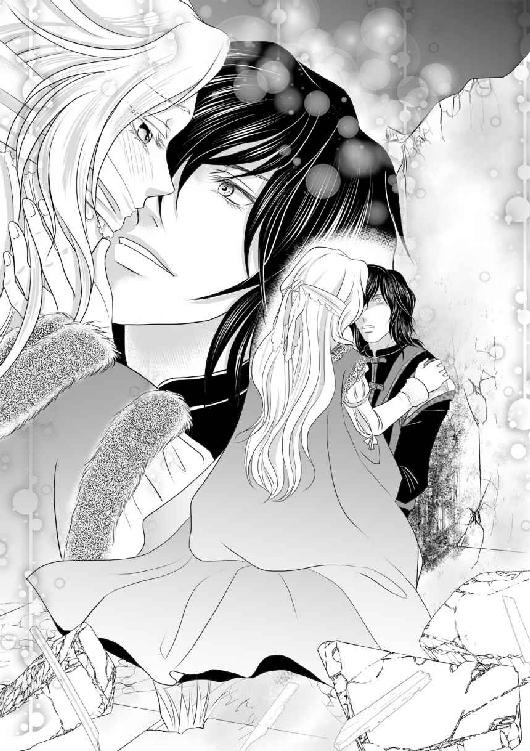
ディトリッシュは──満足しただろうか？ 死ぬかもしれないと覚悟をして事を起こしたこの人は──？
ディトリッシュはアリアーヌの口を塞ぐレースを解くと強く抱き寄せた。ディトリッシュの荒い息は、やがて深いためいきに変わった。
ああ、良かったとアリアーヌは心から思った。この人は明日死ぬかもしれない。もし、そうなったならば、自分がこの人の最後の女だ。
勿論、ディトリッシュには死んでほしくはない。この人には生きていてほしいと思う。
アリアーヌはディトリッシュの髪を撫で続けた。
何もかも捨てて、一緒に逃げてほしい。しかし、そう頼んでも、きっとディトリッシュは承知しないだろう。もし、自分の涙と懇願に屈してくれたとしても──何処か遠い場所で農民や狩人──或いはアリアーヌと共に小さな街の仕立屋を営むことなどこの人にはできない。
これ以上──この人に、人生まで偽らせてはいけない。
アリアーヌは肩を揺さぶられて目覚めた。
きっと眠れるはずはないと思っていたのに、ディトリッシュの髪を指で梳いているうちに深く眠ってしまったらしかった。
振り返ると、身を屈めたクロエが唇に人差し指を当てていた。
崩れた壁の隙間から、薄紫の東の空が見える。まだ夜は明けきっていない。
クロエはおそらく、足音を立てないために裸足だった。アリアーヌも裸足のまま起き上がった。ディトリッシュの腕が固く抱きしめているのを解き、注意深く外套の中に入れた。
「アリアーヌ......」
「はい。ディトリッシュ。此処にいます」
アリアーヌはそう囁いた。
「まだ夜中です。ディトリッシュ──もう少し眠りましょう。明日は早いのでしょう？」
そう言うと、ディトリッシュは、また寝息をたて始めた。
アリアーヌはクロエと共に足音を忍ばせて建物の外に出た。そこには丈夫な革の長靴と、鞍に荷を吊るした馬が二頭いた。
『おとなしい馬』である黒い馬と『美しい馬』である白い馬。
クロエは、『速い馬』である赤毛の馬は、ディトリッシュのために残そうと言った。勿論、アリアーヌに異存があるはずはなかった。
「ほら、アリアーヌ様の針箱は此処に」
クロエはそう言った。
「縫物をする時間などございませんけれど──お持ちになりたいと存じまして。お身体の一部のようなものでしょう？」
なんて気が利くのだろう。まさにその通りだ。他人には殆ど価値のないものだが、騎士にとっての剣、楽師にとっての楽器のように、アリアーヌにとって他に替え難い道具だ。
旅行用の厚手の帽子に纏めた髪を押し込み、長靴の紐を固く結ぶアリアーヌとクロエの許にパトリスがやって来た。他に起きているものもいない早朝だというのに一部の隙もなく身支度をしている。
「殿下への御伝言は？」
なんと言えばいいのだろう？
必ず戻る──などと、約束すべきではない。
「何も──」
「お願いです。何か承らせてください。殿下のお怒りの炎を一身に受けなければならない私の身になって」
「では──御武運を、と」
「あなたらしくない。私が適当なことを言っていると思われてしまいます」
不満を言われるとは思わなかった。
「ええと......では......パトリス卿を叱らないでください、私の意志で行きます、と」
「もう一声」
「男物の衣装を縫わせていただくまで、死なないでいてください」
「承知致しました」
パトリスは満足気に笑った。
クロエはアリアーヌが馬に乗るのを手助けしてくれた。
「さあ、参りましょう。そんな顔をなさらないで。死にに行くのではありません。この美しい朝に、ディトリッシュ殿下に勝利を齎すために旅立つのですから。急ぎましょう」
アリアーヌは黒い馬に、クロエは白い馬に乗り、鞭を入れ、王都を守る城壁に駆け出した。
王都を出るときには、クロエが上手に説明してくれた。
「この方は王都の商家の御令嬢。辺境の領主に嫁いだ姉君にお子様が誕生なさったので、お祝いに行くところでございます。お供が女ひとりでは少なくないかって？ だって、王都はあの騒ぎですもの。奉公人はお店とお屋敷を略奪から守らなければならないので人手をかけられないのです。だからと言って、お祝いを届けなければ、身分違いの結婚をなさった姉君が肩身の狭い思いをなさってしまうでしょう」
何度か兵士に止められた。女ふたりで旅をしている理由は、「出産祝い」の他に「葬式」や「結婚式」、ときには「病後の保養」と、そのときどきで変わったが、アリアーヌは殆ど口を利く必要はなく、クロエに任せておけば良かった。
先を急ごうとするアリアーヌに、クロエは「馬を休ませなければなりません」と言い、できる限り宿に泊まれるように手配してくれたが、ときには野宿を余儀なくされた。
長時間、馬に乗っていることに慣れてしまえば旅は思ったほど困難ではなかった。王都の混乱の噂は届いたが、ディトリッシュが斃れたという報はなかった。
しかし、国境近くの街で嵐が来て二日も宿に足止めされてしまった。
アリアーヌは焦れたが、クロエは「屋根のある場所で幸いですわ。野宿なら馬もろとも命を落としたかもしれません」と言った。
そうかもしれない。しかし、一日も早くクレール王国のディトリッシュの姉の許に助力を請いに行かなければならないのに。
クロエに「さあ、こんなときこそ、お望みの縫物をなさいませ」と言われ、アリアーヌは久しぶりに針箱を開けた。
「やまぬ雨はありません。今のうちに、身体をお休めくださいませ。嵐が去ったら国境までは休まずに参りますわよ」
クロエがいてくれるのは実に心強かった。もし、自分ひとりの旅ならば先を急いで判断を誤ったかもしれない。
嵐が去った。
ぬかるんだ悪路だったが馬達はよく走ってくれた。嵐の間、クロエが丹念に手入れをしてくれたお陰だろう。
国境守備隊の兵士達からは、王都を出るとき以上に厳しい尋問をされた。
被り物を取れと言われたアリアーヌは強張りながら帽子をずらした。
「ふたりとも黒い髪──王子の愛人ではないな」
前夜、クロエがアリアーヌの乗っている黒い馬の尻尾の毛を一束切り取って来て、アリアーヌがそれを髪に見えるように糸で縛って細工した。
ひとまず、アリアーヌがディトリッシュの寵姫であるということは知られずに済んだが、王都が不穏な状態であるために、尋問はこれまでになく厳しかった。
クロエはそつなく堂々と受け答えをしてくれたが、荷物を検めさせろと言われた。
「お好きに」
兵士達はアリアーヌの針箱の底まで調べたが、何も見つけることはできなかった。
次には外套と上着を脱ぐようにと言われた。
「なんという侮辱！」
クロエは叫んだ。
「御立派な騎士様方が、御役目にかこつけて女性の肌を見ようとは！」
「下着まで脱げとは言わぬ」
夏の間は貴族でも下着姿で出歩くものなので、それ以上拒むことはできず、ふたりは帯を地面に落とし、上着を脱いだ。
「──いいだろう。通れ」
アリアーヌとクロエは急いで元通りに身支度をし、国境の壁を越えた。
そこはもはやクレール王国だったが、全速力で馬を走らせた。
「もう、よろしゅうございますわよ！」
そう言われたので、アリアーヌは馬上で帽子を取った。銀色の髪の根元に糸で結びつけた馬の尻尾が飛んでいった。
もう、此処からは髪を隠さなくてもいい。しかし、急がなければ。
ディトリッシュの姉が住む王都はまだ遠い。
クレール王国の王都では堂々と本名を名乗り、「隣国のパトリス卿の使者として、王太子妃殿下に御目にかかるために参りました」と言った。
半月余りの旅のために、ふたりとも日に焼け、外套も汚れていたが、パトリスから預かった紋章入りの指輪を見せると王都の城壁を守る兵士は丁寧な口調になった。──クロエが密かに銀貨を数枚握らせたせいかもしれない。
旅の汚れを落として衣服を改めてからの方が、とクロエは言ったが、一時も待ちたくない。
アリアーヌはそのまま王宮に向かった。
パトリスは眉目秀麗で博識である上に、決闘を好み、しかも一度も負けたことがないことで有名人だった。帰国するときには、多くの人々がそれを惜しんだらしい。
指輪を見せると、王宮の門を潜ることができた。そして、控えの間、応接室へと通され、最後に王太子の執務室に通された。王太子の傍らには王太子妃がいる。髪と瞳は、ディトリッシュと同じ色だ。
「......！ なんて......よく似て......お姫様......」
アリアーヌは挨拶の御辞儀をすることも忘れて呆然と立ち尽くした。
「アリアーヌ様」
小声でクロエが呼んだ。
王太子妃の膝に三歳ほどに見える子供が纏わりついてはしゃいでいる。
「......！ 王太子殿下、妃殿下......！ 私は──」
涙が溢れて何も言えなくなった。
「しっかりなさってください。アリアーヌ様。なんのために此処まで困難な旅をしてきたのです！」
クロエは倒れそうなアリアーヌの肩を支えた。
アリアーヌは嗚咽が漏れそうな喉を自分の手で押さえた。
「お許しを......どうか、これを読ん......お読みくださいませ。パトリス卿からの、お手紙......です......」
アリアーヌが突然上着の帯を解いたために王太子夫妻と近くにいた護衛の騎士が目を見開いた。帯の裏にはアリアーヌが縫いつけた手紙がある。アリアーヌは縫い目も解かず荒々しい音を立てて引き剥がした。
封筒には皺が寄り、針の跡が残っていたが、Ｐの封蝋は損なわれていなかった。
アリアーヌの様子が尋常でないと見て取った王太子夫妻は咎めることなくそれを手に取り、手紙を読んでくれた。
ディトリッシュの姉である王太子妃の顔色が変わった。
「──なんということ......妾の兄弟たちは三人までも殺されたと......」
「妃に弟妹が生まれるという報を喜ばしく思ったばかりだというのに──妃の生まれ故郷では、王子が母である女王に叛旗を翻したというのか？」
「違います！」
アリアーヌは叫んだ。そうではない。
「ディトリッシュが叛いたのは女王陛下ではなく、王様──王位を盗んだ男です！ 殺されそうになったのです！ ディトリッシュも！」
クロエはアリアーヌの帯を拾って巻き直し、背中を撫でた。
「両殿下──。この必死の様子を御覧くださいませ。騎馬での旅に疲れ、汚れ、窶れて、おふたりの前に出るのに相応しい姿ではないと申しましたが、衣装を改める時間も惜しんでのことでございます。それほど火急の事態が起きてございます」
「今すぐに......妾に、母につくか、弟につくか選べと言うのですか？」
王太子妃は眉を曇らせた。
「いいえ！」
アリアーヌは叫んだ。
「決してそうではございません！ ディトリッシュの敵は女王陛下ではなく、国王陛下だけです！」
「......確かに、あの男は、本来ならば王冠など戴いてはならぬものです」
王太子妃は屹度して夫を見た。
「どうか王を僭称するものを除き、正統なるものに加勢を」
「良いのか？ 確かにパトリス卿の筆跡だが、此処に書いてあることが総て正しいとは......」
「妾は、母上の夫となる前の、アージュ公爵リオネルという貴族しか存じません。卒のない男で、非礼を受けた覚えもなく......特に印象に残るような会話をしたこともないから憎しみはありませんが──弟とあの男、どちらを愛するかと訊かれれば、勿論、小さな可愛いディトリッシュです」
小さな可愛い──七年前のディトリッシュは幼さの残る少年だったのか。アリアーヌは何か無性におかしくなった。小さくて可愛いディトリッシュを想像して笑ってしまう。その瞬間、アリアーヌは膝を折って前のめりに倒れてしまった。
「アリアーヌ様！」
クロエの声が遠くなっていった、アリアーヌは返事をすることができなかった。
アリアーヌが賓客用の部屋の寝台で目覚めると、直ちに食事が運ばれてきた。
自分は一体どうしてしまったのかと尋ねると、王太子夫妻との謁見の最中に気を喪ったのだとクロエが言った。
「私ったら！ ......あの、それで!?」
「大丈夫、事情が伝わったから、気が緩んでおしまいになったのでしょう。今、この国の王様と、王太子様が、顧問官達と会議中ですわ」
クロエは、まだディトリッシュに救いの手が差し伸べられていないことに失望しかけたアリアーヌに「軍を動かすのは、女ふたりで国境を超えるよりも大掛かりだから、思い立ってすぐというわけにはいかないのです」と言った。
「でも、早くしないと......！」
「大丈夫。アリアーヌ様にはおわかりにならないでしょうが......様々な事情を鑑みて、この国にとっては、ディトリッシュ殿下が次の王となる方が都合は良いはずですわ。さあ、食べたら湯浴みを。朝はあんな姿でしたが、晩餐会では、アリアーヌ様がどれほどお美しいか、クレール王国の方々に見て頂かなくては」
「そんなこと必要ないわ！ 手紙を届けたのだから早く帰りたい！」
「帰りは恐らく海路を船で、ということになりますわ」
「海？」
「ええ。陸を騎馬の軍が横切るには国境で一戦を交えねばなりませんから。それに、この国は海軍が強いのです」
二日後、アリアーヌはクロエと共にクレールの軍船に乗り込んだ。海軍の提督の旗艦で個室を宛がわれ、船倉の脇に繋がれた二頭の馬と共に丁重にもてなされた。
帆船は風に恵まれ、遥か彼方に海岸線を眺めながらディトリッシュが戦う王都の港を目指した。
混乱を極めた王都守備隊は、水平線から数千の軍船が押し寄せているという報告を受けて恐慌に近い状態に陥った。
クレールの国旗を掲げるその船が、何のために現れ、誰の味方なのかがを知るのにそう時間はかからなかった。
王都では、ディトリッシュの外套と同じ黒い布を旗印として民衆が集い、肉屋は包丁を、大工は槌を武器にし、鍛冶屋の壁にあったものは武具のみならず農具や鋏までも売り切れた。黒い布がディトリッシュ支持の印と前以て知っていたクレール海軍は黒い旗を掲げた。
クレール王国はディトリッシュ支持。大軍を率いて港を包囲した。
その報が確かなものだと知れ渡ると、王都守備隊の中の何割かが離反した。
武器も装備も不足はしていたが、民衆の支持を得たディトリッシュは数で王都守備隊を圧倒しつつあった。
アリアーヌはクロエと共に水先案内人の小舟に乗り、港に降り立った。
黒い布を旗にした義勇兵が歓喜の声をあげた。
「道を開けて！ アリアーヌ様がディトリッシュ殿下に御目にかかるまで、誰も邪魔はなりません！」
勇ましく自馬に跨ったクロエがアリアーヌを先導した。
ディトリッシュの率いる義勇兵は王宮を取り囲み、前庭には王宮の近衛騎士団と王の親衛隊が結集し、両軍は門を隔てて睨み合っていた。
「アリアーヌ！」
ディトリッシュの姉から贈られた新しい黒い外套を着たアリアーヌが駆けつけたのを見てディトリッシュが叫んだ。
「ディトリッシュ殿下の勝利の女神が帰還なさいましたわ！」
状況も人目も憚らず、馬を降りて抱き合うふたりを指し示してクロエが叫んだ。
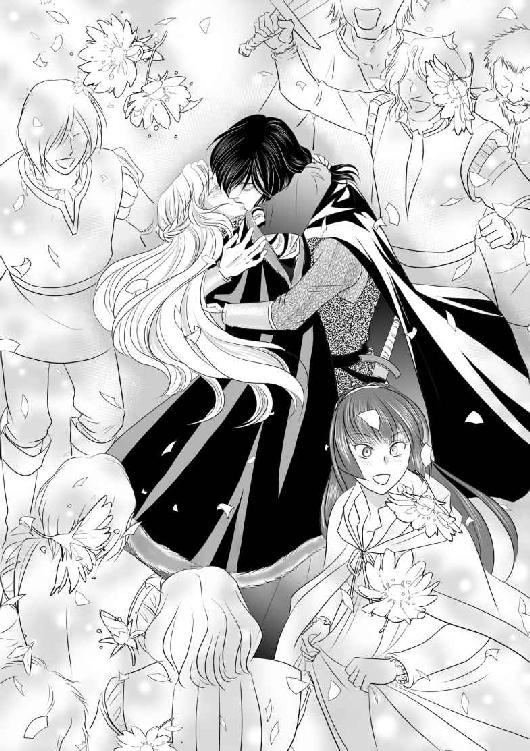
クレール王国の伝令が王宮内に招き入れられて数刻の後、唐突に国王の退位が宣言された。それは事実上の敗北宣言だった。
王都中の鐘という鐘がディトリッシュの勝利を祝福した。
ディトリッシュはアリアーヌの肩を抱き、パトリスを従えて正面から堂々と生まれ育った王宮に戻った。
謁見の間の玉座には王がいた。しかし、目の下の隈が濃く、僅かの間に白髪が増えているように見える。憔悴しきっているのは明らかだった。
玉座の前には煌びやかな王冠が置かれていた。
「望みのものだ」
王は──否、退位を宣言したために、王でなくなった男は投げやりに言った。
「俺は──生まれてから、こんなものを望んだことは一度もない。一番上の兄上がこれを頭に戴くはずだった」
ディトリッシュは無造作に王冠を手に取った。
「今も、別に欲しくはない。だが、貴様の玩具にはしておきたくないから俺のものにする。──これと引き換えに、望みはあるか？」
「......私の──女王陛下の胎内の子の命の保証を──」
「貴様に求められるまでもない。俺の大事な弟妹だ。他には？」
数刻前まで王であった男は怯えてはいなかった。一見すると威厳を保っているようにも見えたが、考えることさえ諦め、放棄している。
早口で、誰にも聞こえないような声で何かを呟いている。「何故」「こんなはずでは」と唇が動いているように見えた。
「裁判には掛けぬ、罪にも問わぬ。母上の腹の子を生まれながらにして大罪人の子にはせぬ。公爵の称号はそのまま、館と召使は与えるが、客を迎えることは禁じる。最低限の名誉を保ち、余生を過ごせ」
王であった男は、緩慢に視線を動かしただけで、安堵も不満も口にしなかった。
しかし、パトリスの私兵に引き立てられるようにして玉座を立って謁見の間を去るとき、すれ違いざま、クロエに「何故だ？」と尋ねた。
「やはり、あなたは王の器ではなかったのです。あなたがそうであったのと同様、私もあなたを愛したことは一度もない。ただ、猫のように美味しい餌と居心地の良い場所を探して移動しただけですわ。さようなら」
身重の女王はこの結末を悲しんだが、男装で剣を佩いたディトリッシュから見舞いを受けると複雑な笑みを浮かべた。最初から、この女王が悲しまずに済む筋書はひとつもなかった。クーデターが失敗していたら、夫が去ることはなかったが、最後の息子であるディトリッシュが命を落としていただろう。
「御心配なく。あの男を殺しはしません。表向きは病気療養として──お望みとあらば、手紙の遣り取りくらいなさってください」
「ああ、あなたがそんな風に普通にしているのを久しぶりに見た......ディトリッシュ......私の末っ子」
「もうすぐ末っ子ではなくなります。ずっと、こうして普通に話したかったのです。漸くそれが叶いました」
「喜ばなければならないのでしょうけれど──今は無理なようです......全てが明らかになっても私には未練がある。何故二度までも私は夫と......」
「どうか、今はお大事になさってください。生まれるまでの間、政務は私が補佐致します」
この女王もまた、女王となるべき人ではなかったのかもしれない、とアリアーヌは思った。
──誰もが常に王者としての威厳を纏い続けるのは無理なのかもしれない。
めまぐるしく数日が過ぎて行った。
特にディトリッシュとパトリスは多忙だった。
クレール王国の提督をもてなし、国内外に向けて幾つもの声明を伝え、そして、王位を退いた男を郊外の城に移送した。
アリアーヌも肉親と親方夫妻に手紙で無事を伝え、返事を受け取った。読み書きを学ぶのには苦労したが、遠くにいてもこうして言葉を伝えられることは喜ばしかった。
ディトリッシュは寝る暇もないほど忙しくしていたが、三日目にアリアーヌの部屋にやって来た。
「──どうなさったのです？」
「何が？」
「私をお招きくださることはあったけれど、私の部屋にいらっしゃるのは初めてなので」
しかも、庭からではなく、廊下側の扉から堂々と入って来た。
「別に、もう誰にも何も隠すこともないし──使いを出して、お前が支度をして、俺の部屋に来るまで待つのが嫌だったんだ。人払いしろ」
クロエも、他の召使もいるというのにディトリッシュはそう言って、アリアーヌの寝室に入って行った。
アリアーヌは顔を熱くしながらクロエに「その、もう、好きに......部屋に引き取って休んで構わないから」と告げた。
「御召し替えと、寝化粧を」
「でも......」
ディトリッシュは待つのが嫌だと言った。
「いけませんわ。どれほど熱い蜜月の時期とはいえ、王子殿下のお相手をするのに湯浴みもなさらないなんて」
「でも」
「それに、男は少し焦らしてやらなければ」
クロエの助言を受け入れたわけではないが、確かに風呂には入りたかった。
浴室で香料入りの石鹸で白い肌を磨き、薄化粧をして寝室に行くと、ディトリッシュはアリアーヌの寝台で俯せになって眠っていた。
「......あ......」
辛うじて外套は椅子の上に置いてあったが、服を着たまま、倒れ込むように眠り込んでしまったらしい。酷く疲れているのだろう。
「ディトリッシュ......」
呼びかけても、返ってくるのは寝息ばかりだった。
アリアーヌはディトリッシュの革の帯を解いて剣を枕上に置き、靴を脱がせ、足を寝台の上に乗せた。
何もせずに、ただ眠るだけの夜は初めてだった。落ち着かない気分ではあったが、ディトリッシュの穏やかな寝顔にもう命の危険は去ったのだと実感した。
アリアーヌは蝋燭の炎を吹き消して、ディトリッシュの隣に横たわった。
翌朝は「嘘だろう......」というディトリッシュの呟きで目覚めた。
「どうなさいました？」
「眠ってしまったのか？ 俺は？」
「......ええ」
「何故、起こさなかった？」
「一応、声は掛けたのですけれど......」
控えめに、一度だけ、とは言わず、アリアーヌはディトリッシュを見た。
「くそ......お前のせいだ。お前が黙ってクレールに旅立ってしまってから、碌に眠れず、俺は半死で戦っていたんだ！」
「ごめんなさい、でも......」
「ああ！ 文句は言わん！ お前の名は歴史書に載る！」
ディトリッシュはためいきをついた。
「それに無事に戻ってきた」
ディトリッシュはアリアーヌを抱き寄せた。
「望みはなんでも聞いてやる。欲しいものはあるか？」
顔は見えないが、声が笑っている。
アリアーヌは躊躇った後に言った。
「......欲しいものは、ございませんが......お願いがひとつだけ」
「言ってみろ」
「もし、ディトリッシュ......あなたが結婚するときには、王宮から出て行かせてください。遠いところで、小さな仕立屋で鋏と針と糸を持って生きさせてください」
アリアーヌは王妃にはなれない。いずれ、ディトリッシュは高貴な姫君と結婚することになる。
自分は、そのときにも寵姫として王宮に住んでいられる自信がない。
穢れない非の打ちどころのない何処かの王家の血を引く女性が花嫁となったら、きっと身分も弁えずに嫉妬する。
本来なら、ディトリッシュの婚礼など見る前に王宮を去りたい。しかし、未練がそれをさせてくれない。
「馬鹿か、お前は！」
「でも！ 無理です！ あなたがどなたかと結婚するのを見たくないのです」
「お前が、そんなものを見る日は絶対に来ない！」
「私は......ディトリッシュの私的な楽しみのために存在するだけの女だと......」
「次の王が、どんな望みでも聞いてやると言ったら、王妃の座を望め」
「......無理です。身分が──」
「どんな国のどんな姫が、俺と結婚したがる？ 気が触れていて、女装趣味があり、寝室に男女ふたりの愛人を侍らせる背徳と淫蕩、叛乱を起こして円満だった父母を引き裂いて王冠を得ようという男だぞ」
ディトリッシュは起き上がった。
「ああ、くそ......こんなはずではなかった。お前しかいないから、お前で良いというのではない。違うのだ。昨夜──跪いて求婚するつもりだったのだ。なのに、お前が遅いから」
ディトリッシュは、アリアーヌの手を取って半身を起こさせた。
「この腕で身を立てる夢を諦めてくれ。仕立てるのは俺と、自分と、いずれ生まれる子供達の衣装だけで我慢してくれ」
アリアーヌは目を瞠った。
「お前は確かに白い薔薇のようだ。だが、沈黙するな。こんなときには特に。一言でいい。Ouiと言え」
「......はい」
礼儀作法も、読み書きも完璧ではない。一人前の裁縫師になるよりも苦労が多い。ディトリッシュに、王家に、恥をかかせてしまうかもしれない。
様々な困難が一気に頭を巡ったが──Nonとは言えなかった。
ディトリッシュはアリアーヌを抱きしめて、深いためいきをついた。
「ああ、断られたらどうしようかと──」
実の母の命さえ奪おうとした梟雄と称されているディトリッシュが囁いた。
「ああ、くそ、朝だ」
鎧戸から淡い陽射しが差し込みはじめていた。夏が近づき、夜明けが早くなった。
「......仰せになった通り、人払いをしています」
「──いつまで？」
「目覚めるまで起こさないで、朝になっても呼ぶまで来ないでほしいと──」
しどけない寝姿を見られたくなかったからだが、そう言っておいて心から良かったと思う。
明るい部屋で、ディトリッシュは砦で性急な抱き方をした埋め合わせであるかのように時間をかけて愛撫した。
「......ああ......もう......もう、早く......挿れて......！」
恥ずかしさも忘れて叫んだが、ディトリッシュは許してくれなかった。
「挿れているだろう」
そう言いながらディトリッシュは激しく指を動かした。
「ああ......！ 指......じゃ......なくて......」
「これではなく？ ではなんだ？」
「ああ！」
幾度目かの絶頂の後、ディトリッシュは漸く自分のものをアリアーヌの内側に打ち込んだ。
アリアーヌはそれだけでまた絶頂に達した。
「......あ......！ ああ......あ......！」
その快楽は責め苦のようでさえあったのに、アリアーヌは「もっと、深く」と叫び続けた。
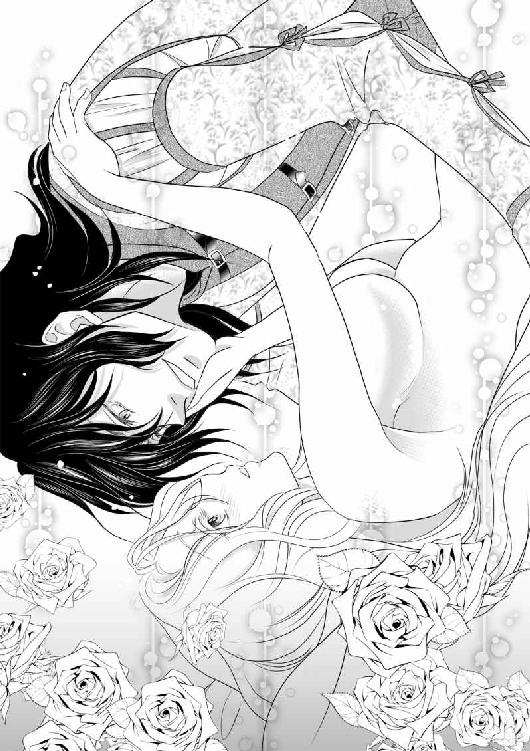
女王はディトリッシュの妹となる王女を生んだ後、王位を退いた。対外的には出産後の健康の回復が遅れたためと声明を出したが、女王も、生まれた赤ん坊も健康だったために誰も信じなかった。
即位したディトリッシュは正当なる反逆王と通称され、同時にアリアーヌは王妃となった。
王妃アリアーヌは、父母にさえ弓を引いて王冠を手に入れた王の妻には相応しくない美貌と慈悲の持ち主と評され、王の異父妹をふたりの間に生まれた王子、王女達と分け隔てすることなく、兄弟姉妹のように育てたことで更に称賛された。
アリアーヌの両親には爵位と領地が与えられ、妹達は縁談と持参金に不自由することはなかった。
師であった仕立屋夫妻は王宮に迎え入れられ、最晩年まで宮廷裁縫師として腕を揮った。
クロエは王妃アリアーヌの忠実な侍女であり続けたが、ただひとつ「相応しい男性と結婚を」という奨めだけは決して受け入れず、生涯独身を貫いた。後に女官長の地位を得たクロエの墓碑には『王妃の生涯の友』と刻まれた。
アリアーヌは美貌と美意識ゆえに服飾の女王と呼ばれ、王都は洗練された服飾の発信地となった。
狂王、或いは反逆王と呼ばれて畏れられたディトリッシュ王は、近隣諸国の予想に反して平和な外交と穏健な統治に努め、家庭にあっては良き父であり年の離れた異父妹との関係も良好だった。そして、生涯にわたり王妃の望みだけは全て聞き入れたと伝えられている。
【了】
あとがき
お買い上げいただき、最後までお読みいただいた皆様に、心より感謝申し上げます。作者・伊吹芹でございます。
美男美女、身分違いというカップルが主人公の物語をお楽しみいただけましたならば幸いでございます。
実は、「訳あって仕方なく似合わない女装をしていたのに、お裁縫が大好きなヒロインに衣装をプレゼントされて、どんどん綺麗にされてしまううちに本気で恋をしてしまう王子様」ってどうなんだろう、大丈夫かな......と、どきどきしながら、そっと提出した原稿だったのです。
これが許されるＴＬというジャンルの懐の深さ、そして素晴らしい挿絵を描いてくださったイラスト担当の純友良幸様に驚嘆しております。
「女性と見紛うほどに華奢で美しい王子様」ではなく、「女装した男性として美しい王子様」を見事に描き切ってくださいました。
純友良幸様とは、他のお仕事でもコンビを組ませていただいておりますが（ご興味を抱いてくださった読者様は検索してみてくださいませ）本当に薬箪笥のようにたくさんの抽斗をお持ちの方です。
勿論、アリアーヌの美しさ、可愛らしさは申し上げるまでもございません。
純友様、今回も、本当にありがとうございました。
さて、このカップル、ディトリッシュは様々な汚名を受け入れたまま国王に、アリアーヌは未だ貴婦人修行中でありながら王妃になってしまいました。多分、ふたりとも生涯にわたって恐れられたり、『非凡』だと言われたりしてしまうと思われます。
しかし、国は平和に統治され、アリアーヌは王妃としての公務の合間を縫ってディトリッシュの衣装（男物）や子供達の産着を縫い続けることでしょう。
反逆王ディトリッシュの生涯の寵臣であった後のリーブル公爵パトリスの手になる公文書によれば「王と王妃は生涯仲睦まじく、多くの王子王女に恵まれ、幸福な人生を送った」とのことです。
つまりは、めでたしめでたし。
この大人のための御伽話が、読者様のお気に召しましたならば作者は幸せでございます。
伊吹芹
二〇一六年四月吉日
トパーズノベルス
同時配信二〇一六年五月二七日配信予定
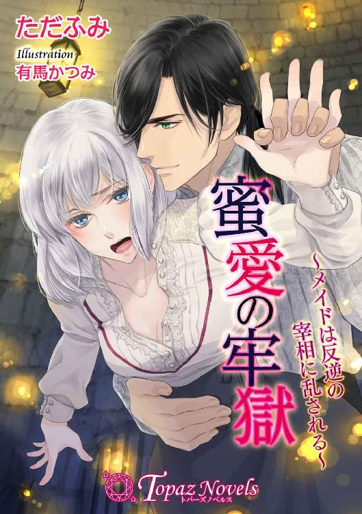
蜜愛の牢獄～メイドは反逆の宰相に乱される～
【書下ろし・イラスト十枚入り】
著作：ただふみ
イラスト：有馬かつみ
「君は想像よりずっと甘くて美味しいですね」
王宮で働くメイド・オデットはある罪人の世話を命じられる。王妃暗殺未遂で投獄された宰相・ジェルトリュドに会いに行くと、襲われて純潔を奪われる。抵抗するオデットだが、次第にジェルトリュドとの行為にのめり込んでいき......。
トパーズノベルス
同時配信二〇一六年六月二四日配信予定
お嬢様は欲求不満!?～フィアンセと蜜夢の呪い～（仮）
【書下ろし・イラスト十枚入り】
著作：大原一恵 イラスト：深山キリ
「君はずいぶん、可愛く乱れるんだね」
立花財閥の令嬢・結里花は、ある日から凌辱される夢を見始める。不安な日々を送りつつも誕生日を迎え、親が決めた婚約者・俊尚と初対面するが、俊尚の手が夢でいつも結里花を助け出そうとしてくれる手だと気づき！
蜜約～ラシェルとふたつの白い薔薇～（仮）
【書下ろし・イラスト八枚入り】
著作：燈花 イラスト：緒田涼歌
「きみは、僕たちふたりに、愛されすぎてしまったんだよ、ラシェル......」
芸術家を目指すラシェルは、画商の息子ギデオンに一目ぼれする。だが、彼に婚約者がいると知り、ラシェルはギデオンの誘いを断ってしまう。その後、進められた縁談で出会ったのはギデオンと瓜二つの青年で......！
トパーズノベルス
幽閉王子とお針子の寵姫
電子第一版発行 二〇一六年五月二七日
著 者 伊吹芹
イラスト 純友良幸
編 集 オフィスふたつぎ 二木由利子
デザイン 荒木香樹
発行所 会社名 アイデジタルパブリッシング
所在地 東京都渋谷区渋谷一‐八‐七
© Seri Ibuki / Yoshiyuki Sumitomo / Ai digital publishing 2016
※本書の一部、あるいは全部を無断で複製複写（コピー、スキャン、デジタル化等）、転載、上演、放送することは法律で特に規定されている場合を除き、著作権者、出版社の権利の侵害となるため禁止します。
本書を代行業者等の第三者に依頼してスキャンやデジタル化することは、たとえ個人や家庭内で利用する場合であっても一切認められておりません。